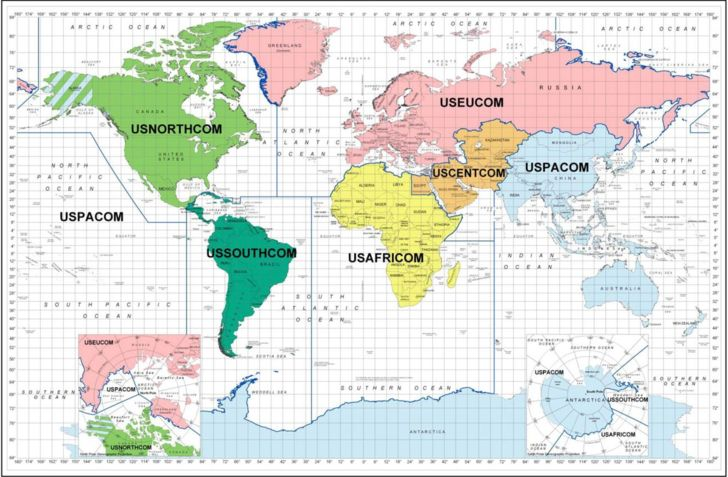
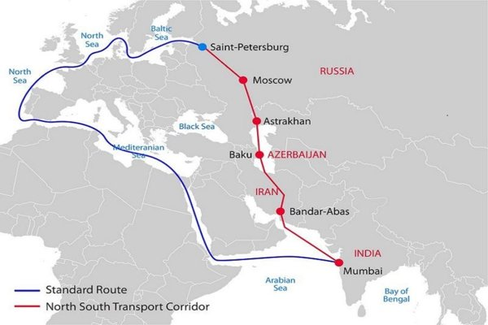
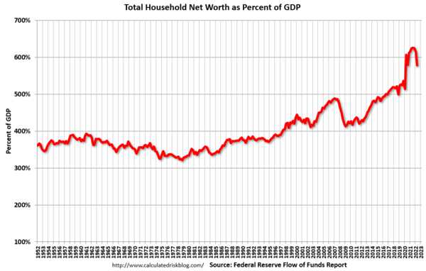
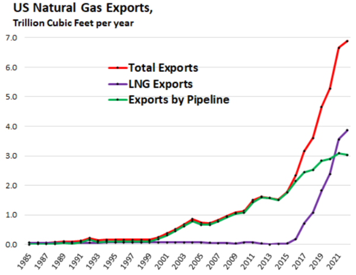
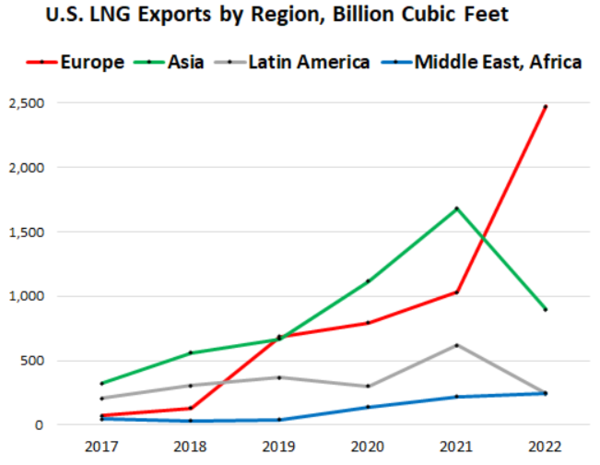
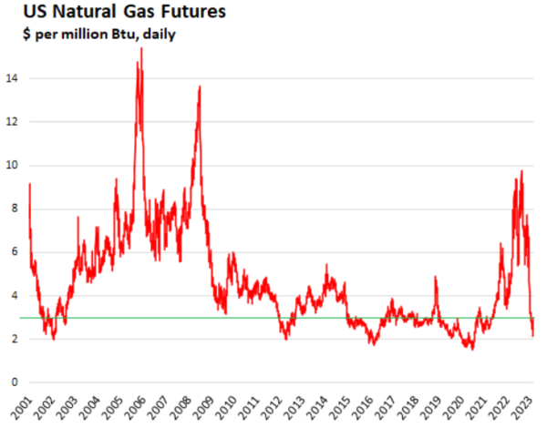

【戰略】【國際】從SWIFT制裁俄國，看中國的對應之道
2022-03-11 15:08:00
原文网址：https://blog.udn.com/MengyuanWang/171980706
烏克蘭
烏克蘭爭議自2014年的廣場政變至今已有八年，其間俄國一方面積極强化自身經貿金融體系，以承受既有和可預見的歐美制裁措施，另一方面主動爭取歐盟決策核心，與Merkel達成默契，簽下Minsk協議，並建設北溪二號管道，賦予德國在下一輪衝突中置身事外的餘裕。很不幸的，在Merkel退休過程中，英美果然趁機挑起事端，而繼任的德國新政府毫無戰略警覺和眼光，即使在北溪剛好建成，法、意兩國領導也已經積極溝通，試圖安排歐俄和解的背景下，依舊拒絕終止冷戰結束以來北約的前侵策略，自願步入昂撒集團預設陷阱，成爲新冷戰的前綫炮灰。
Putin和Scholz在2月15日會面不歡而散，幾日後冬奧順利結束，俄方隨即對烏克蘭發起全面軍事行動，代表著完全放棄七年來的多邊外交策略和辛苦而得的成果（一旦烏克蘭易幟，Minsk協議和北溪二號就純屬多餘；俄方剛剛遣散了北溪歐盟公司的所有職員，正式接受幾十億美元投資打了水漂），改以單邊手段解除來自北約的軍事壓迫，這很明顯是Scholz先背棄兩國外交默契才可能發生的結果。其後英美自然要求歐陸國家承擔起制裁俄國的兩敗俱傷損失，並且開始準備資助對俄佔烏克蘭進行游擊騷擾（例如英國外交大臣Liz Truss公開支持英國傭兵加入對俄作戰，已有丹麥跟進）。這樣不但立刻造成歐盟經濟大失血，而且在東歐留下長期戰亂的潰爛創口，手段之辣、用心之毒，令人髮指；然而德國和歐盟領導階層居然毫無所覺、全力配合：前者打破二戰後傳統，捐贈武器資助交戰方（不過我並不把德國再軍事化本身算是個威脅；這是因爲依照他們當前的行政效率，10年内都不可能有任何顯著的戰鬥力提升，届時歐洲整體的衰落早已明顯化，他們的國力絕對無法負擔高昂的軍費，所以在那之前，即使這一屆政府冥頑不靈，下一屆也必然會放棄再武裝的企圖）；後者則同意多方面封鎖、制裁俄國，其中最受矚目的，是將俄國的主要銀行踢出SWIFT網絡之外。
SWIFT
SWIFT是環球銀行金融電信協會的簡稱，1973年由一群歐洲銀行合作成立，任務是建立自動化、標準化的電子訊息網絡來取代舊有的轉賬匯兌手續。其後普及到全球，並在美國設立了一個重要的分部。2001年九一一事件之後，美國國會立法通過了愛國者法案（Patriot Act），授權並要求國安部門對全世界電信做全面監控，其中也包括了SWIFT，連歐盟内部的所有交易記錄也被强迫轉交給CIA、NSA和財政部，然後依美國國内法來做單邊懲處。一個典型的案例，是2012年丹麥人Torben Nødskouv向一家德國批發商網購古巴雪茄，通過銀行轉賬支付了13萬7千克朗（約當2萬美元），但因爲美國對古巴實施貿易制裁，這筆錢被SWIFT自動沒收。這當然違反歐盟法律，但受害者依舊申訴無門。
同樣在2012年，美國首次直接使用SWIFT作爲外交制裁手段，目標是伊朗的主要銀行。原本伊朗早已全面無法使用或擁有美元，但失去SWIFT之後，和歐盟之間的歐元貿易也因而停滯，經濟受到嚴重打擊。這裏的重要細節，在於SWIFT基本上依舊是歐系銀行的同盟，24名董事中只有兩人代表美國銀行，以及中、俄、日、澳、加、新、港、南非各一人。基於美元的長臂管轄早已是國際上的家常便飯，包含所有金融系統和通道，但受害者還可以改用歐元；通過進一步劫持SWIFT來做制裁，美國封閉了使用歐元進行國際貿易的替代管道，而且因爲歐元是歐盟的内定貨幣，這也實質管控了歐盟的對外貿易。
2014年的第一波東烏衝突期間，就有將俄國排斥出SWIFT的企圖，後來因爲Merkel的反對而作罷，俄方隨即建立了自己的支付通訊網絡SPFS。中國的努力更早，在伊朗受到制裁後一個月，人民銀行就開始籌劃CIPS（人民幣跨境支付系統），2015年年底正式啓用。目前每年價值140萬億美元的國際跨行支付中，SWIFT占比90%以上；CIPS的數字表面上似乎相當於5%，也有説法認爲只占0.5%，目前我尚無法確認如何可靠地解讀這些互相矛盾的統計資料。
外匯儲備
理論上，SWIFT只是一個支付管道，受到制裁的國家想要繼續使用歐元，儘可以改用其他通訊方式，除了SPFS和CIPS之外，電傳打字機、電子信函、電話、電報和甚至信件都是潛在的替代。所以實際上，被SWIFT踢出系統，完全不是媒體上所吹噓的“終極核選項”，而只是美國依靠貨幣霸權對敵人做金融打擊的許多步驟之一，其實際意義在於防堵對方改用歐元，因而必然伴隨著關閉其他後門的手段，其中最重要的，就是扣押受害者的外匯儲備。這個明顯違反國際法的强盜行爲，在伊朗、委内瑞拉、古巴、阿富汗等國被制裁的過程中，早已被使用過，這次被應用在俄國身上之所以驚人，純粹在於後者的經濟體量和國際地位，遠非那些弱小國家可比。
1990年代中期，美國金融財閥利用美元的低利率，對第三世界大幅放貸，然後在1997年收網，憑藉著協同一致的拒絕結轉（Roll over）美元貸款，以及在貨幣市場的杠桿做空，成功擊破許多亞洲國家的金融護盾，然後由IMF出面，强迫這些國家賤賣優質民族資產，例如韓國的三星就是因此而被外國財團獲得多數股份。事後新興工業國家普遍記取教訓，纍積史無前例的外匯儲備，雖然短期内避免重蹈覆轍，長期下來卻反而增強了美元的國際額分，容許美國對外輸出通脹壓力，這也是在其後25年美聯儲得以簡單印鈔來資助國内無度消費的基本原因。
俄國也是1997年危機的受害國之一。Putin掌權之後，努力整頓經貿，長期維持財政和貿易雙重盈餘，得以建立龐大的外匯儲備，當前總價值高達6300多億美元，僅次於中、日、瑞士，位居世界第四位；其中超過半數是歐元資產，美元計價的只略高於1/7，這顯然是已經考慮過昂撒陣營的永恆敵意和美元霸權的搜刮機制了。然而德國和歐盟出乎理性預期的自我傷害，依舊讓俄方的準備落空，一夕之間失去對大半外匯儲備的掌控。接下來俄國必須面對的，是對盧布的賣空攻擊：既然俄國中央銀行無法動用自己的外匯儲備，自然也無力在貨幣市場對抗賣壓。美國這個操作的用意，卻已經不再只是搜刮資產，而在於通過截斷外貿，引發經濟混亂，以達成政權更迭的最終目標。
新外交態勢
本月這一系列事件，代表著冷戰結束後，現代世界歷史專注在和平經濟發展的全球化階段正式終結，昂撒集團成功裹挾歐盟，逆轉了30多年來歐陸核心國家緩步尋求外交獨立的努力，在歐洲重新建立新一場冷戰對立。德國的新政權徹底放棄了Merkel的務實路綫，不惜充當損失最大的炮灰，尤其值得中方警惕。美國的如意算盤，毫無疑問的必然會想要利用這場衝突作爲前例，在有合適藉口時把各種協同打擊手段複製在中國身上，將新冷戰帶到全球每個角落；届時中方將不再能依靠理性的德國總理做出制約，反而面臨比美國還要更歇斯底裏地使用經貿制裁手段的歐盟。昂撒媒體已經對中方多次栽贓，香港、新疆、和未來幾年有相當可能的臺海衝突，都可以簡單引發歐美聯合經貿制裁。然而中國對外貿的依賴，遠高於俄國，受制裁的影響倍增因子也會是數倍於俄方；這才是德國政略轉向的真正威脅所在。
與此同時，第三世界國家卻對昂撒集團的宣傳和作爲普遍表現出疑慮：印度和阿聯酋在安理會表決中，選擇做出和中國同樣的棄權；土耳其、以色列、南非、沙特都拒絕明確表態；就連以親美著稱的巴西現任總統也不想參與對俄制裁。此外歐盟國家並非鐵板一塊：法國的Macron顯然明白事實脈絡，曾經盡力安排歐俄和解，可惜因Scholz作梗無功而返，現在迫於昂撒輿論攻勢才假意附和；意大利的Draghi同樣參與了對俄談判，在上月試圖轉任虛位總統失敗之後，反而可能在總理任上多留幾年，成爲另一個智商正常、可以理喻的歐盟領袖；而德國新政府在關閉北溪的問題上，也曾拒絕美方要求數個月，證明其仍對本國工商精英的專業意見有若干尊重。
貪婪如美國現政權，也極可能會想要等到對俄鬥爭告一段落，再轉過頭來打擊中國。中方必須認清，俄中不但唇亡齒寒，而且如果俄國能成功存活，過程中對歐盟所作的任何反擊都將有嚇阻作用；所爭取到的時間，也是在賦予中國額外的機會來做好一切準備。因此中國的對應之策，分爲短期扶助俄國，和長期預做抵抗兩大類，以下分別討論：
短期因應措施
昂撒宣傳鋪天蓋地，歐盟群衆民意沸騰，中國作爲臺面上的旁觀者和調停者才能對俄國做出最大幫助，所以不宜公開頂撞，招惹暴民怒氣，一切實際作爲以低調爲上，多做不説，靜等西方幼稚民衆的注意力自然過期消退。公開外交，應專注於“和談解決”、“民生優先”、“互相尊重”等等中性辭令，與法、意和第三世界區域强權合作，推動和談；如果能形成非正式聯盟，同步發話，將會有最大效果，也有利於為稍後討論的長期策略扎下基礎。
中國的巨額外匯和全面工業實力，是俄方當前最需要的救生丸。因局面還在迅速演進之中，政策細節討論不可能趕上時效，這裏只提供原則性和組織上的建議。首先，人民銀行應該立刻和俄國中央銀行成立永久性（原因參見下文）、副行長級別的聯合辦公室，統一指揮貨幣市場運作。國務院則可以考慮建立臨時性的跨部門小組，處理幾個事項：第一應俄方要求來統籌提供所需物資，並視己方需要嘗試買下被歐盟拒絕的俄國產品；第二研究如何幫助中國企業替代即將撤離俄國的歐美公司；第三與俄方協同，重新安排因戰亂和制裁而被打斷或干擾的交通綫。至於加速推進天然氣管道的建設，我已在上一篇文章（參見前文《2022年國際局勢的回顧與展望》）裏特別强調過了，不再贅言。
當前美國經濟已出現嚴重的通脹信號，美聯儲若不積極加息，可以確定會進一步惡化；與此同時，各級政府依舊面臨龐大的結構性赤字，美聯儲若積極加息，會使公債利息支出大幅飆升，財政收支徹底失衡，而且各類金融資產的極端泡沫一夕之間被刺破，絕非美國虛弱的實體經濟所能承受。中俄在自身情勢穩定之後，應該在合理範圍内積極采納所有可行手段，包括讓人民幣穩步升值（如果能與其他出口國協同，更爲理想，參見下文有關亞元銀行的討論），盡可能將通脹局限在歐美自身，從根源上削弱西方對外作惡的能力。
長期對應的原則
中國出口型製造業的過度强大，原本讓所有其他新興工業國心有疑慮，不願走得太近；未來5-10年，中國的經濟會繼續以高於全球平均的速度成長，從而產生更大的國力不平衡，更加不容易説服這些國家參與中方主導的國際整合。然而中國準備面對昂撒聯合歐日未來必然會嘗試的全面制裁，除了健全自身之外，更重要的是預先爭取盟友，並且通過國際組織、條約和既成慣例來事先固化他們的立場。現在由於歐美的過度擴張，對第三世界產生心理震撼，後者的主要成員全都對歐美制裁俄國有兔死狐悲的反應，反而為中國創造了一個稍縱即逝的良機，可以先抓穩俄國，建立新聯盟的核心，然後再以其作爲示範，逐步吸引其他國家進入以中國為中心的衛星軌道。換句話説，中國應該徹底摒棄韜光養晦的被動心態，積極主動地建立替代性國際經貿體系，升級多邊關係，充分把握當前由俄方做出重大犧牲才爭取到的機會，主導新世界秩序的重組。
昂撒集團對不順從的國家，打擊起來無所不用其極。雖然金融經濟制裁的效率最高、代價最小，如果中國的軍事力量露出破綻，美國同樣會想方設法做針對性的攻擊，因此這方面的準備也不能輕忽，尤其戰略性軍力格外重要：畢竟必須先消除美方做核訛詐的可能，才談得上其他方面的鬥智鬥勇。在這一點上，Putin早已做出示範：他優先投資重建核武，而且嚴防死守，務求在核嚇阻上滴水不漏，非常值得中方借鏡。
即使只看金融經濟制裁的手段，美國也從來沒有道德和法律的下限。每次受害者根據上一輪制裁做好準備，美方總是樂意無限加碼，直到對手承受不起爲止。所以即便這一次對俄的新制裁，已經包含了扣押存放在歐美銀行的主權資產，也不代表未來美方想不出更離譜的新花樣，例如對美國國債直接賴賬作廢，或者連民有的股權和地產也一並沒收。唯一能杜絕被掐脖子的辦法，是嚴格檢視所有西方主導的國際經貿政治法律體系，設法對所有節點做出替代。在這個過程中，最要不得的心態，就是懼怕與美國脫鈎；事實上，只要是歐美主導而中方對其有依賴，那麽幾乎可以確定會被用來制裁中國。我將在下面挑選一些最需要替代的組織和工具做討論，但本文的清單絕不是詳盡無遺的；中方有必要另外做出全面、系統性的檢討。
長期對應的策略：軍事方面
前面已經提到，有足夠的戰略嚇阻能力，是與美國對等周旋的必要前提。這裏的所謂“足夠”，指的是同一個數量級的第二擊核彈投送能力；換句話説，在承受美國先發打擊之後，還必須有夠多彈頭能突破美方的導彈防禦系統，摧毀數百個目標。當前中國的核武備，遠遠低於這個需要，亟待加速彌補。尤其抗打擊能力最佳的導彈核潛艇，剛好就是中國軍工技術落後美國最遠的項目，必須賦予更高的重視和優先。
彌補核潛艇技術弱項的一條捷徑，是引進俄軍的最先進樣本；這裏戰略導彈潛艇可能太過敏感，因而可以專注在攻擊核潛艇上，亦即Yasen-M。我建議購買四到八艘，除了供核潛艇研發單位參考之外，也立刻增强海軍的遠洋戰力，為戰略導彈潛艇和航母戰鬥群提供護航服務。因爲潛艇的身份識別靠聲紋，中俄兩國共用一個型號還有額外的好處，也就是當其中一方保持中立時，敵方即使偵測到潛艇也不能簡單確定國籍，也就不能貿然攻擊。此外，俄國軍工企業可能用得上這筆外快；如果俄方願意以貨易貨，中方還可以順便推銷自己的先進水面艦艇，以對第三世界做免費的廣告。這次俄軍入烏作戰，頗受限於中大型無人機和實時偵測信息網絡的不足，這些裝備也是可以供俄方考慮的選項。
長期對應的策略：金融方面
在金融方面，基本是對既有歐美體系節點做替代；這必然會需要中俄兩國央行的長期密切合作，所以前面提到的聯合辦公室，應該做爲永久性的機制。
我們首先考慮SWIFT。支付系統在電子信息技術上的要求很低，中俄應該能夠很快整合既有的兩個系統，推出統一的標準，然後强制要求所有在兩國有分行或者想要使用兩國貨幣的外國銀行，都限期采納。中方應該指定幾家廠商，以平價對外國銀行提供裝機服務，務求迅速普及；對人均收入水平極低的落後國家，更可以考慮以援助形式推廣。國際支付系統正在面臨新一代技術的挑戰，包括數位貨幣和零售支付系統的跨境聯網；在這些方面，中方已經有足夠的本土技術和經驗，不難快速升級，努力的重點方向是要尋找更多國家的合作。此外，信用卡網絡也可以連帶整合並推廣。
本文稍早提到IMF在1997年金融危機期間，為美國財閥搜刮亞洲民族資產打了先鋒；這個角色很可能會在當前醖釀之中的下一波全球性通脹危機下重演。與亞投行所模仿的世界銀行相比，IMF才真正是國際金融體系的樞紐之一，不但一再充當昂撒財團對外金融搜刮的白手套，而且實質上作爲不挂名的國際破產法庭兼最終資金來源，有著很大的規則制定權和執行權。建立替代IMF的機構，是將財務虛弱國家從英美金融桎梏下解放出來的必要步驟：如果中國想要聯合第三世界，一同抵抗歐美制裁，就也必須提供財政破產重整的服務，而衆籌顯然優於自己獨自掏腰包。
不過SWIFT和IMF，都還只是歐美主導下國際金融體系的零部件，那個主導權的根基，其實在於美元和歐元的貨幣霸權。其中美元佔大約60%的國際額分，歐元佔20%，相對的，人民幣額分低於3%。原本歐元是替代美元的最佳選項，現在歐盟被美國裹挾，中、俄和所有第三世界國家都只能另謀出路。然而任何金融工具都自帶很強的網絡效應：市場額分越高，交易阻力越低，自然吸引用戶，貨幣也不例外。要將人民幣的額分在短時間内提升一個數量級，先天就面臨極大的阻力；與此同時，美國對衝基金虎視眈眈，人民幣作爲中國金融體系對外的防火墻，又不能輕言自由浮動兌換，也就更加難以在國際上推廣。
我認爲這個難題的最佳解決方案，是基於一個多年前中方曾經構思過但被迫放棄的選項，加以改良擴展；這裏我指的是IMF的SDR。SDR，亦即Special Drawing Right，本質上是一籃子貨幣的合成體，類似股市的ETF，也是一籃子股票的集合，然後整體再被當成一支新股票來做交易。SDR是現成的貨幣籃子，但沒有被拿來當流通貨幣使用過；當年中方的提議，明顯是對美元和歐元的挑戰，所以很自然地被IMF拒絕了。現在中國和其他國家對替代貨幣有了更急迫的需要，也就應該聯合起來，獨立於歐美體系，建立新的籃子貨幣，名字可以叫做“亞元”，以沾“美元”和“歐元”的光。
籃子貨幣容易建立和推廣：只要成立一個亞元銀行，任何財務健康的國家都可以相對簡單地加入，貢獻若干自己的貨幣，增加亞元籃子的總值，然後亞元銀行發行對應著所增價值的新亞元，作爲交換。如此一來，各成員國仍然保有既有的獨立貨幣，國内金融體系絲毫無須變動，完全封閉也不要緊。亞元只用在國際貿易、外匯儲備和國際大宗貨品定價上，不受單一國家的掌控操弄，是理想的國際通用貨幣；而且可以先小幅試用，再視情況增減投入。中、俄是先天的創始成員國；伊朗、委内瑞拉的財政不平衡，不適合加入，但也可以純粹作爲使用者；只要再爭取到沙特、阿聯酋和卡達，立刻有了全球油氣定價權，從而獲得和歐元叫板的底氣。雖然亞元銀行的規則細節，有待仔細考慮謀劃（尤其對希臘式的財政失衡和土耳其式的貨幣濫發，必須預做防範；換句話説，必須有維持亞元與成員貨幣之間合理匯率範圍的穩定機制，我建議參考Keynes在1944年Bretton Woods會議中所提出的原始方案，亦即所謂的Bancor+國際結算組織，但最終細節當然應該由中俄專業團隊通過嚴謹論證來協同決定）；在當前歐美金融霸權的緊迫威脅下，這顯然是值得優先嘗試的方案。
長期對應的策略：國際治理
第三世界國家的廣汎合作支持，對本文所有的建議都會有幫助，而且事實上是其中絕大部分倡議的成敗關鍵。中方應該從既有的“一帶一路”基礎上，更向前邁進一大步，參考歐美的前例，建立一系列永久性國際組織，將合作關係綁定固化，不但成倍增强對抗制裁的能力，而且對圈外國家也會很强的示範和吸引作用，就如同歐盟會員資格在過去幾十年對東歐國家，包括烏克蘭的政治路綫有高度影響一樣。
然而這些潛在合作對象的經濟、政治、地緣背景差異很大，顯然不宜以官僚習性一刀切强制爭取，必須循序漸進、步步爲營，因應國家需要、國際情勢和各國國情做出彈性選擇和隨機適應，這要求有非常高級別的外交決策者持續做出專心處理，否則會有弄巧成拙的危險。中方應該先仔細考慮是否能夠並且願意投入足夠的高層管理和決策資源，再決定參考或采納以下的建議。
這裏我認爲，應該模仿二戰後的歐洲，建立一系列初級的跨國合作組織，由中俄扮演當年德法的角色，優先吸引周邊和重要新興國家，以作爲第三世界凝聚力量的核心。可以立刻建立的組織有：
1） 對應著歐洲經濟共同體（EEC）的歐亞經濟共同體（Eurasian Economic Community），初始會員包括中、俄、哈薩克斯坦、香港，未來潛在會員包括東盟國家、蒙古和白俄；這裏的入會資格，必須是財政和貿易收支平衡的經濟體。會員之間的實惠，從相互關稅全免開始，逐步統一工商業標準，建立共同的監管機構，協同跨國交通建設，然後慢慢向關稅同盟（亦即對圈外國家采取統一的關稅政策）邁進。
2） 對應著歐洲煤鋼共同體（ECSC）和歐洲原子能共同體（EAEC）的歐亞能源共同體（Eurasian Energy Community），初始會員包括中、俄、哈薩克斯坦、伊朗、巴基斯坦，以及如果能爭取到的話，阿聯酋、沙特和卡達。入會資格是油氣出口國，以及中俄核電技術的進口國。我認爲世界正在向新能源轉型，油氣出口國也會想要引進新能源技術，所以應該把兩個類別合並在同一個機構之中。這個組織的長期任務之一，是統一長途電力輸送標準，建立洲際電網，以互通有無。
3） 歐亞空間合作組織（Eurasian Space Cooperation Organization），初始會員包括中、俄、哈薩克斯坦，以及任何有衛星發射或製造能力的國家。這個組織的實際目的，是作爲裝點和平合作的公關樣板，以及加强多邊交流的通道，並沒有實際經濟或國安意義，所以入會資格相對寬鬆。
印度作爲中俄之外最重要的第三世界國家，原本應該是外交爭取的對象，然而印方由於文化和歷史傳承，對中國有極爲深刻的非理性敵意，不是中國單向友好態度所能影響改變的。拒絕其加入中國主導的國際組織是正確的原則，否則就將複製上合組織實質癱瘓的惡果。如果爲了安撫印度而必須遞出橄欖枝，唯一可以容許印方參與的，是歐亞空間合作組織。
歐洲經濟共同體建立之初，號稱是爲了消弭未來戰爭的可能；這是歐亞經濟共同體可以照抄的外交公關説辭。一旦歐亞經濟共同體步上正軌，就可以設法推動適用於整個組織的“反歧視/反制裁法”，讓任何參與對成員國做制裁或歧視待遇的外國企業，自動喪失所有專利、版權、商標和減稅優待，並且納入特別監管，由專門機構天天拿著放大鏡來做檢查。
在更長遠的未來，中國會有對所有現存的國際法庭和仲裁組織做替代的需要，這是應該預做準備，然後視國際局勢發展見機（例如某國際法庭發生醜聞或重大變故）出手的事項。
【後註一，2022/03/11】本文成稿於十天之前，至今歐俄對峙局勢已進入下一階段，亦即美國正在全面施壓，要求德國立刻徹底禁止俄國油氣進口，而且不惜先做示範。雖然美方尋求替代供應商，要比德國容易得多，代價也相對低得多，這仍然是一個重要的戰略升級，很可能接下來會有類似敘利亞的化學武器栽贓事件，以鼓動民意逼迫德國采納自殺性政策。俄方顯然已有預期，正在外交宣傳上準備預先消毒；未來一兩周，將是這方面博弈的關鍵時段。
【後註二，2022/03/21】我以前反復解釋過，Council on Foreign Relations是美國建制派精英集團對外宣傳顛覆的統籌機構之一。這次Biden政權執行的烏克蘭戰略，成功綁架德國和歐盟，正是建制派宣傳機器多年努力的成果；然而扣押俄國外匯儲備卻嚴重損害了美元的信譽，美國國内的金融財閥必然會有怨言。五天前《紐約時報》忽然刊登專文（參見《Hunter Biden Paid Tax Bill, but Broad Federal Investigation Continues》），證實Hunter Biden的Macbook以及其中所含的電子信件不是俄國假造，引發又一波對Biden家族在烏克蘭有貪腐的指責。我認爲能讓《紐時》對一個民主黨建制派的傀儡總統如此捅刀的勢力，除了華爾街之外，就是以色列，但後者實在沒有理由出手，只有前者對Biden忽視美聯儲的警告，主動破壞既有國際金融秩序，極可能引發資金大幅流失，會有很强的不滿。
因此我强烈懷疑當前這些民主黨系的幕後權力精英正在内訌，尤其剛剛又看到Council on Foreign Relations的資深“經濟學家”在《華盛頓郵報》（2020年Hunter Biden醜聞爆發後，《華郵》就是領頭指控Putin假造證據的建制派喉舌）發表社論（參見《Ignore the naysayers. Dollar dominance is here to stay.》），宣稱美元完全不受威脅，論據是美元額分還沒有任何下降！這顯然不是誠實的專業意見，而是政治性的檄文，反而更加暗示背後有隱密的權力鬥爭，所以我在上面做了一些簡單的分析，只能説是邏輯上較可能的真相，達不到博客平常要求的嚴謹性水平，然而這類議題的事實一般永遠不會公佈，間接推理是不得已的辦法。這並不是清談，而有著嚴重而近期的後果：期中選舉只剩不到八個月，基本可以確定共和黨會大獲全勝，届時Hunter Biden的電子郵件將足以引發總統罷免案；如果華爾街依舊對Biden懷恨在心，這個罷免案就會有通過的可能！
【後註三，2022/03/25】今天我才看到敘利亞總統Assad一周前所給的一個演講（參見《President Bashar al-Assad on the Ukraine war》），雖然他的論點對這個博客的讀者應該不算新奇，但我想它在當前局勢下有重要的代表性，亦即是第三世界國家治理階層的普遍心聲，值得有興趣的人去一探究竟。
【後註四，2022/04/04】留言欄有人問起Kazakhstan軍方和US Central Command之間的合作，我提到USCENTCOM只是戰區級別的司令部，美軍共有11個，其中6個是地理性質的，參見下圖：

【後註五，2022/04/19】俄烏戰事一個正面的附帶效應，是許許多多良心人自動自發地挺身而出，對歐美假新聞機器做批評打擊。剛剛看到又一個吹哨人（前任北約研究員）十天前發表的文章（參見《Former NATO Military Analyst Blows the Whistle on West’s Ukraine Invasion Narrative》），值得關心國際事務的讀者參考。
【後註六，2022/04/20】在過去八年，作爲其奪權的手段之一，烏克蘭的新納粹勢力不斷對親俄派做出綁架、處決和暗殺，受害者至少數千，可能上萬。俄國出兵之後，他們更是變本加厲，先針對政客，然後在過去幾周開始有系統地清除媒體和自媒體人；Gonzalo Lira是外國人、知名度高，但本土的被害人其實遠遠更多，甚至連俄佔區都不安全，例如今天位處Kherson的知名博主Valery Kuleshov在自家停車場被人用自動步槍連人帶車打成蜂窩；這裏是烏方自我慶功的文章（參見《Rich Biography of a Pro-Russian Blogger Shot Dead in Kherson: Crimean Trace》），其中吹噓這已經是該市被俄軍解放之後的第二起類似事件。
【後註七，2022/04/22】《The Dreizin Report》是另一個良心博客。昨天的博文（參見這裏）中，列出烏克蘭總統特別顧問 Oleksiy Arestovich（過去三年是Zelensky治下的實質宣傳部長，知情人往往拿他來和Joseph Goebbels以及Baghdad Bob做類比）受訪的談話，翻譯如下：“（當前）烏克蘭的理念，烏克蘭的主要國家理念之一，是盡可能多地對自己和他人撒謊。 因為如果說真話，一切都會馬上崩潰，因此有必要不斷發明新的虛假話術。 這是我們根本的、不平衡的邏輯矛盾。”
讀者如果有耐心看完Dreizin的那篇博文，最後一段還有Zelensky自己所發的視頻，他顯然是剛剛享用了古柯堿；難怪兩天前Lavrov接受印媒訪問，被記者拿Zelensky的談話要求評論時，回答說：“（Zelensky）什麽話都說的出來，視他剛剛喝什麽或吸什麽而定。”
【後註八，2022/04/28】根據最新的媒體爆料（參見《BOMBSHELL new Hunter Biden emails emerge》），在2019年Biden籌備大選期間，Hunter Biden向他要了80萬美金來支付生活費用。雖然賬目明細表和電郵通訊是剛剛才被揭露證實，但兩年前競選過程中就有風聞，卻被《Twitter》、《Facebook》和主流媒體全面封殺禁言。讀者應該拿這條新聞來和【後註二】做對照，考慮我所討論的Biden將做不滿總統任期的可能性。
【後註九，2022/05/11】今天看到《NY Times》的這篇社論（參見《America and Its Allies Want to Bleed Russia. They Really Shouldnt》），是開戰以來第一次有昂撒主流媒體如此高調地與宣傳主旋律（英文叫做“The Narrative”）唱反調。考慮到三月底《NY Times》已經揭過Hunter Biden貪腐案的瘡疤（參見【後註二】），我們基本可以確定該報幕後有反Biden的勢力。最近有傳言，Obama對Biden極度不滿，可能會支持Harris上位；雖然沒有任何實證，但值得繼續觀察。
【後註十，2022/05/18】今天消息傳出，人民銀行貨幣政策司司長孫國峰被免職查處。回想2015年股災期間，我說監管單位的政策反應讓人百思不得其解，事後果然有多人被查；和現在對比，頗有Déjà vu之感。孫的貪腐雖然可能不是直接和外人互通款曲，但連基本的職業操守都做不到，談何開創人類新時代的壯舉？
【後註十一，2022/05/27】這裏有一篇文章（參見《SERVANT OF THE CORRUPT》）詳細解釋了烏克蘭政權和巨富互相勾結的貪腐行爲，值得有興趣的讀者一探究竟。
【後註十二，2022/06/01】最近烏克蘭士兵投降視頻越來越多，但基本說的都是俄語，有英文翻譯的（參見《WOW Ukraine Soldier Surrenders to Russia on Call with his Mom says Russians are the good guys!》和《18th Marine Battalion of 35th Brigade, appealing to public for help to withdraw ( with subtitles)》）很少見，所以和讀者分享。這種視頻當然可以僞造（例如即使大家都知道俄軍對手機管制很嚴，烏方一樣日常發佈“截聼的俄軍士兵電話”），不過類似的幾千個俄方視頻至今還沒有任何一個出現破綻，如果是造假，那麽俄軍執行了人類有史以來最成功的宣傳造假作業。
此外，我剛剛第一次看到關於亞速營戰俘的視頻（參見《Exclusive footage from the colony in Yelenovka -Prisoners of Azov who surrendered in Mariupol.》），在此供大家參考。
【後註十三，2022/06/01】過去幾天這個截圖被廣汎轉載，是昂撒謊言戰的很好總結。其實這些標題來自《The Telegraph》的一個專欄作家，他的水平在英美媒體算是中上程度了。

【後註十四，2022/06/08】根據本期《經濟學人》報導（參見《Has Russia legalised intellectual-property theft?》）在歐美對俄國做出全面制裁之後（似乎發生在三月中旬），俄方的反制措施包括剝奪了所有“不友好國家”的智慧產權；讀者可以拿來和正文倒數第二段的建議做參照。
【後註十五，2022/06/16】蘇聯解體之後，俄國曾對高等教育體系做了大幅改動；但與中國教育部不同，這並不是因為俄方被洗腦，接受了美式教育理論，而純粹是爲了和歐洲對接，方便學生出國留學，所以勉强忍受低效、僞劣的制度。現在既然歐美的制裁已經帶來全面脫鈎，那麽自然沒有理由繼續犧牲學生的數理邏輯水平，所以State Duma正在研究新法案，準備恢復蘇聯時期的教育制度（參見《Russia plans to create a new system of higher education》）。
【後註十六，2022/06/19】這場俄烏衝突是人類至今自媒體報導遠遠最豐富、迅捷的一場戰爭，全世界有興趣的人，都可以追蹤觀察戰場細節，例如烏方陣地周邊佈滿上百個彈坑，幾乎每天都又有新的案例視頻。這裏是一個比較少見的觀點，一群烏克蘭士兵在地下掩體承受近爆彈著的震撼（參見《Russian Artillery is a Alarm for alertness of Ukraine Forces》）。
【後註十七，2022/06/23】第14次金磚國家領導人會議剛剛開幕，習近平致辭特別强調應立即加緊擴員（參見《习近平：金砖国家不是封闭俱乐部，应推进扩员进程》）。這其實是錯過在第一時間建立以中俄爲核心（亦即排斥印度）的世界新秩序，亡羊補牢的手段；畢竟若是賦予印度五大創始國之一的地位，會有永久性的頭疼。既然來不及搞“兩大創始國”的架構，那麽十幾個創始國就自然代表著沒人有特權，要靠威望和實力説話，這是錯過三月那個機會之後的最優解。
我想順便指出，所謂“中國自有國情”、在國際無爲而治是智慧，是顛倒因果的自我安慰。從上面那個例子可以簡單看出，客觀的理性戰略計算，不但普世皆准，而且也是中國執政階層念兹在兹的考慮。他們之所以沒有抓緊每個機會，不是不想，而純粹是巨型官僚體系反應慢的結果，所以必然也是最高層時時用心改進的重點之一。
【後註十八，2022/06/30】前天消息傳出，伊朗將成爲金磚集團的第一個新成員；然後昨天俄國媒體報導（參見《Iran and Russia Revive the North-South Transport Corridor》），俄國已與伊朗達成共識，要重啓“北南通道”計劃。上周我說Putin下決心與西方攤牌，大政略就必須也改爲東進加上南進，“北南通道”正是南進政略的核心，使俄國與印度之間的貿易綫不受北約鉗制，參見下圖。請注意，這個重啓是在今年一月就達成默契，昨天正式確認公佈；我們不能排除伊朗以加入金磚做為同意合作的先決條件的可能性。
當然，從另一個角度來看，俄方需要的戰略夥伴能優先進入金磚，而巴基斯坦卻連旁聽的資格都沒有，這個落差所反映的，正是過去幾個月我反復討論的建立新國際秩序過程中的主導權議題。

【後註十九，2022/07/17】九天前我在回答留言欄97樓的時候，提到Pompeo減肥應該是為選最高公職做準備。這其實是去年我看到他的新照片時，立即就有的反應（剛被證實，參見《Mike Pompeo ready to run against Donald Trump for presidency》），原因是衆所周知，他是Koch Brothers的人，非常適合在白宮做代言人。不過他沒有州長或參議員的經歷，分量不夠，2024年參選的主要意義在於嘗試從Trump那裏釣一個副總統提名，2028年再選總統是比較切實際的時段。
【後註二十，2022/07/24】根據報導（參見《US concerned about Zelensky’s safety》），Jake Sullivan在7月22日出席在Aspen舉行的國安會談期間，發表演講，談到“美國關心Zelensky的人身安全”。雖然主流媒體全部噤聲，但許多自媒體爭相轉述，並普遍解讀為Biden政權正在考慮安排讓Zelensky當烈士，例如《Zelensky Is About To Be Assassinated By The Americans》。我認爲言之尚早，因爲這個説辭也可以為把Zelensky接到美國、設立流亡政府，預做準備。
【後註二十一，2022/07/25】四個多月前，我在【後註二】討論了Hunter Biden的貪腐案很可能會在期中選舉前後迅速升級，成爲美國國内政治鬥爭的藉口和焦點。今天共和黨籍參議員Chuck Grassley發表公開信（參見《To Honorable Merrick Garland and Honorable Christopher Wray》）給法務部長Garland和FBI局長Wray，要求解釋兩年多前Hunter Biden將筆記本電腦遺留在修理店，被FBI扣押之後，不但沒有追查，而且反過來有系統地抹黑修理店主是俄國間諜。這應該是共和黨方升級的一步，但最終是否足夠迫使Biden辭職，還是要看民主黨内訌的結果。
【後註二十二，2022/08/06】過去五個多月，我曾多次在視頻訪談中估算俄烏雙方的傷亡數字。昨天網絡上出現一份號稱是烏克蘭國防部内部的機密文件（參見《Casualties Leak》；雖然目前無法證明其真實性，但内容合情合理，如果是僞造，必須是專業情報組織所爲，而且是比MI6高明的情報組織；但本次衝突中，俄方在宣傳戰的大戰略原則是以真破假，沒有理由爲了這種小事而破例），比我簡單估計的平均每天1000人還要慘烈，這裏是一些重點：1）傷亡總數（未明確解釋是否包含内政部所屬的納粹民兵，也未解釋輕傷不計的標準何在）為191000人，但不含失蹤（MIA），後者因爲太多而無法統計；2）即使在全民動員之後，當前國防部所屬部隊（AFU）的建制滿員率依舊低於48%；3）重傷人員和任何出一點毛病的西式武器都必須外送到波蘭救治修理。
【後註二十三，2022/08/06】民主黨剛剛成功在國會通過一個新法案，得以花費3000多億美元來推動新能源（另外還有一些相對較小的開支項目，用來補貼醫療保險等等）。雖然這只是Biden去年要求的1/10，但參議員Manchin放棄阻撓還是有點出人意外。他的動機可能來自遏制通脹，因爲這個法案的真正重點在於增稅7000億美元，連名字都叫做“Inflation Reduction Act of 2022”。民主黨政客似乎終於瞭解，在當前的通脹海嘯之下，他們在年底的期中選舉必然慘敗，因此必須至少擺出有所作爲的姿態，並且無所不用其極地想方設法暫時把通脹壓下去，這裏頗有嫌疑的一招，是由能源部信息局（Department of Energy, Energy Information Agency, EIA）在8月3日發佈汽油需求急降的奇怪結論，隨即導致WTI批發價的崩潰，參見《Gasoline Demand Dip That Spooked Market Sparks Furor Over US Data》一文中的質疑。
【後註二十四，2022/08/09】昨天FBI突襲搜索了Trump在Florida的莊園住所Mar-a-Lago（參見《FBI executes search warrant at Trumps Mar-a-Lago in document investigation》）；這是違反美國200多年憲政慣例的驚人事件，原因在於文件是機密與否的決定權屬於總統，所以卸任總統向來都有著不成文的特權，可以隨意將機密文件帶走回家，等自己的總統圖書舘成立，再視情況轉交，以便集中管理。要破例，不止牽扯到FBI本身，而且必然要由司法部長正式授權，然後再由聯邦行政庭法官（Federal magistrate judge）批准。很巧的是，這位法官正是當年Jeffrey Epstein的辯護律師（參見《Judge who OK’d Mar-a-Lago raid Obama donor once linked to Jeffrey Epstein》），以致立刻有各式各樣的謠言滿天飛，其中最活龍活現的，說Trump帶走的機密文件中，有揭發Deep State重大惡行的證據，所以必須及早扣押消滅。
雖然這些陰謀論者可以議論說這麽粗糙的操作，必然激怒支持Trump的民衆，對民主黨期中選舉的選情反而有不利的影響，所以不應該是為選舉而爲，但我認爲Deep State留下嚴重文件證據，還落入Trump手中，而他又能憋上好幾年不大嘴拿出來誇耀，這樣的敘事更不合情理。我們已知當前民主黨高官這兩年的表現，一再證明他們極度不入流，那麽既然爲了阻止Trump在2024年重新選總統，用司法手段提前下絆子，是我自2020年大選結果出爐就預料的必然，現在出現粗暴過激的手段反倒不一定是不合理的。
【後註二十五，2022/08/11】今天前CIA官員Larry Johnson發表新博文（參見《DID DONALD TRUMP BAIT THE FBI?》），討論一個關於Mar-a-Lago突襲的陰謀論變種，頗有點意思。他的關鍵觀察在於，不但FBI本身事前事後瞞著媒體，連Trump陣營（例如Junior）也都一並憋氣憋了一整天，直到傍晚才由Trump自己在社交網絡上公開宣佈；這是詭異反常的現象（不過還不足以用來做邏輯否定，因爲合理的解釋還是存在的，例如FBI可能認爲兹事體大，Trump那方則一開始搞不清楚狀況，等等）。過去兩年的特別檢察官調查，已經證實2016-2017年的所謂RussiaGate，是Hillary競選團隊有意編造的謊話，由FBI配合演出，所以Larry Johnson推測，有可能是Trump故意泄露風聲，假稱自己擁有可以證明FBI不止是被動地受騙於Hillary，而原本就是Co-conspirator共犯的文件，誘使他們打破憲政慣例，以便在期中選舉前激發支持Trump的民意熱情。一般的陰謀論往往必須假設不合理的人性反應或者機率極小的機緣巧合，然而這個理論雖然證據薄弱，但邏輯算是合理，所以在此簡單復述介紹，供大家參考。
【後註二十六，2022/08/13】今天消息傳出（參見《RUSSIA BUYS 1,000 DRONES FROM IRAN AND EXPANDS THE LEVEL OF STRATEGIC COOPERATION》），宣稱俄軍已向伊朗訂購1000架察打一體無人機；這將大幅助益於對抗烏克蘭的遠程火力，例如HIMARS。這項采購計劃是自2009年俄國向法國訂購Mistral兩栖攻擊母艦之後，最重要的對外武器訂單，也是歷史上俄軍首次從“第三世界”引入主要武器系統。之所以會破例，而且對象不是技術層次更高的中國，很可能是基於【後註十八】中所討論的地緣戰略需要，另有中國試圖維持中立姿態的考慮。
【後註二十七，2022/09/02】這是三年前Rand智庫所發的方案論文（參見《Extending Russia， Competing from Advantageous Ground》），但我剛剛才留意到；内容主要建議美國不要直接參與對俄軍事行動，而是利用顔色革命在其周邊但不是本身挑起事端，然後聯合歐洲以經濟戰、尤其是能源制裁勒死俄國。因爲它與今年俄烏衝突的實際進程有相當的重叠，我們無法排除Victoria Nuland（此次事件的幕後導演，美國國務次卿）拿它當原著劇本的可能性。
【後註二十八，2022/09/08】德國網絡新聞媒體《Weltexpress》剛剛公佈了一份Rand在今年1月（亦即俄烏戰爭爆發前一個月）為美國國務院和中情局所準備的機密報告（參見《Documentation: A confidential RAND report dated 01/25/2022》），題目叫做《Containment of Germany for United States And the World》，詳細討論了利用綠黨引發德國對俄國做出自殺性制裁，將能徹底打垮作爲歐盟政治架構基石的德國工業，從而對歐洲釜底抽薪。
雖然博客從八年前就反復介紹昂撒傳統的離岸平衡手策略，連第一綫和第二綫炮灰的分工職能都解釋過幾十次，但美國人自己向來小心謹慎、避免留下直接證據。這篇機密報告是首次實錘了NeoCon的用意和設計。然而我還無法絕對確認這個爆料的真實性；在歐洲基本已經自裁的今日，有些許可能是某人爲了喚醒民衆，選擇編造文件以喚醒大衆。不過即使在最糟情況下，這篇報導也會屬於細節錯誤、主旨正確的類別。
【後註二十九，2022/09/10】博客從三年多前就開始預估這一波通脹性經濟危機，各方面的前因後果都反復仔細探討過了；今年的新發展純粹只是歐盟主動為美國擋槍，所以過去幾年所談的歷史性崩潰轉爲適用於歐洲，那麽美國的經濟前景如何呢？簡單來説，美元堅挺和美國能源自給自足消弭了相當程度的外來通脹壓力，但内部供給鏈問題仍在，美聯儲增息依舊遠遠落後於現實發展，所以通脹只是暫停、而不是消失。與此同時，軍工、能源和金融財團在歐洲的盛宴則為經濟不斷注入新獲得的資金，抵消了加息所帶來的經濟增長阻力。不過最重要的正面因素，還是在於企業（Corporate）和家庭（Household）都受益於過去三年美聯儲和聯邦政府的天量印鈔注水，現金儲備處於歷史性高點，美元匯率達到20年來最高位又對其購買力加成，所以當前沒有整體經濟崩潰的財務背景環境，必須等到這些儲備被逐漸消耗之後，如果美元份額能如我所預期的被迅速削減，而經濟沒有找到足夠的替代補藥（例如在歐盟之後又瓦解消化一個日本量級的主要經濟體。），才會有大幅下行的危險。至於這需要多少時間，請參考下圖；這是家庭資產净值和GDP的比率，可以簡單看出2021年後半達到歷史新高的625%，最近三個季度下降了50%，距離上次2008年經濟危機全面開始的450%還有125%，大約需要一年半到兩年；這個時長的估計對應著近似展開序列的首項（第零級估算值）。

【後註三十，2022/09/15】Rand智庫正式否認【後註二十八】所討論的機密報告的真實性。這對專業的公關人員來説，毫無困難，畢竟美國的實際作爲有目共睹，報告不論真假，都適合做開啓話題的引子；事實上Rand的否認反而提升了其能見度，高調談論更加名正言順，例如可以這樣開場：“近日一份爭議性很高的報告描述...”
【後註三十一，2022/09/20】剛剛看到有人下功夫把已證實的美國對烏軍援一一列舉出來（參見《The Full $16Bn List of What Biden Has Sent Ukraine...》），對軍事有興趣的讀者可以參考。
【後註三十二，2022/09/28】《Dreizen Report》（參見《Checkers?? USA Plays Chess》）針對北溪被炸事件做了一個很有意思的分析，值得參考。他指出事件後網絡上普遍出現的“俄德有秘密接觸”假説，並不必須是100%的空想，而可以有一個間接的佐證，亦即俄方在事發後（他整個敘事的最大不確定性，就在於這兩個事件孰先孰後；目前公開訊息有矛盾，所以請大家對Dreizen的理論繼續存疑）立刻宣佈延遲五天認證東烏四州的入俄公投，可能與其有因果關係。這裏的邏輯如下：東烏入俄不但讓俄軍能夠名正言順地升級戰事，事實上强迫俄方必須升級，然而烏方很可能會以關閉最後一條天然氣管道來做報復；這在有北溪做備份的背景下，毫無實際影響，但在北溪被炸之後，就成爲强大的威脅。美國人選擇這個關鍵時機來炸，已經很可疑；Putin因而必須花五天時間來謀求應對之策，更加印證德俄之間很可能有秘密談判、準備妥協。現在沒有了供氣的手段，這個妥協失去意義，俄國的財政再次面臨潛在問題，德國的經濟則萬劫不復，而且即使原本沒有秘密談判，經濟後果的結論依舊是有效的。
【後註三十三，2022/12/13】我從俄烏戰事初起，就指出歐盟對俄經濟制裁，其實是圖利美國的產業自殺，連帶著有益中國。不過剛剛看到這條新聞（參見《European wind turbine manufacturers face tough 2023》），還是有點吃驚，風電這樣的傳統歐洲强項居然都開始崩潰：歐盟廠家不但基本棄守第三世界市場，連在本土都面臨中國廠商的嚴厲挑戰。
【後註三十四，2022/12/19】剛剛在留言欄145樓批評了昂撒的狠毒無恥，就看到一篇印證這個結論的文章（參見《How British colonialism killed 100 million Indians in 40 years》），介紹一個新學術研究結果，估計英國光在1880-1920的40年之間，就殘殺了1億6千5百萬印度人，遠超昂撒文宣所指控的蘇聯、中共、北韓等等共產國家殺害自己國民的數字總和，以往卻從未被公開討論過。
【後註三十五，2022/12/29】俄國副總理兼工商部（Minpromtorg）部長Denis Manturov在接受《Tass》采訪（參見《следующий год будет переходным к новой модели развития промышленности》）時，解釋CR929進展不順的核心問題，在於中方堅持使用歐美子系統，而俄方堅持采用中俄自行開發的替代品。下一輪談判將在2023年第一季進行。
【後註三十六，2023/01/03】人民銀行終於開始認真購買非美元資產（參見《Central banks buy gold at fastest pace in 55 years； Analysts are pinning China and Russia as big buyers》），但步調依舊落後於其他國家。
【後註三十七，2023/01/14】今天看到《Moon of Alabama》轉載法國人類學家Emmanuel Todd受訪文章的英譯版（參見《Emmanuel Todd On The Third World War》），覺得這位我第一次接觸到的當代戰略思想家有著遠高於任何臺面上知名“戰略專家”（含Mearsheimer，更別提Niall Ferguson那種昂撒版的龍應臺）的水準，在此綜合他和博客既有的論述標識出一些重點。
首先，因爲美方至少早在2009年就已認清中國是威脅其霸權的反抗力量根本來源，所以任何掩飾、躲藏、和緩的企圖都是徒勞。中國制定對應政策時，唯一值得避免刺激的聽衆是歐、日、韓等外圍附庸；針對霸權核心，越是畏首畏尾，就越鼓勵他們得寸進尺，也越迷惑己方的内部團結、影響民心士氣。去年俄國揭竿而起之後，西方集團和人類社會的對立明顯化、尖銳化，上述這個博客反復强調的道理也就更加重要明確。但這裏還有一個簡單的系理，值得大家注意，亦即在這個集團對抗和去全球化的大環境下，中方不可能置身事外，也就不可能最漁翁得利，真正會自動在雙方消耗過程中獲得最大利益的，必然是印度。例如中俄要建立新國際治理體系，不得不凴白賦予印度平起平坐的第一級地位；美國再工業化策略也必須將勞力密集產業優先轉移給印度；昂撒國家内部理工人才培育不足，原本主要由華裔彌補，未來必定會將份額轉交給印度人。所以進一步引申，歐俄兩敗俱傷，直接受益最大的也並不是中國，而是美國和印度，那麽既然這兩者都是堅持要與中方做零和博弈的國家，中方當然有間接的損失；不幸的，中國在此事上並沒有太大的迴旋餘地（博客以往沒有深挖這條邏輯路綫，只給了結論的原因），能做的只有盡可能扶持俄國經濟，並避免資助印度。
其次，Putin高調提倡傳統價值觀，以替代社會主義作爲整合第三世界大政略的文化思想核心，Todd也予以點明，值得中方參考模仿（請讀者參考去年我在視頻訪談所討論的，儒家是典型的理性人本主義，而任何理性人本主義都必然也是社會主義）。當然這方面還有更深更廣的學術理論考慮，例如宗族結構向來是社會和國家體制的決定性因素之一，反映出的現象包括婚姻倫理；多年前我就思索過這一點（參見前文《表亲与Cousins》，不過我想絕大多數的讀者都沒有明白那篇文章的真實用意，那也難怪，我原本想先鋪好基石，然後再建立大廈；這類“基石”性的簡介文章在博客早期很多，後來大部分被用上，這篇是落單的孤兒，最近幾年這類討論會只寫在後註或留言欄），然而並沒有建立出讓自己滿意的完整思想架構，也就沒有再寫後續文章。這一方面是因爲既有的西方理論甚爲偏頗，是為殖民主義正名的歪曲人類學/歷史學體系的一部分，無法簡單修正；另一方面此題牽扯過廣，我沒有足夠的時間精力全神研究，從頭做到尾。我建議有志的中國年輕社科學人投入這個方向（亦即用宗族結構和婚姻傳統來解釋不同民族的政治文化差異）。
【後註三十八，2023/02/25】前天上《龍行天下》節目（參見《美國的貨幣危機與中國的三份文件》），順帶提到產生滯漲危機所需的先決條件；這其實是本月初爲了回復兒子發問而整理出來的思緒，並不來自經濟學界的既有知識，所以讀者可能聼不出相關背景和用意，在此簡單解釋一下。
小孩所提的問題是：MMT（Modern Monetary Theory）說無限印鈔沒有負面效應，固然明顯忽略了美元作爲國際儲備貨幣的紅利和危險，但最近幾個月通脹率下降，美國經濟學界出現許多認爲這輪危機已經安然度過，美聯儲應該立即停止緊縮的文章（例如這篇：《James Galbraith: The Quasi-Inflation of 2021-2022 – A Case of Bad Analysis and Worse Response》），其中列舉細節，强調沒有强力工會的經濟體系就能自然將通脹局限化，其謬誤之處何在？我爲了提供完整的認知架構，爲他列舉並逐條分析通脹危機惡化的三要素，亦即貨幣超發、供給鏈問題、和連鎖反應的機制。這裏前者提供能量條件；如果把滯漲比喻成一輛重載貨車衝下斜坡超速失控的過程，貨幣超發決定了斜坡的坡度。供給鏈問題（例如能源價格上漲和這次的新冠疫情）則是啓動下衝的導火綫。連鎖反應機制（典型的是50年前的美國工會工資議價能力，也是小孩這次所提問題的核心）對應的是斜坡是否平順、利於加速；這對刹車作用强弱（對應著中央銀行的貨幣政策）的確有相當影響。
當前美國金融資本有很大一部分不願意看到資產（含股市和債市）價格持續下跌，所以積極鼓動學術界代言人編造説辭，要求美聯儲轉爲寬鬆。但他們當然是以偏概全，只用供給鏈問題已經緩和、和連鎖反應機制弱於70年代兩個論點就試圖“證明”沒有通脹危險；事實上貨車一旦啓動，供給鏈的導火綫功用已經完成，而且目前美元超發遠超當年，全靠60%的外匯儲備市占率來緩解，一旦這個機制被反轉，那麽斜坡的有效斜度驟然大幅升高，若達到接近斷崖的程度，豈是地表粗糙就足以減速停車呢？
【後註三十九，2023/03/05】一年前俄烏戰事升級，我曾將美國推動戰爭的短中長期利益考慮一一列舉，指出其中的短期立即利益集中在金融、軍工和能源三項產業。能源包含原油、精煉油和天然氣三大類，以下是去年天然氣一項的產能和價格波動圖。請大家注意，即便有Freeport LNG Terminal的爆炸事件，美國對歐盟的LNG出口量仍然增長為2.5倍，價格則增長為4倍，所以總出口金額增長為10倍；因爲1立方英尺的天然氣相當於1030 BTU，可以算出美國天然氣生產商在2022年一年單只從歐盟顧客就獲得230億美元的額外暴利，若計入對全球的出口，則比前一年增收600多億美元（含以管道輸送給加拿大和墨西哥的200多億美元）。而且這裏用美國國内價來計算出口量，不但不包括對自家消費者的剝削（2022年内銷約爲出口量的4.5倍，所以金額接近3000億美元），也不含出口交易商的獲利。LNG在歐盟卸貨的到岸價，在2022年平均約爲$40/mBTU，亦即比離岸價格又增加為四倍，因而可以簡單估計交易商大約從歐盟增收700億美元。加上出口給亞非的LNG，美國天然氣產業的總產值達到5000億美元，約爲2021年的五倍，佔年度GDP的2%。



【後註四十，2023/03/19】烏克蘭的財政無底洞，連鈔票由自家隨便印、而且在金融軍工能源上已經撈到幾萬億的美國都不想承受，必須轉交由IMF接手，以便拿第三世界所交的資金來打擊第三世界對北約的反抗（第一批次150億美元，參見《IMF Approves Rule Change That Would Allow New Ukraine Loan Program》）。這當然違反原有的IMF章程，但歐美很簡單就把規則改了。博客自創始以來不斷强調必須優先建立替換IMF的國際組織，主要考慮在於為第三世界國家提供沒有私心的破產仲裁；當前IMF悍然將人類世界的公款拿來給北約私用，則是割席分坐的最佳理由，只是九年來無動於衷的相關單位主管，很可能無法忽然培養出國家急切需要的眼光魄力。
【後註四十一，2023/08/10】根據《The Intercept》報導（參見《SECRET PAKISTAN CABLE DOCUMENTS U.S. PRESSURE TO REMOVE IMRAN KHAN》），新泄露的外交密件證實2022年4月Pakistan總理Imran Khan下臺，的確正如當時博客所推測，是美國國務院所安排推動。我一再强調，中方不干涉他國内政，並不代表應該坐視殖民帝國搞侵略或顛覆；這個原則適用於去年的Pakistan，也適用於現在的Niger。
【後註四十二，2024/10/07】德國剛剛公佈了八月的工業產值數據，環比在慘淡的七月（負3.2%）之後居然又掉了5.8%，遠超市場預期的2%（參見《German industrial orders slump more than expected in August》）。過去三年來我不斷針對歐盟和尤其德國的貨幣、金融、政略和工業政策做出極爲嚴厲的批評，稱之爲新任歐洲作死冠軍，曾有人質疑布衣也敢藐視國家級和洲級領導；現在看來還算太客氣了，應該叫做本世紀的全球冠軍才對。
【後註四十三，2024/10/10】2024年金磚集團由俄國擔任主席，峰會將於10月22-24日在Kazan喀山市舉行。昨天俄方公開宣示兩項倡議：1）建立金磚支付體系（參見《BRICS working on own payment system – Russian finance minister》）；這將用來替代SWIFT，但目前的初步提議只限中央銀行之間的連綫，所有銀行全面互聯有待未來的擴充。2）替代IMF的國際破產法庭職能（參見《Russia Calls on BRICS Partners to Create Alternative to IMF》）。這兩項都是博客多年來强力建言，反擊昂撒金融殖民帝國的釜底抽薪之計，對以實業貿易建國的中方尤其重要，卻被反復拖延至今，還要等俄方出面推動最基本的步驟，又一次彰示了中國金融主管單位的誤國誤民。
【後註四十四，2025/04/20】去年底敘利亞Al-Assad政權忽然崩潰，我在留言欄228和229樓討論了事件真相，指出幕後黑手是土耳其的Erdogan，導火綫則是其政敵Gulen死亡、掃清Erdogan與CIA合作的障礙。這個邏輯認知架構有幾個自然的系理Corollary（也就是前兩天在《什麽是科學？》【後注一】討論的“預測”），分別是（1）新敘利亞政權不會强力驅逐俄軍，（2）也不會容許以色列大幅擴張占領區；（3）CIA會幫忙安排歐盟經援，（4）並將一同設法爭取美國國防部撤軍，（5）而Erdogan最終目的則是清除Kurd自治區。經過半年的發展，項目1-3早已應驗；今天消息傳來，Erdogan/CIA團夥成功説服Trump開始撤軍（參見《US military begins large-scale withdrawal from Syria》），那麽接下來他們自然是等待時機發動對Kurd的戰事。
352 条留言
1有兔死狐悲之情（因为他们也经常出手打不听话的小弟）”
2本来把特朗普伺候的很舒服，特朗普还要给阿联酋f35，结果拜登上台后要阿联酋排除华为和其他的中国投资，还对沙特太子杀记者之事多次指责，所以沙特和阿联酋想搞平衡。
王先生，您好。我个人有几个问题，一是我认为这次俄乌冲突有不小的可能会持续一个月以上（当然，不是指打一个月，是指可能会在一个月后双方才会正式停止军事行动）。这个情况有可能吗？我是认为欧美政府都在摆烂（大陆网络用语，指碌碌无为，不做正事，只搞点小事情装装样子）。
二是埃及可能会和以色列起冲突是为什么？是不是因为俄乌冲突导致粮食不足，再导致军事冲突？
三是王先生一直担心大陆被踢出世界经贸体系，可是大陆的网友都觉得这种情况是不可能的，还说“把大陆踢出去就相当于人把自己的动脉给切断一样”
四这次俄乌冲突会不会导致土耳其，伊朗，沙特这些地区小霸主做些什么？
我已經説過，Putin這次的大戰略以政治解決為方針，軍事行動的頭號任務是殲滅亞速營。目前後者被包圍在Mariupol，由東烏民團和車臣部隊負責攻堅，這也是當前俄軍唯一努力攻堅的攻擊方向。我原本估計的三周，還剩下一周時間，應該足以完結戰鬥。其後我預期俄軍行動會以運動爲主，占據戰略要點，對城市圍而不攻，等待烏方投降。
至於問題3，要求我評論爲什麽網絡言論那麽笨，違反《讀者須知》第六條規則，嚴重警告一次，再犯拉黑。
問題4的答案，其實也在正文裏：他們敢怒不敢言，只待有人帶頭，做出沉默但實質的抵抗。
王先生真的对英美宣传套路太过了解了, 话音刚落, 今天经济学人上我就已经看见了这篇暗示俄罗斯未来会使用化学武器的指责, https://www.economist.com/news/2022/03/11/could-russia-use-chemical-weapons-in-ukraine
我甚至都有些怀疑这是不是欧美集团孤注一掷的战略，想趁中俄羽翼未丰时赌一把先下手为强？因为光是看到王先生列的这些”待办事项“就给我一种悲观的情绪，真的有一种时不我待的感觉。个人感觉体制内和金融界的精英根本没有短期内实现这些目标的意图和能力，战略上还比较短视和迂腐。我作为体制外的平头百姓真的担心中国在未来的科技战，金融战，舆论战等领域陷入被动，甚至输掉战争。
在對外方面，我想若是層峰能嚴格要求、明確授權，還是有一點希望的；畢竟外交部的人員水平優於中宣部，年輕一輩之中應該有可堪大任的人才，關鍵只在於必須先把5、60嵗過度自卑的官僚邊緣化。
从最近的新闻看德国还保留有最后一丝理性，在英美的不断挑唆下，依然拒绝制裁俄罗斯的油气出口业务，不知道能坚持多久。
中俄目前在經濟與話語權上，受到盎撒集團煽動諸國一起圍攻，尚處於守勢，以個人所處的學校內部，相信盎薩說詞與相信中俄說詞的比例為２０：３，可見盎撒說謊帝國的厲害！這世上原本就蠢人多而智者少，即使受過高等教育，資質不夠的人想要學到高深的判斷能力，實際上還是頗難的．
現在中俄要如何共同面對盎撒集團的非軍事化攻勢？考驗普丁與習近平對國際局勢的判斷能力．個人對中俄有信心的地方在於：縱然整體實力仍略遜盎撒半籌，但在內部組織力與領導的判斷力上，中俄比盎撒強的多，只要步步為營，有效回擊盎撒集團的小動作，至少能立於不敗之地．
李克强明确表示自己今年退休，所以目前中国的对外战略大动作，按之前惯例，应该会在二十大一中后了，而且后续接班的新人也需要一点时间适应。这样会进一步挤压布局时间，希望高层能打破常规，提前布局。从先生这篇文章的分析来看，给中国进行准备的时间不多了，但由于一直聚焦于GDP，不光是外部战略转型，其内部的各种麻烦也极难短时间打扫干净，只能期盼习的智慧了。
By the way，看台湾媒体社会舆论，在乌克兰的未来几乎确定暗淡，看了之后，反而在脑中预演抵抗剧本，真的只能一声叹息。
既然这里是理性的桃花源，虽然鄙人愚钝，也不能一味索取，应努砖加瓦。为大家推荐一个判断分析预测形势的方法，出自Ray Dalio的《原则》---即对所有人的可信度进行加权，像这次俄乌冲突，乌克兰结果如此明显的情况下，可以排除许多宣传口，节省不少时间。这次鄙人提前不少预测到了原油和小麦的行情，也算是这四五年持续在这学习的收获了。
记得08年金融危机时大陆民众第一次大规模讨论美债、金融安全等话题，官方也正式对美国提出关切，之后美国一位将军还是官员曾公开表示“恶意”抛售美债、美元举动将被视为战争行为。
而这次对俄罗斯制裁直接冻结了其国有外汇资产，甚至是个人财产，中方完全可以在这话题上做文章，毕竟这对各国政府包含富豪的冲击才最强烈。反正都是嘴炮，应公开要求美方做出书面保证，存放在他那的资产要得到必须是安全的，甚至可以延伸到要求美欧各大银行也要做出同样表态。虽然没啥卵用，但起码站在道德制高点上不是。
请问一下疫情是否会对后续的国际形势有影响？目前除了中国以外，大部分地方都已经恢复常态（基本放弃防控）。本来国内上海等大城市也是在尝试“精准防控”，即在不影响人们正常生活和经济活动的基础上，进行防控。但是这次疫情很不同寻常，上周五开始上海突然严格管控（比2020年政策更加严厉，居家办公+很多人居家14天隔离+不允许堂食），深圳更是直接封城。这样突然非常严格的管控政策势必会影响经济活动，不知道王博士如何看待疫情对于未来局势发展的影响？十分担心中国会因此“与世隔绝”。（我个人是很支持精准防控的，和在控制重症与死亡率的基础上，慢慢尝试放开的）
你違反了《讀者須知》第五條規定，嚴重警告一次，再犯拉黑。
您觉得沙特抛出的橄榄枝是否代表他们在认真考虑废除石油美元，还只是用来和美方讨价还价的策略。
更早已經有消息證實，EAEU（前蘇聯成員國之間的經濟合作組織）在三月十一日和中方達成協議，將共同建立“全新的國際貨幣和金融體系”，計劃的核心是一個合成貨幣。再早一天，王毅和歐盟國家外交部長通電話，討論協同調解歐俄爭端，選擇的對象是法國和意大利，但不包含德國。中國政府需要的只是好建議，有了正確方向之後執行效率真是很高，所以我們又一次看到問題出在智庫和學術界。
我自己分析判断，美国会在23年下半年到24年的农历春节前这个时间段在台湾复制在乌克兰的操作，逼迫大陆开战。依据主要是您之前的分析，和我自己进行的扩展分析。
在假设成立的情况下，因为蔡英文会提前知道这个情况，并是美方计划主要的执行者，很高的可能性她会让这个爆发的时间点在台领导人湾选举前。这样可以推迟大选，在无法抗据美方之命的情况下，这样也是对蔡最有利的。后面还可以带着台湾终身流亡总统头衔拿着台湾几千亿的外汇存底去美国生活，它不香吗~
我想问，在这一次的成功实践经验之下，针对两岸的情况，美国人肯定会坚持有效手段，进一步布局新的手段。那么乌克兰这一波，主要是割欧洲经济的韭菜，俄罗斯本身内部的早有准备难以收割，且经济体量小割也割不到什么。而台海这边，大陆是最大经济体，超过东盟+日本+韩国，虽然难割，但大陆必定是最令美方觊垂涎三尺的目标。于是想请教博士 这2年里美方会准备出怎样的收割手段呢？
一旦开打会不会出现基辅这种局面，台军会有样学样打散埋伏在各种民用建筑设施中，挟持民众与解放军对峙？
臺海戰爭打起來之後，當然是昂撒集團聯合所有願意聽話的附庸對中國做全面制裁，這是博客從八年前一開始就解釋清楚的邏輯；這次對俄制裁的經驗，表明了將來會包括扣押外匯、取消欠債、沒收中國企業海外資產等等選項。然而在軍事上也有動手的可能，才是我最擔心的事。這裏我不是指派地面部隊到台灣參戰、或者設立禁飛區，那純粹是去送死，而是考慮戰略層面上中國和俄國的兩大不同：首先中國是昂撒霸權的立即和首要威脅，俄方不是；其次中國的核武力量比美俄小了不止一個數量級。所以在中方完成占領之後，美國會有動力和底氣來繼續升級。這裏有Not mutually exclusive的兩條路綫：首先可以對中國貿易做全球海上封鎖，欺負中方欠缺海外基地的弱點；其次是逐次升級挑釁（例如故意讓自己的航母被擊沉，以挑動國内民意）、結合作假栽贓（例如在臺北或東京引爆核彈），最終得以在西方暴民背書下對中國做全面核打擊，徹底抹除中華民族在地球上的存在。這篇正文在金融和外交的正題之外，特別去談核武備，你想是爲什麽呢？
歐盟在Merkel退休之後，全面倒向昂撒集團，雖然事先看是小機率事件，但這個機率並不是零；換句話説，雖然可以不預期，但必須做準備。這是爲什麽多年來我反復强調要把握Merkel的務實態度，加緊綁定中歐關係。但是歐洲徹底淪爲美國附庸的邏輯後果，推論到底，也同時會使核戰成爲可能，所以我也明確論斷過，加緊提升核反擊能力是保障中美霸權和平交替的絕對必要。這種需要至少十年全力以赴的努力方向，中方卻一直拖到去年才開始著手，這很顯然是無用的智庫和學術界又一次清談誤國的案例，我們只能希望國家足夠幸運，不必面對最嚴重的惡果。
1) 在盎撒全面核打击中国的推演下，俄国和其核武库会扮演什么角色？还是俄国在此之前已经崩溃？
2) 中方的战略核潜艇在短期内追赶俄亥俄/哥伦比亚级基本无望，但若只是在南海的壁垒海域内活动是否能提供足够的核威慑（特别在095/巨浪3服役后）？
3) 面对海上封锁，中方是否能依靠其工业产能扩大海军规模，从而维持与东盟的贸易关系？
2.這裏的重點不在於要求096達到哥倫比亞級的性能，而在於095必須能和海狼級+最新的Virginia改進型一戰，否則後者可以橫行南海，狩獵096；此外，巨浪三必須有足夠的數量。
3.東盟離中國很近，維持貿易交通不是大問題，危險在於必須通過印度洋和太平洋的大宗商品，例如來自沙特的原油和巴西的鐵礦。
此外冷戰結束後出現的現代導彈防禦系統，進一步對戰略核武的數量做打折，而且整體規模越小、必須打的折扣就越大。
現在我給讀者們出個練習題，看看以下兩個可能解釋裏，哪一個比較邏輯自洽：1）Abramovich有超人的金剛不壞之身，加超人的超音速飛行能力，加超人電影導演安排串聯重要事件連續發生的上帝地位；或者2）Abramovich不甘心放棄在英國的大筆資產，請當地的財閥政客“朋友”們幫忙扭轉民意，後者把洗刷公共形象的任務交給MI6和BBC辦理。
西方和附庸國的普羅大衆願意對英國媒體照單全收倒也罷了，中國的公共論壇從上到下依舊樂意撒佈這些明顯的謊言，我認爲有檢討反省的必要，至少當編輯的必須要求基本的真假分辨能力；參見前一條留言回復的必修課程建議。
https://www.inform.kz/cn/article_a3917351
原始消息出自哈萨克国防部
https://www.gov.kz/memleket/entities/mod/press/news/details/347869?lang=kk
我用谷歌翻译了第一段，意思是“哈萨克斯坦共和国武装部队总司令、军备部和美国武装部队中央司令部代表在维和训练中心举行会谈。”
在博客傳播網絡無腦謠言，違反《讀者須知》第六條，嚴重警告一次，禁言兩個月，再犯拉黑。
Although it might be premature to speculate before it is even agreed to, I am wondering why Putin would offer to take Euros as payment via the unsanctioned Gazprom bank, nearly immediately after the Ruble-for-gas decision. From the German reaction I'd presume it is not a major concession on the Russian side, but the sum effect would still be taking Euros as opposed to forcing Ruble/gold-purchase.Am I missing something or is there likely to be other (hidden) terms in the agreement, considering how Scholz was more or less hogtied to the negotiation table with the short 'technical' interruption in the pipes? Or is it just unrealiable 'journalism' again?
On a side note, I did not publicly predict this ruble requirement because I was not sure Putin would be cool-headed/cold-blooded (in the "sangfroid" sense) enough to go all way, not because it was not the obvious right move. In fact, I myself would have done it much earlier and much more broadly, requiring "friendly nations" to do so as well. Accommodations can always be made on a case-by-case basis. Other differences in opinions include the bombing of Ukrainian oil storage: it's something I would have done in the first week of the war, not the fifth. Furthermore, the Russians still have not destroyed any major bridges, not even those near the EU border. Putin was clearly hoping for a rapid collapse of the Ukrainian regime and wanted to minimize both the civilian casualty and the rebuilding costs. While this line of consideration could not be ruled out a priori, it was not something that I personally would base a war plan on. The facts on the ground now prove that 30 years of anti-Soviet education leaves its deep mark on the Ukrainian populace. Recall that the brainwashing power of education systems is an old topic on this blog.
至於Putin用兵爲什麽如此摳門，我已經反復討論過了，可能是一方面低估了過去30年烏克蘭教育體系對國民宣傳洗腦的力量，另一方面則必須保留預防北約干預的戰略預備隊。不論如何，這依舊違反了兵貴神速的原則，所以引發了一連串的戰略和戰術代價，其中最基本的就是讓對手能回過氣來做出針對性的反擊。既然對手的幕後老闆是謊言帝國，這種造假栽贓的事也必然會發生；事實上博客在戰爭一開始就預測過了。
詠春拳的總訣之一是“千招千破，唯快不破”，軍事也如此，所以我也反復解釋過，正確的手段是做好萬全準備，一旦開戰就以絕對優勢兵力速戰速決，不讓對手有喘息回應的機會。這裏我指的不只是對手試圖做出對應性的兵力部署和調派，宣傳顛覆的造假手段也是需要時間來謀劃並執行的，所以一樣適用。
其實從目前已知的事實觀察，若真要做邏輯推演，還可以得到更多的結論，例如Putin並沒有把駐西伯利亞的遠東部隊大幅調動投入歐洲戰綫，這暗示著（亦即不是100%決定性的嚴謹證據，只有機率上的指向性）事先並沒有和中方達成默契和協作。
在先生的提點下，觀察到世界格局變動得很激烈，Merkel退休後的歐盟鬧事猶言在耳，盎薩集團無下限的砲灰戰術，本身的色厲內荏，部落客讀者都可以從先生觀點上認知，其他國家幾乎都在看老大哥對俄國的處置來決定國家的走向。雖然情感上滿認同普丁的家國英雄情懷，但迄今我仍想不透，打的時機(外界看起來不是名義之師)與拖沓的打擊戰略，對俄國的好處與戰略目的，也沒有更多訊息提供來猜測其意圖。(在台灣，我深深覺得中方跟俄國千萬不要低估龐大宣傳洗腦教育造成的民意，它會造成許多的後遺與悲劇，自己對先生的智慧提點永持感恩，對盎薩的口蜜腹劍我則深惡痛絕，周遭的親朋好友，小十年左右的朋友幾乎無說服的契機，要嘛不談要嘛吵架，95%沒有相信你的可能)。
儘管可能未來仍有許多的黑天鵝事件，目前因為美國對俄國的金融制裁，而打開了一個重建全球金融新契機，美元霸權幾乎是露出一個武術上的空門，你不狠狠打一槍都對不起自己，這是至今局面上最值得好好把握的；故在此呼應一下先生的亞元架構意見，對第三世界的使用美元的地區小霸權而言，從龍而上完全是名正言順且必要的，難道還要坐等第三次被洗或被凍結外匯儲備制裁。這龍由盎薩集團的頭號敵人中國來當，開第一槍剛好而已，天時、地利、半個人和皆備，就看你中方敢不敢。雖然可以想見後續還會有更多只要美方有利的就全球化，沒有利的就區域保護的事情，會更多更加激烈。但以現在的局勢演變，讓這一門強大武器少一半威力，卻是當務之急，就怕中方傳統偏安戰略思維，第三世界各國又因強大宣傳而被民意綁架延誤事機。
另一方面，我也覺得敵人的敵人就是朋友，私下加強俄國的各種實質交流，經濟、貿易、軍事等，也是當務之急，這個節骨眼，想跟美國合作或想獨善其身或當不沾鍋的，不是沒有智慧就是太鄉愿了，民族復興的大步應從普丁打開世界格局之始，從此展開才是。
在這樣的背景下，未來幾個月充滿了許多重要的歷史轉折點：德國會被迫立刻放棄進口俄國油氣嗎？放棄之後，經濟後果會有多嚴重？夠不夠推翻現政府？中國能不能采納亞元建議？能不能爭取到中東產油國加入？事後歐盟經濟所受的打擊會是致命的嗎？換句話説，歐盟在這場經濟危機中保持完整嗎？貧窮國家在新冠和通脹雙重打擊下，有多少個會淪入當前斯里蘭卡的困境？有多少政府會被革命推翻？會不會因而有戰爭？在俄軍完成殲滅烏軍主力之前，Zelensky會有足夠的智慧趕緊妥協嗎？如果沒有，那麽Putin會滿足於强制實施當前的要求，還是如我在一月討論的，拿下整個南方沿海的俄語區？法國大選的結果如何？新總統能對歐盟做出懸崖勒馬式的挽救嗎？英國保守黨在地方選舉的落敗會有多慘？Johnson是否因此下臺？女王能再活多久？上一次人類社會身處這個級別的分水嶺峰頂，是1989-1991年那個時段，開啓了後冷戰全球化階段，這次的轉折，會帶來什麽樣的國際秩序？一級强權之間能避免全面戰爭嗎？這些都是很有意思的問題，我們繼續觀察吧。
我思考假設一個國家只有一項經濟優勢，對美元的依賴程度由弱到強應為：資源國、製造國、貿易國、金融國。中國同時是製造與貿易的大國，其製造業和資源國合作對抗美元不難，但貿易部分仍從金融國獲利美元甚多，不易放棄，因此建立亞元時會有這兩種力量拉扯。不過現在應該到了要做決斷的時候了。
用多個國家貨幣組成的籃子來作爲新合成貨幣的本位，自動滿足上面的所有要求：各國仍然保有自己的貨幣在國内使用，匯率可以浮動，增發完全自由，亞元銀行只要預先訂立規則抵抗要求救援資助（執行上是增發亞元來換該國貨幣，等於是人爲地維持其成分占比；所以股份不能固定或只依GDP計算，而必須考慮貨幣濫發的處罰）的政治壓力，就不會有金融上的大損失和危險。參股的國家甚至可以隨時退出，也可以選擇投入的深度，而且成立快、彈性大，是遠遠最優的方案。資源國家現在看來是最重要的成員，其實是世界經濟周期進入整體通脹階段所引起的暫時現象，十幾二十年之後局面可能完全不同，不過難關在當下，所以爭取他們確實是首要優先。中俄的軍事力量也的確會是必要的保障，雖然不足以全面對抗美軍的全球優勢，但在亞洲保護不被顔色革命輕易推翻，應該還是做得到的。至於不作爲，那等同於把幾十年纍積的國際資產送給美國當人質，是明顯的下下策。
這場俄烏戰爭，我最看不懂的是普丁的戰術運用。沒有更多資料，我只能懷疑普丁有些意氣用事，或有私人感情在裡面。
這幾年，所謂民主國家的政客們似乎越來越只重短利，似乎總是在做殺會下金蛋的鵝這種事。譬如美國這次的制裁，美國政客有否考慮對美金霸權的長遠影響？還是他們考慮了覺得沒影響？王先生提到美國商界的反彈。我在想，這種影響應該是未來十幾二十年的變化。選民記憶都是短的。工商和企業界的意見，真的能影響政策？
Biden這次聽從Hillary系的NeoCon，斷送美元霸權，金融系的不滿已經明白顯示出來，若是Obama系決定藉機落井下石，就可以簡單推出己方的Harris上位，這是我最近剛剛詳細討論過的事，讀者應該仔細閲讀，不要重複發問。
Harris依附Obama，然後一起對Biden捅刀的可能性，共和黨媒體也注意到了，大家可以參考以下這個視頻：https://www.youtube.com/watch?v=j58Bx0Ebppw
况且考虑到中国是一个发展中国家，其医疗资源没法和美国相提并论，发达地区和欠发达地区不平衡，农村和城市的医疗资源水平极度不平衡。按照现在的Omicron的罹患率，一旦全面放开，发达城市的老年人还有可能得到医疗保障（没有医疗挤兑的前提下），农村地区尤其是欠发达的农村地区的留守老年人又会是怎样的惨状？
我一直没办法接受某些国内城市居民的“应死尽死”的言论，因为动态清零政策需要社会付出很大的代价，也确实影响到经济发展。但是为了自己的荷包就要坐视在城市里给他们送外卖或是送快递的农村劳务人员的父母“应死尽死”？这些人难道不是精致的利己主义者吗？
Omicron的最新变种BA.4已经在南非快速蔓延，我们还是需要继续观察病毒的变异情况和接下来疫情的发展才能做出正确的判断。
Macron雖然是當前歐盟主要國家中最不笨的領袖，但Marine Le Pen卻有可能比他更獨立、務實。這種個人因素，事先不可能完全確認，但我們可以保持審慎樂觀的態度。
從現在來看，毛時代訂下中方與第三世界的合作方略是正確的，中方也做得還不錯。但又有一條「不干涉其他國內政」的思維，我也覺得尚屬合理，但這邊有一個重要前提是大家都不干涉。邏輯上來看，我不干涉沒問題，但你容許各種境外勢力去干涉，推演到後來也沒你的事了，自己玩去吧...這樣的概念。所以這邊是有一點境外勢力干涉的苗頭，你得做些動作去表明中方的立場做些警告，勸昂薩維持中立，不然大家看著辦。
其實，我個人覺得中方與盎薩集團的博弈從先生發的文章來看(有一篇統計西方媒體抹黑中國的文章)，很早就開始了，另一種形式的八國聯軍早已慢慢形成。再加上百年未有之大局，隱隱有加速的現象，趁現在昂薩集團各個利益山頭因政治因素產生隔閡，無法統一陣線之際，形成中方集團戰線至關緊要。很多時候，是怒其不爭，先生對談中提到馬英九的鄉愿，我當時也是同一時間想到他那一副不沾鍋的態勢，這種經過血與淚的教訓，整整幾代人的隔閡，可能沒有身在其中的人無法體會，對一些看著明白的人，再次發生是很欲哭無淚的。戰略博弈是要下場的，你不下場玩，既沒媒體力量補強，又無適當實力展現，一副隔山觀虎鬥，沒有人會認同你合作意向的。
還是那句老話：一切都應該以事實爲基礎，根據第一原則來做邏輯推論，精算利弊得失。凡是無視事實邏輯，只談類比聯想（上面所談的假“傳統”，就是忽略時代背景，只看過去30年韜光養晦階段案例的無腦類比）的，必然是在自欺欺人。
对于巴基斯坦一事，其应对的难处之一在于其运作在表面上符合法律程序，同时接替者也同样欢迎与中方的合作。然而正是因为如此，事先要求各方表态自己的政治运作与外部干涉无关以展现出中方的掌控力也没有什么实质风险，同时也向外界传达出政局无论发生了什么变化，中方都知悉、掌握甚至默许的信号。这样才能给旁观者一个靠得住的观感。如果给人的感觉是中方和吃瓜群众无异，事后才知晓或者无动于衷，就不太好。
从这个意义上讲，中方还有很多人对于时代主题的变化缺乏认知和准备，没有完全做好自己挑头建立秩序的心理建设，还在处于感慨旧秩序逐渐崩坏的阶段，没有去思考未来的世界局势的全新形态。
美國把中國的對外企圖"抹黑"成朝貢體系，但是當年朝貢的國家哪一個不是賺得波盆滿盈，我想幹脆大大方方承認就是某個體系，當然不用朝貢這麼封建的字眼，可以詳述歷史上和中國交好的國家得到過多少好處，相對於要付出給美國的，不如就攤開這筆帳給大家算一算。
您之前提過的Gonzalo Lira已經失聯4 天了，希望其性命無虞。揭露Ukrainian false flag的人卻被追殺，更加說明歐美的無可救藥了，可謂「小人之使為國家，災害並至，雖有善者，亦無如之何矣」，願為眾人抱薪者，不凍斃於風雪。王先生也請您多多注意。
Gonzalo失蹤之後，有些人說風涼話，認爲他太過招搖、自取其咎；其中大部分是原本就沒有什麽良心可言的，所以自然難以體會為傳播事實真相而犧牲奮鬥的思路，不值得我們理會討論。不過另外還有極少數是同路人，例如《Moon of Alabama》，多年來小心隱藏身份，似乎有資格做批評，但我想在此為Gonzalo辯解一下：和原本就專注在揭發政治黑暗面的MoA不同，Gonzalo並沒有事先計劃要做像是拆穿烏克蘭納粹政權謊言的工作，他的本行是經濟/金融方面的記者，多年來談的主要是歐美資本主義體系的剝削性，不但沒有必要匿名，而且必須實名報導才有公信力。他做公開評論已經很多年了，忽然戰爭在身邊發生、宣傳戰謊言滿天飛，他人剛好處在關鍵地點，有許多獨家的信息；不談的話，對不起良心，匿名談的話，沒人理，所以繼續用既有的管道是唯一的選項。對這樣的選擇，我只能說很佩服他的勇氣和執著；譏嘲他不夠謹慎的，連事後諸葛亮都算不上。
我自己在八年前開始寫博客的時候，也只想要糾正台灣公共論壇的一些錯誤認知，用實名絕對是有助於建立公信力的做法。後來博客討論的越來越廣汎深入，開始碰觸尖銳敏感的話題，要退縮或匿名重來，已經太晚了；這時只能把局面看作考驗自己良心和勇氣的挑戰，在不影響傳播真相的前提下，盡可能避免招惹事端，例如我至今仍然沒有從大陸的任何機構（不論是公家或私營）收過一分錢。這樣的慎重當然不足以保證絕對安全，但如果沒有願意為理想和公益犧牲冒險奮鬥的知識精英，一個國家民族還有前途可言嗎？
2.芬兰和瑞典是不是基本会加入北约了？对局势会有什么影响？
2.有不可忽視的可能：雖然兩國的民意是50-50，但白左政府已經決意要硬闖。不過未來半年國際局勢有很大的變數，她們不一定如願以償。
我對中方政壇的内幕毫無所知，無法置評，只能希望那位專業人士的意見太過悲觀；不過從過去幾周人民幣匯率變動來看，或許是我自己太天真樂觀了。
一個龐大的官僚體系，内部人員素質參差不齊是難免的；事實上，有才華的必然是極少數。我以前反復論證過，中國政府已經算是選拔人才效率最高的。當然這是相對來看，所以有很大的比爛成分。美國固然社科界極度愚昧瘋狂下流，中方人員再怎麽尸位素餐也略勝一籌，真正讓人擔心的，卻是歐美的自然科學界還沒有衰敗到那個程度，而中國吃香喝辣的都是職業騙子。
请教博士，张维为教授发表如下观点:“我们可以考虑推动建立一个平行的、锚在人民币与实物资产上的跨国金融体系”，是不是可以理解，国内智库还是在期待着人民币的国际化，增强人民币的国际地位？好像没有人提出与俄罗斯联手颠覆美元霸权。https://www.guancha.cn/ZhangWeiWei/2022_05_15_639787_s.shtml
此外，在美国加息的背景下，国内依然“量化宽松”（降低外汇储备金比例，降低首套房贷款利率），导致人民币汇率大跌。感觉会打击第三世界国家与中国联手推翻美元霸权的信心。
國内新冠疫情引發經濟下行壓力，稍作寬鬆有其道理。我構想的匯率操作，不是日常的利率調整，而是通過多國協作、政策宣言和外匯買賣來改變市場預期。
留言欄還在接受初級班，但前提是必須虛心發問，而不是趁機發表自己的長篇大論，也不能把博客當成網絡上聊天扯淡的論壇。你的另一個新留言違反《讀者須知》第二和第三條，刪了。嚴重警告一次，再犯拉黑。
Michael-Hudson最近的访谈（Calling to Account the Hereditary Warrior Class | Michael Hudson (michael-hudson.com)）提到他听说在与伊朗、伊拉克和叙利亚的战争中美国国务院会解雇说阿拉伯语的阿拉伯专家，在过去十年左右的时间里解雇了国务院和中央情报局的所有俄罗斯专家， 所以“他们有人不知道俄罗斯发生了什么，也不知道其他国家发生了什么”。 与王先生反复提到的美国高层愚蠢短视很符合。
Neocon和Neolib的重點不在於con vs lib的左右路綫之分，而在於那個“Neo”“新”字：他們特別著重製造國際衝突、混亂、腐敗和戰爭，其創教（此前Neocon、Neolib的教義和此後截然不同）聖經是美籍猶太人Richard Perle在1996年為以色列所制定的政策白皮書《A Clean Break》（參考https://en.wikipedia.org/wiki/A_Clean_Break:_A_New_Strategy_for_Securing_the_Realm，以及https://www.youtube.com/watch?v=Z1LYNy8bhf8），執行則交給美國，所以自然是先從中東開始著手，而且即使後來把目標擴展到東歐和東亞，也依舊由猶太幫主導。他們不計代價也要搞亂世界的核心任務，特別方便財閥政要渾水摸魚，因而可以通吃兩黨、長盛不衰。
此外，許多大陸聽衆對“過去20多年中國外交戰略上基本毫無作爲，所幸運氣極佳”那條論述非常不滿。博客讀者應該知道，這指的是2001年Rumsfield原計劃在2004年挑起臺海戰事、被911事件打斷；2008年金融危機後，美國虛弱不堪，以致雖然立刻開始宣傳動員，對中國做全面妖魔化，Obama/Hillary政權卻被迫反復推遲戰略圍堵，一直到卸任前才出臺TPP和TTIP；然後2016年Trump又意外當選，打斷了建制派的長期戰略部署，並且把對華敵意公諸於世；2022年，又是俄國主動觸雷，代替中方承受西方的新一波全面打擊。這裏的一系列正確戰略認知和反擊方案，都是我提前好幾年預先帶頭提倡，運氣好的，才有中國官方姍姍來遲，運氣不好的，例如當前的貨幣政策，當局還在拖泥帶水、猶豫不決之中。這其實是我一直不熱衷於上大衆媒體節目的主要原因之一：我做的是學術性、教育性的邏輯論證，那些節目聽衆習慣的卻是娛樂性、政治性的主觀反射動作，聽到新觀念，想的不是去原始來源追查細節、補充知識，而是坐地反噴。不過反過來看，明知普羅大衆是無可救藥的愚蠢，也要為國家和人類的前途，努力教育其中少數有理性思考能力的人，原本就是博客的使命；既然還有許多改革沒有被采納，我也只能强迫自己、捏著鼻子和非理性者打交道。
戰術被扭曲，是股市這類國内利益分配的體系會有的問題；貨幣政策則是大國博弈、人類歷史轉折的關鍵，即便有突破性的戰略建議，也必然需要體制内的專家先認可，才有被采納的可能。這裏的問題在於如果他們日常關心的是蠅營狗苟之事，哪可能有餘裕去考慮相關的宏大背景和複雜取捨？反腐固然是必要的糾正，但也會打破組織内部的理性氣氛，阻礙專業意見的客觀交流取捨，讓有心人藉機無限上綱，抹黑出事者的所有立場。例如孫國峰剛下臺，同一天《觀察者網》就有文章宣稱因爲孫反對Modern Monetary Theory，這代表著官方對MMT的肯定；還好幾個小時之後文章就下架了，應該是《觀網》編輯被提醒其作者別有用心，不應爲他站臺。
中國學術界推銷MMT的論述，一般是强調商業銀行在收取存款、轉頭放貸的過程中，已經實質增加了通貨（M2），所以應該根據MMT把這個發行貨幣的權力完全歸公。這其實是徹徹底底的謊言：MMT並不真的鼓吹禁止商業銀行提升資產和（實質）發行通貨；而且要限制它們無序增長，早就另有一套機制（準備金）。MMT的核心論點，在於主權貨幣可以無限超發，而不會有任何不良後果；這種無中生有、憑空創造財富的好事，當然是美元這類享有極高杠桿率的國際儲備貨幣才做得到，而且實際上是在出賣祖傳的無形資產，亦即國際儲備貨幣的地位。
ps.以我的观察如果美国没有实质把亚洲变为北约那样的军事集团对抗，中国不会有实质的反应，但是这样的政策还是太消极、太被动，退一万步说，就算美国以军事实力海上封锁中国，那中国也可以背靠俄罗斯能源封锁南海，登陆琉球群岛，甚至攻击日本本土，逼美国来近海决战
二月仗一打起來，就有幾百萬烏克蘭人出國避難，其中包含了大比率的壯丁。Zelensky所謂百萬雄師、70萬動員，都是説給歐盟民衆聼的宣傳吹牛。就算硬是拉夫拉出這個數字，也不可能有足夠的裝備和軍官來配套。就連烏軍正規部隊，最近都屢屢發生前綫軍官抛棄單位、私自逃生的事件，昂撒媒體故意無視罷了；這是因爲懂軍事的，自然能看穿烏克蘭當局的謊言。
Putin並不是不敢動員，而是沒有必要；其實俄國國内民意沸騰，要求盡速打垮烏克蘭的聲浪很大。俄國義務兵在法律上只能用來保衛國土，除非正式宣戰，不能出境戰鬥。當前俄軍的做法是接受義務兵中志願上前綫的人，帶著他們的重裝備成建制地分散開、配發給東烏民兵的步兵單位；因爲這些是二三綫的部隊，所以用的是俄軍最老的現役裝備，例如本周被昂撒媒體拿來説事的T-62。其實對面烏軍的機械化裝備基本打光了，坦克是否先進根本不重要。
https://www.forbes.com/sites/craighooper/2022/04/18/ukraines-shift-to-a-new-nato-arsenal-is-unprecedented-and-inevitable/?sh=5a68052b74bc
本周Kissinger出面建議烏克蘭割讓領土，然後昨天《Washington Post》登文采訪當了逃兵的一整個烏軍連；這都是在為即將急轉直下的戰局做鋪墊，讓西方讀者做好心理準備，事後才方便為一連撒了幾個月謊話的主流媒體脫罪，把責任扔到匈牙利、德國、意大利和Zelensky身上。
從戰略層級來看，這次美國安排烏克蘭挑釁俄國出手，其用意是預先整合北約，為打擊中國提前統一戰綫（若是直接在臺海搞事，歐盟置身事外的可能性太高）；而其攻擊的手段分爲軍事、經濟和宣傳三個層面。現在後兩個方向已經完敗，等軍事上也全面敗退，甚至Zelensky政權崩潰，歐盟還會有胃口摻活臺海嗎？日韓還敢搞事嗎？我在唐湘龍節目中說，中方一向運氣極佳，這次可能又要躺贏，就在於此。
近期想追蹤一下戰爭的進度，中文媒體幾乎無所收穫，台灣更是難如登天，只好去RT搜尋，赫然發現好幾篇文章寫得非常的好，既客觀又公正，且尊重事實。有一篇美國退伍軍人所撰寫的文章，Ukraine is winning the battle on Twitter, but in the real world Kiev is losing the fight for the Donbass.(By Scott Ritter)https://www.rt.com/russia/554729-us-ukrainian-perception-donbass/
個人覺得寫得不錯，提供給大家參考。裡面有提到蘇聯軍隊剛開始的作為有可能是被情報誤導的結果，解決了我部份的疑惑以及後續假攻基輔戰役，斷了烏克蘭大部分前線的補給與裝備，定下勝機之作。(見證先生當時的戰術執行論述)。
觀看俄方各重要人物的說法，我認為先生說的2014年當時普丁的一念之仁是對的，整個俄方政經體系無疑的真正做到非常徹底的檢討與反思，並以實際行動進行改革。這場仗會打是遲早之事，但普丁的一念之仁造成整個烏克蘭親俄人民損失巨大，我猜想普丁的內疚與當時情報單位的誤導是啟動的關鍵。
以現在局勢來看，普丁是個世界最頂級的舵手(個人覺得說他是俄方民族英雄不為過)，忍辱負重，硬生生打開一個局面，不管是宣傳、經濟、政治各方面都足以讓各國有"識"之人認清或決定道路。更難能可貴的是在宣傳上以不變應萬變呈現現實世界與網路世界的訊息差，放大性的呈現昂薩集團的謊言(詳見上面Scott文章)，經濟金融戰更是體現出戰鬥民族的強悍與智慧，硬生生拖垮歐洲，並打穿美元的一處罩門。
這兩點我認為中方是比不上的，以觀網文章「林毅夫：保持快速发展是中国驾驭变局的基础，是当前最大的政治」，初看覺得似有道理，但深思後總覺得打不到靶，外部環境會讓你全心發展嗎?最急迫的金融防禦手段呢?全球化已漸轉向區域化協作，戰略調整?假設歐洲會遵從經濟利益而不理美國政治考量，那何來德國的騷操作呢?現代金融的人才，總覺得沒經過華爾街實戰的洗禮，不會清楚那群高端玩家的邪惡伎倆，就缺少了從容應對之感。守護人民辛苦努力的成果是國家應有的義務，對比中方最近才開始處理金融人員，更顯得俄國央行行長的珍稀與厲害。
先生的一籃子銀元設計，類似ETF的想法，最近思索過後，發現它的彈性與性質非常非常適合現在的世界態勢，可讓其他各國放下對中國的戒心，唯一的問題在於各貨幣間的(權重?)匯率穩定機制，但在目前美元強勢的威脅下，大家急著保護自己國家資產能放下藩籬的機會很高。可看著現在人民幣的走勢，不安感真重。
另外，觀察美國奶粉之亂，個人覺得又是美國國力下跌的另一個象徵。以此為鏡，真心認為因為利益糾葛形成另類的不處理"惡"的社會氛圍與官僚文化是會傷到國家根基的，如同大陸的學術圈、教育圈(醜圖意識形態事件)與武漢弘芯半導體爛尾一樣，儘管法律責任或許很輕，但道德與社會責任仍需盡責處理才是。主事者任重道遠阿。
Scott Ritter是長久以來一直反戰的人士，在這個議題上站對了立場，但他的人品很有問題，對事實真相也不夠尊重，我建議大家不要理他。例如Gonzalo Lira被囚禁期間，Ritter造謠說已被處決，這並不是對抗昂撒謊言帝國的正確手段。而且他私德很差，曾經因爲戀童癖進過監獄（和Assange不同，被正義自媒體人查證不是誣陷）。所以Lira自己和《Dreizin Report》都對他深惡痛絕，Larry Johnson則只是就事論事地批判Ritter的胡扯（參見https://sonar21.com/debating-scott-ritter/）。
中方的精英階級，的確有很大的思想、認知和態度問題，即使是外交部這樣有心做事的單位，都屢屢不得其法，像是人民銀行、中宣部、教育部、科技部，那更是等而下之，和Nabiulina形成極大的反差。我從2014年注意到她，發現我想到的策略她也在第一時間就想到而且執行了，所以才會在幾年前就評論過“她是個厲害角色”。中國體制内完全找不到這樣的人，自然也談不上主動開拓民族崛起的國際空間；這是爲什麽林毅夫可以只談保持内部發展，也是爲什麽我認爲美國自身戰略戰術錯誤、以及俄方的積極作爲，對中國的國運有特別重要的意義。
我對中國當前面對的内部難題，大部分還是審慎樂觀的，例如半導體和教育部，這些問題有目共睹，一般民衆也能簡單看得出來，反而必然會被解決。真正讓我憂心的，還是學術管理的一味放任，因爲這個議題的天然專業特性，我預期很難讓高層理解其惡劣和嚴重程度。我最近開始破例抛頭露面，真正的用意就在於盡可能廣汎地撒佈這方面的知識，希望能有奇跡，將正確的認知和策略傳達上去。
其次是俄軍的表現可圈可點；雖然第一階段因爲政治誤判而采取了錯誤的部署方案，但人員損失有限（~1500陣亡），裝備補充不成問題。一旦進入第二階段，穩扎穩打，就無可挑剔。大家別忘了，烏方寧可枉送大批士兵的生命，也要爭取好看的TikTok視頻，所以只看這些剪接出來的片段，必然會得到扭曲的結論。俄軍戰術上真正的弱點，只在於對無人機還沒有很好的對應，但這是人類第一場雙方都批量投入無人機的戰爭，北約自己的反無人機激光武器預期2026年才能入裝，中國雖有原型，也沒有普遍列裝部隊，而俄國可以少量緊急部署，已經算是國際第一梯隊了。不論如何，俄方戰果遠超觀衆的預期，這必然會對北約的向心力做出進一步的打擊，從而在中方沒有主動出手的背景下，就預先擠壓了美國在臺海製造事端、升級施壓的運作空間。
美國前總統小布希和利用視訊變臉軟體偽裝成烏克蘭總統澤連斯基的俄羅斯冒牌演員通話，無意中說了很多大實話
https://www.youtube.com/watch?v=NQthmcFYKCE
邏輯上可以事先確定必然會有嚴重惡果，而且也可以確定這些惡果在事後很難找到證據；所以。。。
在明眼人看來是再自然也不過的正解，對庸人來説卻是驚人的瘋狂。五年前我說美國已經擺明要謀殺中國，所以必須摒棄互利共贏的幻想時，有哪一個官員和學者不會把我當瘋子看？你記得電影《Zootopia》裏的樹懶嗎？官僚體系先天就是那樣，何況是沒有像樣學術界預先提醒的話。
剛剛在《觀網》的社論欄一連看到兩位知名的學術和智庫界人士發表新文章，内容無關緊要，但是他們不約而同地在開場白討論自己最近的評論和推測準確性如何，這雖然是博客的日常，卻是中國社科界的新現象，剛好示範了我所談的三步走路綫，所以在此進一步解釋一下。
我人在體制外，對戰略、社會、行政、外交、金融、經濟等方面的建議，只能先教育民間的讀者群，通過大家的留言評論影響在大衆媒體發文的學術人士（“鄉村包圍城市”），然後慢慢傳播給整個學術界，一旦成爲主流正統意見，才能改變官方政策。不過我以往提過，除了正確有用的知識之外，我也試圖示範應有的理性態度和科學方法，而這些態度和方法中最基本的，包括了避免清談、堅持實用；而要有實用性，就必須做嚴謹、精確的預測，然後不斷回頭復盤分析。所以被有識之士如張文木教授反復批評為廢話專業的中國戰略學術界，現在終於感受到競爭對比的壓力，而開始談預測的準確性，是一件好事。
然而光是願意做預測，是遠遠不夠的。這裏有幾個常見的陷坑：首先，預測只在有爭議性的話題上有意義（亦即計算機科學所説的“信息量”或“信息熵”）。我在《讀者須知》一文中已經解釋過，預測的準確與否，必須看事前事後對與錯的機率對比，定量來説是對錯比值的對數差；否則可以天天預測明天太陽會從東邊升起，必然會有100%的勝率。
其次，預測必須用詞精確。這個可能、那個也可能，等於什麽都沒有說。其實現在的物理和科技公關稿也特別喜歡玩這種文字游戲：“新理論可能推翻標準模型”在邏輯上自然也代表著“可能沒有推翻任何東西”，如果不詳細標明機率，純屬騙人的空話。
但是最重要的，還是我以前提過的Diagnosis->Prognosis->Prescription這個分析鏈，也就是預測（Prognosis）必須建立在嚴謹的事實證據和完整的邏輯推演（Diagnosis）之上，否則大家凴運氣胡猜，1000人之中就大機率會有一連猜對10次擲硬幣結果的幸運兒，然而他的實際智慧值依舊是零。這個謬誤其實正是中醫教的核心教義所在：屠呦呦不但做了雙盲實驗，證實青蒿的功效，而且進一步確認有效成分，把青蒿素分離提純，並對它的分子結構、化學性質和殺蟲機制做了詳細深入的研究。能對任何其他中醫藥材做出同樣研究的，才是科學；不在乎科學標準而純靠“經驗”、“感覺”來散佈傳言、妄做論斷的，就是宗教性的傻逼；明明有資源可以做科學研究，卻不願做、不去做，只管吹牛賺錢的，則是詐騙集團。
00：00-09：15王先生说想扩展读者群体，是按照数学的标准和理性来分析国际政治的，读者经常冒犯博客规则第八条。（子曰：必也正名乎）
9：15-13：58说英国的新闻搞预设立场并围绕预设立场“找话说”“做话说”，从几百年前英国和法国争霸时就有了，再兼现在英美依然掌控传媒帝国，他们故意让有利于他们的fake news泛滥。各国都有仰慕者或者小弟（比如德国之声dw，foregin affairs还有Atlantic等等）foregin affairs算是知道内情但利益相关所以搞fake news，但是德国之声dw和Atlantic就是忽悠人的同时自己也信了，普京骂这些是“谎言帝国”（比如说中国大陆在新疆搞zz灭绝，搞集中营等等）等等，最后说就事论事的说俄军打的还不错，可以拿“A”（不过个人认为王先生应该再加上揭露棱镜门的斯诺登，还有搞maga的特朗普，这两位也多次批评假新，实际上也经常成为fake news的受害人。这些媒体更像是汉末的那些四世三公或者魏晋的门阀世家，门生故吏遍全行业，水泼不进）
13：58-最后批评国内媒体也搞预设立场，而且也围绕预设立场“找话说”，“做话说”（但是比英美媒体的程度轻一些），拿席亚洲老师举例，预设立场是“解放军比俄军强，俄军的问题解放军没有”。说席亚洲老师在一篇文章上说俄军某种迫击炮没有制导炮弹，但实际上有，还使用了。（席亚洲老师也在视频里面回复，说不一定是激光制导炮弹，而且又把王先生当成“教授”了）
其實我批評大V網紅，素來都針對他們不尊重邏輯和真相的心態問題，知識不足反而不是重點，畢竟現代社會極爲複雜，再博學、再謹慎的人對細節掌握也會有遺漏，包括我自己在内。這裏我在前後文已經特別强調問題核心在於預設的“Narrative”，結果他不但無視辯證的主旨，轉換話題做狡辯，而且還故意造假撒謊。雖然每次我批評這些非理性的愚昧態度，總會有不少噴子立刻自告奮勇、强辯硬扯來示範自己的愚昧（光從這些人不知道、不遵從邏輯辯證的規則，既不舉證、也不談邏輯，就可以確認他們的愚昧），照理説我們應該感謝這些志願者才對。但席再怎麽説也是知名媒體的編輯，對中國軍迷群體整體理性程度特別低負有很大的責任；我以前寫過一篇博文專門批評過，後來以爲他有所改正，但顯然是過於樂觀了。
我認爲最合適我自己的頭銜是“王老師”；你把席亞洲也稱爲“老師”，對我和其他尊重事實真相的人都是莫大的侮辱。禁言一個月，再犯拉黑。
上海市政府一开始没有及时行动，中间也没有有效指挥志愿者工作，导致中间商上下其手，最后拖累全国。
次要批评乌克兰政府贪污腐败，对境内俄族人各种迫害等等。（这集大部分都是王先生以前文章的内容）
第三条视频：00：00-05：00左右预测俄罗斯应该是要拿下乌克兰东部边境和乌克兰南部边境，大约要把边境线推200-300公里。认为普京应该等到三月底乃至四五月再打的观点不变。还预测大约再打两三个月乌克兰就坚持不下去了（我看有人预测断断续续起码打到年底，可能变成“泥巴地里打烂仗”）
视频中间，说波兰想拿下乌克兰的利沃夫地区（慈父吃的，王先生批评慈父短视）。还说欧洲会在未来的经济危机中被美国吸血（大约是欧洲每损失五块钱，美国吸血一块钱，以这个比例居然能估算出来啊），说要是欧盟崩溃了，波兰就是“破巢之下，岂有完卵”，现在要吃利沃夫也是短视。（吐槽一下，欧盟该不会在英国之前倒霉吧）。
视频最后，简介“新保守主义”，创始人的儿子现在还在当“新保守主义”大佬，说新保守主义原来是美国60年代学运的一股（偏右，而且因为支持以色列，所以不反战），后来新保守主义掌权后鼓吹“不在中东搞拉一打一（扶埃及等国领导人，集中打击伊朗，减小对美国利益的损害），而要对不符美国意识形态的国家都就行大大小小的打击（无论是否有害美国利益）”
听说特朗普在共和党里面拉清单整纪律，感觉很像你之前说的80年代后共和党调整重组后有若干革命党的模式了。那共和党可能出墨索里尼吗？
第三，我看最新留言说沙特要用人民币结算部分石油是谣传。我一开始就不信。我一直是悲观的，我认为大陆政府其实没有想打倒美国的意思，遇到可以挖美国墙角的机会都是绕着走的，用网友的话就是“东亚有孤忠”[捂脸]都是美国压的太过了，所以像物理原理一样，反作用力导致了大陆政府对抗美国。
我一直认为，中美就是在封闭箱子里面的两个不断充气的气球，肯定会相互挤压摩擦的，但是我非常怀疑中国的斗争意志，我认为大部分人都不敢相信美国不可能放过我们[恐惧]
目前的公開信息，的確指向中國對沙特是拆臺美國（美元）霸權的關鍵沒有足夠認識和決斷，以致在中東和巴基斯坦方向都犯了嚴重錯誤，白白放棄了大好良機。所幸俄國依舊在引領這場第三世界對昂撒獨裁的反抗，中國或許能繼續搭一班順風車，不過乘客一般是必須向操盤者付費的。
關於精確制導武器我很早就在俄羅斯軍事論壇上看到
https://topwar.ru/197297-ssha-peredali-dvigatel-dlja-pervogo-tureckogo-istrebitelja.html
第五代蘇57戰機已經在執行戰鬥任務了。Su-57 的第一槍擊中了烏克蘭的。最新的 Kh-59MK2 空對地導彈戰鬥使用的第一個鏡頭。6 月 5 日上午，襲擊發生在基輔左岸的 Darnitsky 汽車修理廠。
https://www.youtube.com/watch?v=VdVOEoBgT1U
Kh-59Mk2是隱身巡航導彈原本設計是給SU-57反艦用的，當然也可以對地攻擊
所以俄羅斯一值有在使用精確制導砲彈，包括2K25紅土地制導砲彈 不可能在任何情況下都使用，不過遠程精確制導武器的價格很都是很貴的彈藥的庫存有多少我就不知道了
席亞洲的評論我也有看，不過我是覺得俄羅斯的軍隊信息化建設比如無人機方面太晚才開始，重視程度不夠，俄羅斯是有開發過一款自殺式無人機（或稱滯空型彈藥）KUB-BLA在烏克蘭使用過，不過美軍也提供了烏克蘭很多彈簧刀自殺無人機，，但為什麼不像美國這樣大量使用使用JDAM或JSOW或類似中國的制導多管火箭炮？為什麼俄軍反輻射導彈等武器無法完全壓制烏克蘭防空導致開戰3個月以後還有少量烏克蘭戰機可以起飛？為什麼不直接轟炸烏克蘭機場就讓他們妹戰鬥機可以用？
預警機方面只有A-50U電子設備已經很老舊，A100預警機因為經濟制裁和半導體出口的禁令可能研發時程都被拖得很久，俄軍缺乏像空警500這樣的東西.....
與此同時，他們可以壓榨盟友，靠的是白左教的興起，從而使17世紀以來的近代地緣政治鬥爭，退化成爲中世紀的宗教戰爭。東羅馬帝國（歐盟）衰落的轉折點之一，就在於十字軍（北約）在東征異教徒（俄國）的路上，順便攻破並搶掠了同屬基督教（白左教）的君士坦丁堡（德國工業）；how is that for eating allies for lunch?
我宣佈新博文題目之後，請讀者剋制好奇心，不要提前東問西問，否則干擾寫稿，損害的是所有讀者的共同利益。
1.经过这次俄乌战争的起伏，中国的战略环境相对于战前是否还是恶化了？
2.2026年前后武统的概率是增大了还是减小了？
我們正在經歷冷戰後建立的全球化國際秩序的崩潰過程。如前所述，這個過程在巨觀上是必然、但微觀上是混沌的；例如美俄之間的金融戰和俄烏之間的軍事衝突，雖然有客觀的戰略利益脈絡主導，但執行細節依舊取決於極少數人主觀的一念之間，而執行細節的取捨卻是勝敗的關鍵；這些勝敗得失稍有出入，就影響世界歷史的未來走向。中國如果選擇不參與金融戰，那麽作爲一個被動的旁觀者，更加只能靜待主動玩家之間的鬥爭塵埃落定。所以要談戰略環境是改善或惡化，端視俄方是否勝出、勝出多少、如何勝出。已知事實指向審慎樂觀。
上面只能“審慎”樂觀的主要考慮在於，雖然過去三年我一直估算美方這次的滯漲衰退應該足以導致霸權失落，但這個邏輯推演是建立在美國之外的主要玩家都能避免重要、明顯戰略錯誤的假設之上。現在歐盟如此積極、主動、反復地采納自殺性政策，把原本是美元最佳替代品的歐元搞成先死一步的墊背，美國熬過這場劫難忽然不再是極小機率的事件；而中國在貨幣金融上的不作爲，如果持續下去，更可能會把那個機率翻轉過來，容許昂撒霸權苟延殘喘到再下一場金融危機。
武統時段是邏輯鏈的遠遠更後端，連美國這波經濟衰退的程度都還在未定之天，要精確估算其概率所需的假設層面太多、不確定性太高，毫無實際意義。我覺得和幾年前相比，可能Expectation Value沒變，只是Standard Error反而大幅增加了。（學過統計學的讀者可能覺得有點奇怪，武統是個“Dummy”或者“Boolean”變數，談何SE？這裏我考慮的理論Framework是所謂的“Limited Dependent Variable”，内含一個“Utility”或者“Latent”連續變數，對應著所有主要玩家對引發武統的綜合貢獻；因爲它是連續變數，所以可以談Standard Error。有興趣進一步瞭解細節的讀者可以搜索“Probit”函數，那是Limited Dependent Variable的一個簡化特例。）
在欧元无法有效替代美元份额，中国主导的联合货币又迟迟不能推出的情况下，王先生目前还在观察哪些能影响美国经济衰退程度的dependant variables呢？一个强有力的大份额美元替代品，是美国霸权此次旁落的必要条件吗？
所以替代美元，是這個經濟周期就打破美國霸權的充分條件，而不是必要條件。然而如果美元繼續堅挺，那麽美聯儲會有一年多時間來收拾爛攤子，期間若是因爲從歐盟吸血、或出現其他利好事件，説不定美國國内通脹提早溫和化，那麽就可能又可以矇混過關。畢竟烏克蘭的人力物力資源有限，雖然目前俄軍進展緩慢，但烏方要撐過年底而不全面崩潰，機率基本爲零；其後能源和農產價格轉為疲軟，國際通脹壓力會有所疏解。
這種NeoCon主導的外交國安政策的失誤，導致別國親美派土壤的消失，既然親美不給活路，那就只有反美來搏一搏了，而這反而為未來美國霸權的瓦解埋下了伏筆，這也算是中國的運氣。
過去這一周忙，不過有關NeoCon的那篇博文，我還是會寫的。
https://blogger.googleusercontent.com/img/b/R29vZ2xl/AVvXsEhpGf8avoXOVmH5BOyDyfMyRPZZFeO21_
Tww6WXyga0aQ9OveaYxoCxWo89AUGEhlh4GRkjLSjrGV41rmh0fqk5JM1SX1osRztUUqzj4ZXXQ4AJttLSbBSvEST5zd2qPsij
WVzc6arMF45W56TcgFQqjZL7LbEa_0cYEIcmujIZPWP0YwX6UjAZYxu1/w408-h338/Medvedev-Putin.jpg
今年俄方在二月攤牌、四月在貨幣戰勝出之後，Putin和Medevedev終於可以暢所欲言，說心裏的話。Putin講歐美還是純理性的批判，亦即如同博客這裏的論述；Medevedev卻直接破口大駡，威脅要消滅“European Degenerates”。
順便提一下，中方在這場第三世界反抗昂撒霸權的起義中，並非100%以靜態的存在來“出力”：除了和印度一起購買俄國油氣、資助後者的外匯收入之外，其實還更進一步減低了自己成品油的外銷，所以對提高歐美通脹有一點額外的推動作用。不過這並不是出於外交大戰略的考慮，而只是一個純粹的巧合：亦即過去這年基於環保政策，持續減低煉油廠產能利用率，以致外銷量降低了超過一半；在當前的金融戰大環境之下，主要的影響是抵消了印度向歐洲轉出口產自俄國原油的成品油供應，維持全球煉油產能瓶頸，使得美國石油財團得以隨意加價，趁亂將煉油的毛利率從不到20%一步提升至62%，進一步增强了歐美的通脹壓力。
當然這種間接、附帶的貢獻，遠不足以拿上談判桌作爲決定未來國際架構話語權的籌碼。此外，這個作爲不但不是出於打擊霸權的考慮，而且反而是爲了取悅歐美白左，難免給予有識之士啼笑皆非之感，唉。
3月26號我就看到一篇消息俄國塔斯社就有報導歐亞經濟同盟緊急和中國方面搞了一個視訊會議要建立歐亞元，是博主這篇文章刊出的10幾天以後
王老師很麼看待格拉奇耶夫批判俄羅斯央行保持匯率堅挺這篇文？
https://www.business-gazeta.ru/article/544773
博主可以用google翻譯俄文 大致上能看懂95%
另外Nabiulina其實在蘇聯時代是蘇共委員是一位馬克思主義經濟學家他必定清楚資本主義深刻的矛盾1990年，她在莫斯科國立大學（國民經濟史與經濟研究系）完成了研究生學業準備了博士論文，部分研究結果發表在四位作者的著作《勞動異化：歷史與現代性》1989年
看到上面這篇文章，俄羅斯總統的經濟顧問謝爾蓋·格拉濟耶夫Глазьев, Сергей Юрьевич也經曾建議普京調整央行的政策，他批判俄羅斯央行的政策迎合IMF每次一升息雖然打下了通貨膨脹，俄國實體經濟和製造業就得不到貸款而蕭條，但這也卻是美元霸權之下無奈的選擇，但我覺得俄國的綜合國力和實力難以自己組成貨幣同盟(需要中國和整個第三世界才有可能和美元霸權抗衡)，他在這篇文章中大加讚賞中國長期的貨幣政策讓位給實體經濟，讓製造業獲得廉價的貸款支持長期的經濟成長率，而不是讓虛擬的金融業侵蝕製造業發展的資本，同時還誇讚中國的儲蓄率和投資長期接近50%才會有如此高速的經濟成長。
我的感覺是這位經濟學家其格拉耶夫的立場比較偏向讓盧布貶值增加出口，而Nabiulina可能希望保持盧布匯率堅挺，王老師怎麼帶這樣的觀點
Nabiulina身爲央行行長，她的首要任務是避免2015年資本外逃所帶來的匯率崩潰，和其後對經濟和政治的一連串連鎖打擊。現在這個危險已經過去，她自然會逐步下調利率。
在美國霸權虎視眈眈之下，如果不能打倒美元，最優解就只能是管制外匯；這是正文裏已經詳細解釋的道理。這次俄烏衝突的最主要意義，就在於終於有人領頭起義，打破被壓迫者所面臨的囚徒困境，讓第三世界能安全地合作起來，推翻歐美獨霸的既有國際體系。
在美元霸權的現實下Impossible trinity三元悖論或稱不可能的三位一體矛盾是國際金融學中的原則，指一個國家不可能同時完成下列三者：
資本自由進出（Capital mobility）
固定匯率（Exchange rate）
獨立自主的貨幣政策（Monetary policy）
所以俄國如果要放棄傳統的策略浮動匯率之下升息抑制通膨，只有採取外匯管制和取消浮動匯率不讓資本自由進出這樣就可以用相對低的利率貸款給俄國自己的本土企業來進行普京的進口替代戰略，因為俄羅斯要本土製造取代很多被歐美製造的卡脖子的產品，他的企業就需要廉價貸款，高利率狀態下很可能沒有人要投資，在第要防止資金流入房地產和投機行業確保進入實體經濟還需要銀行監管和相關防止炒房的政策，一個國家如果想要發展製造業來強國就必須有低利率政策，但又要防止美國在升息週期時的匯率貶值(跟著美國升息會打擊國家國經濟刺破房產和股價的泡沫被剪羊毛)和由此導致的通貨膨脹又不能累積大量美元外匯儲備而被美國凍結和經濟制裁，這多重目標都要實現是困難的，目前的政策還有什麼在優化的空間嗎？
如果能投推翻美元霸權這些開發中國家遇到的困難就可以解決掉很大一部份
你針對俄國這次金融戰戰術所做的評論，細節基本沒錯，但必須放在前述的理論認知下來考慮。
中國外匯的最佳處理方案，就在於等歐盟經濟崩潰之後，和美國人競價，至少逼他們多出點錢。
进一步一想，王先生提出对不可能三角理论的修正对我的震撼在于，不仅是更进一步让我意识到经济学原来有这么多门道和思维陷阱，更是感叹于我从学习不可能三角理论到现在这么多年，直到看到王先生这个回复，还没有见到有哪位教授或研究者明确指出不可能三角理论的适用前提，基本上全都是照搬套用和讲授。当然也有可能是我见识浅薄，不知有其他高人。
我的原創意見（主要是指出表面上沒有關聯，但實際上有因果關係的命題），在博客俯拾皆是，很多是推翻或修正學術界正統共識的，就等著年輕學者拿去寫論文。
發表論文時，請別忘了給博客一個Citation。
後來我決定不主動提起，等有人來問，有機會和空閑能將前因後果解釋清楚，再做討論。這裏的重點在於，那個故事的細節很可能有所編造、不可盡信（不過別忘了：不以人廢言），但是從Putin的戰略、戰術錯誤可以反推，俄國情報系統必然曾經出了大簍子，只不過不一定和貪腐有關。正確的態度是存疑，靜待五處主管是否被處理、如何被處理的真相。
我對岸田文雄的樂觀評估，原本就聲明是小機率但無妨一試的類別。
王老师，请问对不服从国家的威逼利诱是否指代“全球霸权国家”对全球必需品的垄断？在英国鼎盛时期是以工业品和香料等稀缺资源的垄断；二战结束后的美国拥有垄断地位的工业能力和黄金持有量，至70年代由于产业转移导致的美国工业衰败，垄断石油的定价权成了美国达成汇率稳定从而达成货币三角的必要因素。
对于饭圈，从当下中国大陆社交媒体的观察，去年的整治行动应该是因为饭圈文化出现了危害国家的事件，比如流量明星去参拜侵华日军军官的神社、强奸粉丝，而并没有真正意识到饭圈文化作为一种危害极大的亚文化，必须被彻底清除。因为官方自己也在推广饭圈文化，例如近几年炒作丁真、王冰冰和最近的谷艾凌。而学者基本上对饭圈危害的闭口不谈，可能是发声就会极大概率触碰了资本利益集团的逆鳞。这是因为大多数饭圈都有资本的推动，更不用说有一些甚至有官方和利益集团的戮力。
至于整顿教育界，特别是基础教育界是否存在窗口期？因为毒教材事件可以代表在基础教育显现出整体性的腐化，倘若未被问题教材腐蚀的几代人无动于衷——70后到05后，则在未来会出现类似台湾和香港的情况，而霸权交替也被迫中止？
你的理解正確：我的確認爲飯圈文化對社會風氣和國家治理有著基本、廣汎而長遠的惡劣影響。
學術管理和教育體系的腐化，是同時摧毀國家精英的思想和創出的大毒瘤，足以讓中國的興盛一兩代人就後繼無力。
王博认为这次金融危机最可能的脚本是欧洲崩溃，但美国靠吸血欧洲活下去，而以前王博的访谈说过中国的崛起是美国利用美元霸权低价收购金融危机中破产国家优质资产的竞标竞争者，那么中国虽然二十大无法有太多精力做政策上的出击，但是似乎可以授意国内资本提前准备，在金融危机到来时收购欧洲优质资产至少获得大量经济利益。不知这个建议是否可行。。。
博客已有數百萬字，内含上萬個議題的討論，許多是我原創的觀察和分析，值得有心人仔細探索。我知道大部分辯證零星撒佈在留言欄，有時看來只是隨口一句邏輯敘事，如果讀者心裏只想著單一議題，就可能沒注意到連帶的其他應用；然而博客這裏已然把世事脈絡做了大幅濃縮提純，除了反復閲讀、慢慢咀嚼，並沒有更速成的學習方法。
对此我思考了一下原本打击美元策略的逻辑，这里推论的事实前提之一是欧洲的相对理性。而对这一事实前提的检验，通过复盘看到现在看到欧洲外交国防政客的人员配置，回过头来想，是不是对于这个事实前提的可靠性估计有所不足呢？至于欧洲的非理性表现，个人认为不仅有长期自然演化的原因，也来自美国深远布局的影响。从这个意义上看，做事后诸葛亮的分析，欧洲的非理性行为或许是一个能够事先预期的情况。
假如美国能通过拉盟友垫背来熬过这次经济危机，对于中国而言应该做的事情确实如王先生在这篇文章中所说，做底线核力量以及新国际秩序的工作。在经济层面的话，我理解中国应如王先生其他文章所述在新能源领域持续发力，并积极争夺原本欧洲和日本强势汽车产业的机会，从而进一步削弱美国盟友的经济实力，让美国在下一次经济危机中成为孤家寡人，不再有其他盟友可以用来垫背。
美帝霸权这种庞然巨物的轰然倒塌必然会落石无数，余震绵延，如果在败落的过程中以自我妄动来逐步发散掉他的能量，避免在外界暴力摧毁强烈打击的爆裂下惹火烧身，因此最好的办法是逐步的衰落和缓慢的败退，最好在一定的范围内控制住他的衰落。如同2008年的救火而不是配合普京的提议出手打击，尤其是资本主义的衰落是理论上确定的，大陆的教育里念叨上百年了，也让我们有足够的时间来做好思想、人才、理论和架构上的准备。
尤其从大陆最近的这系列事件来看，我们内部的准备与我们所期望的准备还差的很远，虽然就这样我们在效率和公平上已经是世界大国政府中的已经远远超越他们了。
王先生之前说过，博客的评论区是一个函授班，那么我们的发言都相当于作业。如果突然想到一些东西，不要急着打出来，先记在备忘录上，没准过几天你就自己得出结论了，或者发现有什么地方讲的不通，甚至完全错误，或者一些地方凭印象发言，其实需要去详查资料。在这个沉淀，查资料，思考的过程中，大部分杂讯就过滤掉了，即使最后有东西真的想不通，发言的质量也会提高，能大大节省王先生的脑力。
读这段历史，最出乎我意料的是雅典民主的高效自残。指挥马拉松战役的Miltiades，战后不久被公民大会莫须有地叛国罪判处死刑，之后改成囚禁要罚金，罚金交不出来就死了；Themistocles 带领雅典建立海军，击败波斯入侵，战后又玩弄斯巴达人给雅典人争取到制造城墙，奠定雅典霸权的基础，结果一切做好以后，又是毫无理由的被公民大会陶片放逐了；远征西西里前后，三军主帅Alcibiades有一个莫须有的亵渎神像案件，而公民大会对其态度不断反复，直接导致他叛逃斯巴达，为之后的战败埋下严重隐患；最不能理解的是在Arginusae战役之后，因为风暴无法救援水手，公民大会居然判处打了胜仗的8个将军全部死刑，之后雅典就再也没有胜仗了。这样的制度，实在只能靠先天的财富累积存活，稍微遇到相应的挑战就会快速垮台。
你對雅典治理效率的觀察是正確的；我鼓勵有閑暇的讀者也去閲讀那段歷史。我在最新的《八方論壇》采訪中，特別强調英國民主體制其實起源自Viking部族分贓的慣例，是貴族和武士階級制衡國王、以及彼此之間做利益交換妥協的平臺。後來商業活動興起，開始有平民致富，慢慢要求參與政治分贓，才事後找出希臘前例來裝點門面；就如同俄國建立Odessa，用了希臘文學的典故，然而除了名字之外和古希臘毫無關聯。這裏的重點在於，英國政治在幾百年崛起過程中相對高效，其實正因爲它是假民主（如果古希臘那種事事都要全民公投算是“真民主”的話），否則早就自我毀滅了。即使到了20世紀，終於有了全民投票，因爲是間接民主，而且社會階級分層明確，所以還不算太糟糕；最近信了白左，開始搞公投，不就很快面臨分崩離析了嗎？
王先生，今天Lira 在 The Duran的直播中谈论了Mike Pompeo最近的演讲，按照LIra的理解，这揭示了美国现政府，特别是布林肯的打算即：“通过承认台湾的国家地位来迫使中国提早展开台海战役”且已经被政府内部提上了日程。Lira预测台海战争将在18个月内发生。从目前来看，这次以俄乌战争为借口在经济上掠夺欧洲取得了空前的成功，否则不会在如此短的时间就打起掠夺日韩经济的主意。倘若Lira从这份演讲稿中推论的结果即“台海在18个月内开战”为大概率，对于在英语国家和日韩留学和定居的华侨也需要提前做好计划。
【1】 Lira这次直播链接 （https://www.youtube.com/watch?v=1PEsRn9L8Ns） 讨论台海的时间大致在1：12：40-1：19：40
【2】Mike Pompeo的演讲文字版 https://archive.ph/hi3Dm 关于台湾的重点在倒数 10 、11 、12段
此外，Pompeo也不是Blinken的密友：NeoCon内部本來就龍蛇混雜，有瘋狂的Ideologue、也有愚蠢的白左跟班、更有一些是財閥或政要的代表。Pompeo和Blinken雖然同歸最後一類，卻分屬兩黨，所代表的權力精英集團並不重叠。Pompeo去年減肥成功，很可能是準備2028年選總統（含2024年選副總統的可能）。他至少智商正常，可以理喻；當然這裏的“理”，指的是有射程的真理。
從Pompeo演講所能得到的正確結論，其實正是我在兩個月前唐湘龍節目裏所説的，中國在外交戰略上運氣極佳，美國最凌厲的打擊手段，一而再、再而三地自行夭折，俄烏戰爭是最新案例。過去一年我反復解釋，昂撒集團挑起俄烏衝突，真實目的在於提前整合歐盟，然後自然可以簡單地支持臺獨，引發臺海戰爭；Pompeo只不過是高興得太早，説漏嘴罷了。
説的再清楚一點：三月初，俄軍因爲部署錯誤而承受相當損失的時候，金融戰、宣傳戰也才剛開始，美國權力階級全都自以爲勝券在握。作爲共和黨系的NeoCon，又準備要選最高公職，Pompeo怕被民主黨拿走全部“戰功”，所以必須搶先一步公開談NeoCon戰略的終極目標；其用意是出於黨爭，要能在選舉中邀功，而其所真正反映的，就是博客八年來所一直强調、美國兩黨一致反中以維護霸權的共識。
至於俄方勝利讓中國躺贏，其效應也早已明顯化：最近兩個月，Blinken多次主動要求外交接觸（當然只是暫時停火，而不是和談），前倨後恭的態度變化非常明顯。這個轉折不正完美地對應著我所指出的，美方權力核心理解在烏克蘭失敗的時段嗎？有疑問的讀者，可以回頭去復習五月我在兩個視頻訪談中所作的解釋和預測。
讀者應該復習我對工運和學運所作的對比，以及有關“損人不利己”的一系列文章，尤其注意這些議題的一個共通脈絡，亦即沒有理性思維能力的普羅大衆，其對公衆事務的參與應該被局限於反映與自己切身利益相關的問題；第三者做評論，即使是作協主席或文化部長，如果不能尊重事實真相、遵循理性邏輯，就純屬情緒發泄、挑動愚民，不應該被廣爲傳播。
至於牽扯到隱性社會成本的議題，因爲並沒有明顯的直接受害人，那麽反而必須更加小心謹慎地權衡利害得失，切忌將決策過程下放給Activist、媒體或市場，否則必然會被有心人利用、扭曲，不但問題不能解決而越演越烈，而且連帶地腐化整個國家社會，拖累其他應作的改革（細節機制參見前文《談全球暖化》、《有關環保和全球暖化的幾點想法》和即將刊出的新博文《社會主義國家應該如何管理資本》）。
這是當前大局面之下，一個無意義的Distraction，Putin應該會盡力息事寧人；然而如果（1）或（2）的情節嚴重，Tokayev一意孤行，就會害人害己，但機率實在不大。
真的是难以想象，美国在如此虚弱的状态下还自曝其短，紧锣密鼓的筹集这一系列外交行动，可以看出拜登的团队是多么的愚蠢，哪怕是坐在美国整天唱空城计都比把底裤漏出来强啊。
对比川普在短短时间内砸完了三千亿的关税筹码和科技牌，仅仅是在他看不起舆论和外交上没有怎么大动手。拜登基本上补齐了所有的牌。
而在美欧联合对俄罗斯使用了金融牌之后，终于拜登基本上砸完了美国手上能使所有的牌，剩下的唯有军事了。
配合着佩洛西访台的消息，黔驴技穷的美国使用这最后一张牌的几率是不是也越来越大了？那个草包一样腹中空空的美军摆样子唱空戏骗经费还行，这张牌也敢揭出来给人看吗？
然而即便美國政治精英是如此的不入流，他們不也成功地搞垮了歐盟和日本嗎？這裏的獲利可是以萬億來計算的；尤其絕大部分很快地進了他們幕後老闆、也就是軍工、能源、金融和政要的口袋，我覺得他們今年的年度考績（指幕後老闆所作的非正規評審）會是很好的。
最近俄罗斯应该是中东话语权最重的国家了，特别是今天Putin、Erdogan和Raisi将在Tehran会面，并同时敲定了和Iran的400亿美元的能源合作协议。这项协议的价值和此次访问，可以说明伊朗进入金砖国家已经敲定，但有一点让人担忧，即中国在中东乃至金砖国家中的话语权可能受到抑制，而经营8年的一带一路项目，至少在中东的效用，远小于一场准备8年的俄乌冲突和对al-Assad政权的支持。
同时，如果南海的事态加剧，则会让中国更加分心，无法分出更多精力去和俄罗斯协调在中东及一带一路沿线国家的领导权，从而导致在未来新国际秩序的构建中落于不利地位。一旦一个经济实力第一的大国不得不受到来自俄罗斯及其盟友在金砖国家体系中的过度制衡，则会对新秩序的稳定性带来潜在隐患。
我知道先生一向用词严谨，所以当听到金砖货币有可能在短时间内占据20%至50%份额，而欧元可能“没人用”的判断，对即将到来变化的magnitude还是感到震惊。基于这一判断，欧盟有可能政治解体吗？金砖联盟是否应该积极组织IMF的替代品，在接下来几年参与破产国家的重组？王先生提到了IMF援助的剥削性，那由中国主导的收购重组应该有哪些道义上的优势呢？
金磚貨幣的前途如何，目前的不確定性太高，達不到我在《讀者須知》裏要求的70%信心底綫，所以一直沒有在博客提。換句話說，20-50%的估算，應該是Unbiased，但是Error很大。
有關歐盟是否會解體，我在節目中已經回答過了：應該會，但可能不是很快。以歐洲財富的底蘊，苟延殘喘一段時間並不太難。
替代IMF，不但在節目中已經明確回答，而且博客已經討論多年：這是建立新國際政治經貿架構的必需品，中方沒有提前佈局，把AIIB浪費掉，實屬極不明智的作爲，亟須加緊彌補。
道義性來自合理性，也就是價格不要太離譜。
囘了你的問題，才注意到你的賬戶太新；難怪問的都是我解答過的事。只好拉黑，罰你再等六個月。
歐元區尚且因為各成員國間的經濟、財政差異，造成實際執行上的諸多困難，例如：升息抑制通膨一事，對德國及義大利的利害關係就不盡相同。金磚10國(或更多)將來若能成立一籃子貨幣，彼此之間在貿易分工上正好互補性極強，但經濟發展程度與財政狀況卻比現在的歐元成員國差異更大，該如何調和彼此之間的差異，避免各別成員國為了調節國內經濟情勢而為之貨幣或財政政策，傷害其他成員國利益呢?
查詢1970年到1980年美元供給量/通膨/利率/失業率的資料：1970年美國開始大印鈔票，兩年後通膨上升，隨後美國更正式撕毀布列敦森林體系。自此之後，美國似乎陷入升息打通膨、失業率升、印鈔、失業率降、通膨、升息打通膨、失業率升…..的往復循環，直到1978~1980年通膨再次飆升並失控，時任FED主席的Paul Volcker一口氣將利率升至20%，並忍受兩年明顯的衰退，才終於真正制伏通膨。歷史總有驚人的相似，經過一連加息9碼及油價下跌後，通脹似乎有機會暫時觸頂(儘管離2~2.5%的理想水位仍相去甚遠)，很多經濟學家開始鼓吹明年中後應開始降息，看來美國這一輪通脹很可能複製1970~1980年代的歷史，不知何時才會下定決心處理?若如是，新儲備貨幣的成立就更須加快腳步，方能趁美方尚未制伏通膨的機會窗口，藉由迫使美元回流加速刺破泡沫，以打擊美方經濟。
我自2014年博客一開始就關注這一輪美元濫發問題，强烈建議中方必須積極去美元化，正是借鏡了當年的經驗，並考慮到中國在當前國際經貿體系的地位，所以最優解是和歐元聯合起來，將通脹局限在美國自身。現在德國新政府自願割肉喂鷹，固然有幫助美國苟延殘喘的效果，但若是第三世界能聯合起來，最終結果還是不變的，只不過必須多等幾年，讓歐盟、英國和日本的崩潰先明顯化。
共和黨建制派對Deep State（狹義的Deep State指的是事務性常任官僚和他們的政務官盟友所組成的利益山頭，廣義的則是不論政黨如何輪替，實質掌握國家權力的資本和權貴集團；這裏我指的是前者）打擊Trump的企圖，至少是樂觀其成，這也是爲什麽現在聲援Trump的國會議員零零落落的原因。然而我在一年前所評論的，Trump只控制黨内初選，在大選中反而是毒藥，那是在Biden把建制派的名聲徹底搞砸之前的現象；現在拜與對手比爛所賜，Trump又有大批“堵爛票”（Protest Vote）可以依靠。而且Deep State越是拿國家機器來打擊他（還有Alex Jones、Roger Stone、Steve Bannon等人以及一月六日抗議者；都是媒體和法庭聯合起來鷄蛋裏挑骨頭，誇大構陷、雙標執法），選民的怒氣越是上升。如果總統大選是今年進行，那麽基本可以確定Trump會重新當選了。實際上還有兩年多，美國政壇各種狗皮倒竈的事還難以預料，但期中選舉的結局已經很明顯，會是共和黨大獲全勝。然而這裏真正獲利的，依舊是建制派，所以只不過再一次示範英美民選制的傳統真諦，亦即民衆的“選擇”毫無意義，兩邊同樣是資本的代言人。
Trump目前還是民粹反抗力量的核心，但那並不是因爲他有理想或領袖特質，純粹是覺醒民衆別無選擇、無可奈何的妥協。然而他執政四年，雖然和建制派衝突不斷，對竊國的大盜卻並沒有任何實質處理成果，右翼反建制派（左翼被白左洗腦太深，完全沒有作用，更不願意和右翼合作）中教育程度較高的那批人已經開始另外組織起來，這是我正在關注、並且希望寫入下一篇博文的題材。
不過我從來不想當網紅，大V的關注也就沒有什麽意義，真正重要的是必須能影響政策方向。
俄國在Izium/Izyum(?)區域似乎沒有正規兵力所以烏軍東進已經到達Oskil河邊把河西俄軍南北截斷，補給可能有問題。我
這好像不是主流媒體的宣傳。抱歉我對軍事從沒研究過實在沒法判斷他們的評論是否正確。不知道王博士認為是俄軍太輕敵了嗎？Dreizen 甚至認為有可能導致核戰？
這有三個原因：首先Kherson以北是典型的Steppe地形，草原一望無際，人口密度又低，村落既少又小，在絕對懸殊的空優和炮兵劣勢下，靠裝甲兵和步兵來發動攻擊純屬自殺；相對的，Izyum在主要河流之畔，屬於丘陵地帶，又有大片的茂密森林，限制了空軍和炮兵火力的打擊，有利於多數兵力的發揮。
其次，俄國動用的正規軍真不多，半年多來一直捉襟見肘，必須靠民兵和武警（叫做“National Guard”，不過美國的National Guard有等同正規軍的編制和重武器，俄國的就只是純粹輕裝的警衛部隊，類似中國的武警）來填補；即便如此，和全民動員後的烏克蘭兵力對比，依舊是反過來的1：3，這是史無前例以少打多的攻勢持久戰。在Kherson戰綫正規軍比例較高，而且是素質過硬的空降部隊，所以戰力優於烏克蘭正規軍；而在Izyum西側的突入口，卻是俄軍守兵最弱之處，只有很少數的武警，他們的戰力比東烏民兵還弱得多，基本只夠維持秩序和警戒邊境，遇到重點打擊，掉頭逃跑是唯一選項。
第三，Kharkov和Izyum戰綫由俄軍西部戰區來負責，一直是表現最差的。3月底開始從Izyum以重兵向南切入，五個多月下來不但寸土未進，而且戰損比很難看，我聽説（但未證實）西部戰區司令已經因此被撤換過了。其實以俄方的空軍和炮兵優勢，只要有進攻方1/3的兵力防守，就沒有潰敗的道理。戰區司令再怎麽魯鈍、情報再怎麽失準（其實兩周前就有公開消息指出烏軍準備在東北方向另開第二戰綫），總該有至少一個旅的預備隊，剛好足夠擋住三個旅的進攻。我們再觀察幾天吧，如果烏軍能夠繼續深入，那麽才證明俄軍出了異常嚴重的問題。
從戰略觀點來看，現在Putin和他的高級將領都在遠東，戰事忽然出現反轉，難免給人過於托大的印象。不過俄國國内的輿論譁然，反而敦促他糾正兵力投入不足的錯誤。我從戰事一開始，就指出這絕對是錯的；即便Putin在戰略上準備好打持久戰，有多餘的兵力至少也有減低傷亡和風險的作用。
其次是俄國管理下區域的百姓，突然明白有可能被納粹重新占領並清洗，其士氣和態度必然要受影響。然而這也可能激勵他們積極組織民兵自衛，幫助緩解俄軍兵力不足的問題。
但是影響最大最深遠的，是重振北約的士氣，堅定了Von der leyen和Stoltenberg戰鬥至最後一個烏克蘭人和最後一立方米天然氣的決心。然而在Putin眼中這不見得是件壞事，對中國和第三世界來説則絕對是件好事。
Eurometaux披露的公开信链接在这：https://www.eurometaux.eu/media/qnhn5k30/non-ferrous-metals-ceos-letter-on-energy-crisis-06-09-2022.pdf
你討論的歐洲工業如何流失的議題，其實我在上個月唐湘龍的節目上已經解釋過了：德國和歐盟面臨的不是沒有天然氣和石油，而是它們的價格大幅上漲、甚至以數量級計的程度。換句話説，這不是兩次大戰期間的物資短缺，而是金融性的超級通脹，而且是史無前例只有歐洲獨自承受的超級通脹（請注意，三年前我在《八方論壇》節目中，已經詳細解釋過下一場經濟危機會是某霸權集團獨自承受的超級通脹；今年發生的新轉折，只在於歐盟志願為美國替死），所以受打擊最早、最嚴重的是高能耗工業、尤其是可以用進口替代的高能耗工業，也就是化工（BASF和SKW Piesteritz）和那篇報導所談的冶金。
大衆媒體熱議的冬天將至，其實影響的是民生用能源，所以嚴重性在於政治層面；不過正因如此，歐洲的這群愚蠢無良政客必然優先保障政治性需要，真正事關經濟命脈的工業用能源供應，早已絕望。歐洲的自我救贖，必須先徹底清除幾乎所有主流的政治、媒體和學術精英；就算他們能做到，也不是三天兩頭的事，何況綠黨的支持率還在上升之中，昂撒系傳媒已經開始為Habeck和Baerbock繼任總理宣傳造勢，甚至可能出現兩者相爭的局面，若不是因爲要有幾萬條人命陪葬，這可以算是人類政治歷史上的最大笑話之一！
我時不時及就會關注蔡英文假學位的進展，雖然王先生說這個事無關緊要，但是很明顯的最近的大陸圍台軍演，大大的幫助了蔡在英國的官司，學校甚至政府機構開始用避免蔡被敵人傷害來拒絕公開資料以及封鎖提問，現在台灣處境越危險反而蔡睡的更安穩，美國要她宣布台獨她反而可以完全解除假學位的糾纏，順便那個諾貝爾和平獎之類的
昨天我已經討論過俄軍在戰術方面的失誤，但戰爭出現失誤是難免的，國家領導人的責任之一是提供足夠的冗餘，以減低失誤的頻率和危害。然而俄方的這次特別軍事行動，戰綫長達1500公里，還要在主攻方向集中力量，又要在占領區維護治安、避免襲擾破壞（例如核電站、機場、彈藥庫等等），十幾萬部隊怎麽用都不夠。這筆賬只能算到Putin頭上，因爲即使考慮到要維持戰略警戒，防範北約突襲，俄國再多投10萬部隊進入烏克蘭的能力還是有的。至於你談1917年革命，其實説反了，因爲一戰受沙俄百姓反對是因爲傷亡過多、戰事膠著不利；現在多派10萬人反而能減低傷亡，而且防止戰事反復，恰恰是避免民意反轉的正道。
至於Putin爲什麽會犯兵力投入不足的錯誤，《Moon of Alabama》剛發表了一篇新評論，認爲他可能有意讓戰情出現反復，包括犧牲Izyum的居民接受納粹暴行，以便激起國内民眾對升級投入的共識。我覺得這純屬臆測，沒有任何證據支持；依循博客既有的科學方法和原則，在沒有足夠確實資訊的情況下，我們應該遵守Occam's Razor，繼續接受最簡單、直接、常見的解釋，亦即Putin是類似Merkel的優秀官僚，所以也具有優秀官僚的務實、保守、謹慎性格。現在Putin的確可能必須將戰事升級，但這是被動的反應，而不是主動設計出來的計謀。
組織的規模越大、歷史越久，不成文的規矩就越多，因不合時宜而脫離現實最優解的機會也越大；不過這些默契也有潤滑官僚體系運作的功用，所以長期政略的變革不但必然有阻力，從客觀來看，也的確應該謹慎爲之，而且值得考慮對自身幹部做針對性的教育溝通。
三年來，先生一直強調要聯合歐元以快速打擊美元，終於在北京冬澳時看到曙光(中俄油氣交易以歐元計價)，沒想到德國領導人愚蠢至此，實在令人唏噓。美國這一次靠著：
一、儲備貨幣地位(得以大量印鈔)而得之巨量財富以繼續支撐消費，
二、歐盟崩跌之紅利(挹注經濟)，
三、強勢美元(減緩通脹壓力)，
給了FED一定程度的貨幣政策空間，即使升息，未來微幅衰退或軟著陸的機率很大，看來，終結昂薩禍害世界的日子，還得再多等一等了。然而，從9月美國眾議院將審法案來看，頗是令人費解：就算靠著對歐洲及新興市場吸血，美國可以安然度過此番危機，但歐洲應已無力他顧，此時在亞洲地區挑事，美國真有勝算?還是美國政要自知，時間已然不在他們這一邊，晚來不如早到，趁著吸血以至內部經濟有撐，軍事等綜合國力又還有局部優勢之際，急著將首要對手盡早扼殺之?
【後註二十八】所談的Rand報告，如果屬實，是第一次證明“盟友”其實是和對手同一級別的打擊對象。即便不屬實，經過這次俄烏衝突大獲“成功”，NeoCon和他們背後的權貴政要也絕對會總結經驗，學習到在中俄實力堅强、又有第三世界普遍支持的前提背景下，專注在打擊然後消化炮灰才是效費比最高的選項。所以即便原本理想中應該在圍剿中國的過程出大力的歐盟現在自顧不暇，美國在東亞挑釁反而很可能會變本加厲，其主要目的不再是要推翻、瓦解、或圍堵中國，而是要打爛日本、韓國和台灣，以接收這些地區的資本、技術和人才，在2024年來自歐洲的養分開始枯竭的時候，能有另一場新的盛宴。
上一则留言关于无人机的新闻的确失实，在这里向其它读者和王先生道歉。
如果中梵能建交，當然是件好事，但在當前歐洲的大環境下，機率不大。
昨天我談外交部該如何回應美方的《台灣政策法》時，可能沒有説清楚：這裏的目標聽衆，根本就不是美國，而是日、韓。中國應該把握每個機會，指出歐洲追隨美國對俄制裁的惡劣後果，重點强調美國人躲在後方，趁機榨取盟友脂膏的事實。那篇Rand的機密報告，尤其是值得大作文章的把柄；日韓的媒體不想討論，就該由中國官方設法提醒，讓他們不得不報導。不過實際上除了博客的讀者群之外，根本不會有人注意；我把“博客的長期讀者”和“不蠢”劃上等號（請注意，我並沒有談因果關係的方向，所以由此就斷定我自大的人，其實是在招認自己沒有邏輯能力，甚至沒有欣賞邏輯的能力），固然是玩笑話，但反映的不止是事實，也是多年來的心酸和無奈。
有關那個“博客長期讀者”的玩笑話，既然已經點明了，我想就解釋清楚，以避免誤解。
我的意思是，會成爲長期讀者的人，不一定有很强的邏輯能力，但必須事先就有欣賞邏輯的能力，然後在公共議題上只要點出脈絡和重點，自然會理解並同意正確結論。相對的，連邏輯擺在面前都看不見的人，不但不可能接受博客的論述，我反過來還急著把他們趕走，以免妨礙大家討論正事，那麽自然不會成爲“長期讀者”。
有很多人因爲機緣不巧，沒有及早發現博客這個理性的桃花源，這當然並不代表他們的天資不好。如果興趣不在公共事務，或者工作家庭事情忙，無法關注相關話題，自然也不會因爲不看博客而成爲蠢人。就連我昨天説的，落入美國人反復使用的套路陷阱是件蠢事，也和人蠢不蠢沒有關係；聰明人絕對也做蠢事，蠢人也可能誤打誤撞。所以這裏唯一的標準，在於是否能夠並願意尊重事實和邏輯（很不幸的，在現代社會中，這和學位高低似乎沒有太大的正關聯）。我向來批評是蠢人的，都不含嘗試做邏輯分析卻不幸得到錯誤結論的案例，只限於不知事實邏輯為何物，卻硬要在公共論壇高調品評公共事務的人，例如方方和龍應臺，以及網絡上的許多噴子。
这次峰会中普京也是在一个比较友好的情况下完成了自己的表现，唯一的杂音也是印度公开提出对俄乌战争的关切。尤其最后的记者招待会，普京站着无任何提示的回答记者提问，表现尤其亮眼。
批准埃及、沙特、卡塔尔、同意巴林、马尔代夫、阿联酋、科威特、缅甸为新的对话伙伴，收获满满。稍有遗憾的是没有沙特阿拉伯小王子来参加，毕竟不是中方的主场。
请教王先生，您对这次峰会中各方有何评论？
一、拜登在最新的媒體採訪中，有意洩漏美國在台海有事時出兵的意願。一如先生所預估，美國在東亞挑事的意願與動機更大了！就在台灣政策法通過初審之際持續釋出挑釁動作，這是否可以推論：(一)中方雖然沒有公開嘲諷，但目前至少尚無私下妥協；(二)chip 4進度遠遠不如預期。兩因素使美方更急於加速攪亂東亞，一面試圖空手套白狼，一面希望加快資本外逃，好將資金與產能移往美境內?
二、昂薩對盟友吸血，固然短期內有其內部經濟之需要，但長期來說，豈不是飲鴆止渴? 3~5年後，昂薩陣營除了美方自己，其餘都江河日下、虛弱不堪，則兩陣營競爭的勝負天平，很明顯向中俄伊傾斜….，萬一歐洲大陸內部覺醒離其而去，則海權時代更將徹底告終，英美從世界島變成世界孤島。是我的思慮有漏洞，還是美國政客之短視近利已到無可救藥的地步????
一.2.是的。NeoCon遇到不順利，只知道一個解決方案，就是再升級。
二.美國人原本就喜歡短綫操作，過去40年的GE經營模式進一步扭曲政經管理階層的心態，最近幾年内閣人事水準又急速下降，別說三五年，就是兩年後的下一場大選都看不到，眼中只有最近的選舉和正在進行的鬥爭。
这段时间美国对中国电动车产业链的贸易保护手段逐渐提出，也许上合能在未来，替不幸失去欧美市场做准备
美國有自己的Tesla，排拒中國電動車商沒有顧慮，是必然會不斷加碼的事。歐洲倒不必放棄；他們對環保聖母的地位還是真正在乎的。
前幾天美國軍方在國會聽證會上暗示會用核威懾讓大陸不敢發動武統台灣（https://www.washingtonpost.com/national-security/2022/09/15/china-nuclear-weapons/），再配合台灣政策法以及拜登過去一年多次明確說當大陸發動武統時要保衛台灣，美國似乎是想在大陸擴核完成前（西北360個核彈井全部完工裝彈戰備值班至少還要三年以上吧?）的窗口期就以台灣問題對大陸進行核訛詐？大陸要麼接受美國的步步進逼切香腸切到台灣實質獨立且武裝起百萬被洗腦的覺青戰士，要麼冒着被美國先發制人核打擊但無法進行保證完全摧毀核反擊的風險提前發動武統。請問王先生大陸方面有什麼好的應對辦法呢?
長期，在昂撒的威脅消退之後，上合的未來是未定的：可能萎縮為反恐，也可能繼續擴張成爲全球性的國際安全保障機構。
這個考慮，我在介紹新亞元概念的時候解釋過的；照理讀者不應該重複發問，而是自行溫習既有敘述，不過因爲這個問題有相當的專業性，一般讀者可能過目即忘，破例一次。
俄國固然打贏了第一波金融戰，但這裏的關鍵在於能源價格的上漲。一旦第三世界和歐洲的經濟衰退明顯化，油氣價格有隨之崩潰的可能。所以我一直覺得Putin不速戰速決是個戰略錯誤；夜長夢多，就算他不怕北約對烏克蘭的加碼支持，經濟形勢的危險也是難以控制的。如果我來決策，既然已經動員，就會儘快解決軍事議題，以便專心應對即將來臨的這一波全球經濟問題。
美歐不可能同意Zelensky認輸，只有在軍事上兵臨城下，迫使烏方出現政權更迭，才可能迅速達成妥協。同樣的，歐洲現在的這群領導人也不可能承認錯誤，只能靠替換來變革；然而這在宣傳媒體一面倒的背景下，並不容易，我覺得有可能拖過冬天。
中方的策略，應該是盡可能和歐洲維持表面上的客氣，繼續深化經貿上的交流，一方面搶占新能源市場，另一方面吸引歐洲的先進工業轉移來華。至於政治和外交層面的問題，做旁觀者就行了。
數年前曾與王兄探討日本擁核的問題，當時王兄說過（大致內容）：目前美國的政治領導層，非理性化的程度越來越高，已不一定可以用常情常理來推斷了。
歐洲冬天冷，不方便搞示威抗議；縱觀歷史，革命一般不發生在嚴冬。例如1848年民族之春，雖然始於當年1月，但一開始局限在不下雪的Sicily島，到4月才在歐陸普遍爆發。又如1789年法國大革命，從5月起始，7月到達高峰，Bastille Day就在7月14日。當然這不是一個真正的鐵律，可以拿1917年的2月革命做爲反例；然而其實當時也先只有零星的罷工，大幅示威抗議到3月才發生，只不過在俄國特有的東正教曆法上還算“February”。
／／正如Putin所發現的，Scholz和Macron不管當面說什麽好話，一轉頭又是乖乖做昂撒集團的小狗。所以和他們的外交，沒有談戰略議題的意義，不過講講經貿還是可以的／／在上述背景下，有兩個問題，目前在中文圈裏（乃至決策層的反應來看）似乎還沒有足夠重視——擴軍、止核——前一個問題，半年前就想提了，後來考慮暫未十分逼切而作罷，現在很逼切了。但兩個問題都茲事體大（含宣傳及後續），寫起來恐怕須另成一文，有勞王兄費心，酌情處理。
擴軍
半年前，李克強總理提出本年度軍費預算案，當時俄烏戰事已起，但預算僅以日常增幅應之。現在看來，必須追加預算——起碼，明年必須大大大幅增加預算方可應對；而且，必須加得理直氣壯（看看歐美怎么加的），這才是海盜看得懂的文字，也是戰略震懾！
止核
若俄真的被逼動用核武，地球上唯一能「制止」它的，只有中國！站在藍星文明，人類命運共同體，乃至中華民族復興的角度來說，中國都應盡力「制止」。
「制止」的方法，就是讓俄國放心，不要讓它被逼入牆角——層層加大援俄力度，去到極端，就是中俄締結軍事同盟。
當然，再推下去（NeoCon亦層層加碼），就是「世界人民大團結萬歲」了。
中方不應浪費法、德元首來訪的機會，曉以大義和利益，把這個問題說通說透——亦算是「勿謂言之不預也」。
至於俄烏戰爭的核子升級，Putin或許有點迂腐（過去八個月有不少非最優解的選擇，我覺得最好的解釋是Putin學法出身，所以過於拘泥於程序），卻絕對不是傻子，不會輕易上當。烏克蘭引發核戰，我現在只能想到兩個可能：1）Zelensky用髒彈攻擊俄方（有報導宣稱他自己公開承認有此計劃）；2）美國用我談過的栽贓手段先把Kiev炸了。在這些非常嚴重的前提下，中國並沒有什麽事先“做好準備”的餘地，只能事後譴責美國，規勸俄方不要衝動，並自求多福。如果北溪被炸還不足以喚醒Scholz（很可能如此），那麽中國外交官説什麽都不會有用。
我從戰事一開始就指明，速戰速決才是正確的戰略方針；但是Putin似乎是受限於國力、民意和循規守法的習慣，必須不斷嘗試和解，結果演變成添油戰。所幸軍事不是這場鬥爭的主戰綫，在經濟和外交上俄方大獲全勝，所以現在彌補應該還來得及。至於歐盟的自殘，不是俄方能扭轉的，Putin已經仁至義盡了。
王先生，这次克里米亚大桥被炸后俄军换帅是否说明普京终于意识到不能再对乌克兰妇人之仁？从目前的效果来看，这样的目标既能引起全球媒体的关注制造话题度，又逼欧洲继续出钱出枪，很担心乌克兰会更加卖力的破坏俄罗斯的地标性设施。
新华社北京12月7日电 外交部发言人华春莹7日宣布：应沙特阿拉伯王国国王萨勒曼邀请，国家主席习近平将于12月7日至10日赴沙特利雅得出席首届中国－阿拉伯国家峰会、中国－海湾阿拉伯国家合作委员会峰会并对沙特进行国事访问。这下彻底官宣了。
辦阿拉伯峰會而不是一對一訪問，可能代表著完整合作架構已經談攏，可以對所有區域國家公開並做邀請。
目前看，IRA已明显造成了日、韩和欧盟对美的经贸摩擦。韩国已经和美国正式交涉，但目前看，韩国似乎注定要单方面吞下苦果（https://www.joongang.co.kr/article/25121402）。
更值得关注的是欧洲，荷兰、法国，甚至德国绿党都对美国表达不满。王先生如何预测此轮美欧摩擦的后续进展？是否有可能导致美欧关系的重置？荷兰是否借此机会对华出售EUV光刻机？对中方又会有什么其他的有利进展？
此外，收到私信：‘有博主说阿拉伯语媒体报道“互不干涉内政”、“阻止外部势力对海湾地区事务的干涉”、“与中国就应对人类面临的共同挑战的必要性达成一致”、“一致同意寻求为新世界建立共同的未来”等，（不過）中方的通稿没这句“阻止外部势力对海湾地区事务的干涉”。’我無法獨立驗證；如果有讀者通曉阿拉伯文，請賜教。
我也不懂阿拉伯语，不过可以用别的办法解决这个问题。
转述这句话的出处是这里，有报道截图：https://weibo.com/1671109627/MiPHy1Ehs，使用阿拉伯语Online OCR可以得到文字，然后用Google翻译，从文字中随便选一句Google也可以找到原文网址（很长，我压缩了：https://reurl.cc/06m83x）。
我想他可能指的是这句话（机翻）：沙特王储强调，只有从该地区撤出“民兵”，并停止外国干涉其事务，才能加强该地区的安全与稳定。
这里的“民兵”不知指什么（特意用引号框起来，我查了一下，这个词的确是民兵），如果是伊朗支持的伊拉克或也门民兵，这里的“外国干涉”就是指伊朗。当然也有可能是指美国。反正中东最不缺的就是各种外国势力支持的“民兵”。
P.S. 这次果不其然伊朗就因为中海联合声明中涉伊部分对中国表示抗议了。
不過從2017年Trump開啓貿易戰至今都已五年，美國連續升級數十次，身居高位而仍在夢想著綏靖的反動派，居然還佔有强大的話語權，也真是天下一大奇事。
https://www.bilibili.com/read/cv20423531?spm_id_from=333.999.list.card_article.click
主要解释了“这个世界的底层逻辑其实是暴力，在暴力的基础之上才有政治，在政治所提供的规则、秩序和权利边界中才有经济活动；市场不是一种自在自为的存在，市场本身就是政府提供的公共产品。”并说到研究政治学、国际关系、战略或者历史专业的人多数都能赞同这个观点，而纯经济学家们的第一反应则是太可怕了。这和王博士对美国新自由主义经济学的批判类似。
后面提到“为什么经济学、新闻学、语言学、哲学等学科背景训练出来的自由主义者会比其它学科偏多”时提到美国大学的经济学更多的是用工具做理想模型操作数据，并不教经济史，这个观察和王博士及Michael Hudson教授的观察也一致。
學術專業做久了，必然會開發自己行内專用的一套術語體系；這一開始可能是爲了更好地解釋新觀念，但年深日久往往就成爲不入流者哄騙外行人和新來者的最佳工具。越是沒有實際内涵的專業越是容易落入這個陷阱，過去20多年多次有理工科人用AI惡作劇寫社科和文藝類的假論文，發表在後者的學術期刊上，就是針對這一點做諷刺。最終要扭轉這個惡劣現象，必須靠既懂正道又熟悉行内術語的人來傳播正確認知；我只能做到前者，而翟教授才能兩者兼顧。
博客已经多次谈过这个问题, 若有冗余可删除此留言.
翟教授最近在中国社科院美国所做了《全球化调整期与中国的战略新机遇期》的线上讲座，（https://www.youtube.com/watch?v=Dlvig2ZF18g）（https://www.youtube.com/watch?v=PrbiSlvssSI）其中前90%在讲他一贯的思想理论体系，确实和博客相符之处颇多，对人类近代史既知其然也知其所以然，提的也同样是博客相同的关键问题：中国崛起是能掌握机会窗口，从而抓住“天命”100年，还是昙花一现。随后他自我解答说到中国有个“慢变量，真危机”，我甚至一度以为他也要说是学术管理问题了，但他的结论却是人口问题。因此他对于“怎么办”的结论和先生的结论再次偏离了。他推论了一个较为鹰派的观点（“鹰派”是他自己的用词）： 在未来对美博弈中，中方赢面较大，中国应该敢于斗争，甚至不断加码，美国迟早会怂，届时必然是太平洋够宽能够容纳中美两个大国；但是亚洲大陆人口太过密集，未必能容下中印两个大国，因此短期虽然印度起不来，长期战略应为卧榻之旁不容印度酣睡（今年中印新生儿1:3，意味着40年后印度活跃劳动力是中国的3倍以上）。
自从先生在《后新冠时代（二）》的留言栏第一次指出学术管理问题的严重性之后，我也一直想进一步请教先生： 任何对国力发展规律性有足够了解的人应该都可以认可先生：
“中国学术腐败->两代人后人类总体尖端科技进展缓慢+中国也无法维持内政外交双赢->中国作为新霸主反而成为问题根源+中国崛起成为昙花一现”
的逻辑推演，但不知先生对该命题的逆命题，即
“中国如果整治好了学术腐败->中国便能够获得百年天命”
怎么看，是大概率能够成立的吗？如果定量的来看，学术腐败带来的损失和低生育率带来的损失，哪个更大一些？可否也顺带定量比较其余问题如，金融资本膨胀、城市化带来的风险集中、职业教育低入学低工资等？
我之前在另一个留言栏提过，翟东升其实也注意到了学术圈的腐败问题，但他没有如先生那般把它放在第一严重的位置。而他已经是整个中文政策圈里最先知先觉的几个人之一了，其他人距离跟上他的步伐还需要几年时间。
我批評學術腐敗，其實專注在理工科研。它的確是目前可以看出的最嚴重長期問題，不過當然不是唯一的長期問題，例如習近平退休之後的交接，如何保證困難的改革和反腐能持續下去，幾年前我也討論過。
从17年洞朗以及近段时间的中印边境冲突来看，中印最后大概率会走向直接冲突，这并不是因为中国要遏制印度崛起，而是中国在解决目前的主要矛盾后（两岸问题），其它的领土问题会从次要矛盾上升为主要矛盾。同时，效仿之前处理与其它邻国边境划分问题上，在领土上吃一点亏换取边境稳定的策略并不适用于印度。
以目前印度现况，除非印度进行文化改革重塑，印度并没有发展前景，我认为翟先生是看了很多国际战略分析的主流文章，目前商科和国际政治的期刊都在吹捧印度，可能是因为那些在印度营商失败的案例宣传的不够。
最近翟还因为主张资本项目开放和一个民科马霞闹了一点纷争，单看马霞本身履历和行事，毫无疑问她就是个哗众取宠的，但是偏偏她可能拾了一些流转了七八道乃至已过时的牙慧，比如主张拉欧元打美元，反对资本开放，离岸人民币和在岸人民币隔离运行，保证资本受控流动（弱化版的欧亚元）等等，等于当了一个丑角游街，可能对王先生观点的推广不利。
這還沒有談到對世界做金融剝削，完全與中國的國際大政略以及傳統文化背道而馳。
对此，温铁军教授也支持国家在逆周期调节的时候宏观扩张，增发国债。但是他认为，过去人民币对冲美元外汇流入来增发人民币并大量持有美元，应该转为，把人民币作为国内生态空间资源价值化交换（生态资源交易市场）过程中的交易中介货币，也就是说，把人民币的的发行回归到国家主权可控的生态资源价值化进程中。不知道王博士对温教授的观点怎么看呢？另外，温教授的用词比较学术化，我可能会转述不准确，如有错误还请熟悉的观众指正。
三天前我出席一個以新能源為主題的網絡座談會，在座有好幾位經濟研究機構的所長和主任，所以特意以比平常更尖銳的語言來抨擊科技管理單位的盲點，尤其强調核聚變的無用和液流電池的潛力。希望他們能聽得進去。
二、2022年底，王先生在<龍行天下>說，….讓美國通脹長期化…..，….則美國就會被迫升息、收回貨幣(吐出所佔的不當便宜)。關於這一段，我的理解是：讓美國出現一年以上的停滯性通膨方有機會一舉打垮美元霸權。不知理解是否有偏差?然最新數據顯示，美國薪資月比增幅有所趨緩，儘管未來經濟基本面不看好，但停滯性通膨在美國發生的機率恐怕是不大了，頂多就是一個稍強烈一點的下行週期，待週期性調整結束，美國將再次復甦，美元自然可暫保霸主地位，但因美國國債仍高，未來再透過寬鬆緊縮以對世界進行收割的威力會弱一點點。
三、關於通脹，最近讀到一項關於台灣討論通脹的資料，原來台灣的CPI計算方式，其項目權重還是參照OECD對新興國家的標準，早已不符台灣現狀，所以真實數據被嚴重低估(例如 : 房租一項嚴重失真)；反之，美國在這一方面，似乎比台灣做得好很多。大陸CPI也一向漂亮，恐怕也有類似於台灣的問題，如果既不能知彼也不能知己，如何做到百戰不殆?
P.S.:又近每月第三周先生上《龍行天下》時間，先生幾乎每次都出現時間不夠的情況，建議爾後主題順序可由先生來設定。個人淺見：比起已初具成果的外交戰略，科技管理與金融改革更為重要，也是先生最有別海內外所有”專家學者”的部分，不妨提到前面或以一整集的時間來說明。
Powell有前例可以借鏡，應該自認是條件更好的：不但這次能源危機的規模較小，而且美國的工會早已名存實亡，更重要的是歐盟、英國、日本不但沒有抛棄美元，反而捨身喂鷹，連中國人民銀行都在最關鍵時段全力配合美聯儲壓制美國國内第一波的通脹壓力。當然也有負面因素，亦即美國的產業虛擬化、金融化，而且過去20年的印鈔幅度比1970年代初期短短幾年要大得多；不過這些都是慢性問題，説不定能自然解決（例如中方金融主管繼續為美國犧牲自己國家的利益，開放金融搜刮），所以我完全理解他的邏輯。
至於過程進展速度，美國已經熬過了通脹危機的急性期，短期内沒有崩潰的危險，未來幾年會延續過去20年的漸進衰敗。當然，也出現了SEC和FTC的改革企圖，不過拖延續命可以，要說力挽狂瀾、扭轉頹勢還是遠遠不夠的。
請教王先生，既然在短期內沒有崩解危機，是否表示美國暫時沒有在東亞開闢第二戰場的迫切性？因爲最近日韓台一連串的動作給我感覺都是不斷在推高衝突，很擔心是美國想引爆這裏的火藥桶。
但最近有幾件事情：一、日本調高殖利率控制曲線(狗不敢反抗主人，帶主人若要狗的命，多少也得跳一下)，美元兌日圓出現明顯下滑；二、升息趨緩後，美元指數下挫，2022年12月美國進口物價又再次上升；三、與此同時，道瓊指數回彈至撒錢高峰以來的9成左右水準(個人懷疑2023年的基本面是否得以支撐這樣的水準?)。
其中二與三，看起來泡沫又起來了一點點，或許攻擊美國金融的機會之窗尚未完全關閉，如果新合成貨幣真能在今年內成形，再加上俄國勝出，就算不能給予致命一擊，至少有機會一定程度的打擊昂薩，並且加速霸權交替時間。
美國金融界的資金汎濫極爲嚴重，美聯儲的升息只做了避免通脹持續惡化的最低程度，一年來量化緊縮所回收的美元佔總量的九牛一毛，所以資產市場定價仍然偏高。然而全面崩盤的危險已經渡過，危機轉爲慢性，美聯儲得以繼續走鋼絲；要讓他摔下來，必須等下一個黑天鵝事件。金磚貨幣當然會是一個非常嚴重的打擊，但目前我還不能確定其時間點和緊迫性；換句話説，其對美國經濟金融的負面效應必然是很大的，但如果平攤為多年的逐步影響，那麽就可能不足以獨自引發非綫性的連鎖反應，就像承力結構對static load的彈力極限明顯高於dynamic load；這也是爲什麽四年前我就提早警告要好好把握這輪通脹危機，一年前則特別着急的原因，現在已經追悔莫及了。
王先生说“製造對外戰爭以解除國内矛盾，固然是昂撒體系的故技，但那指的是欺凌第三世界弱國的必勝戰事。”但比如一战就出现了帝国间大战或者二战中的德国纳粹，算不算对外输出战争来转移国内矛盾呢？我认为这本质就是转移阶级矛盾，当贫富差距、阶级矛盾无法弥合的时候，统治者通常会将其转移为民族间的仇恨，妖魔化一个敌人来掩盖矛盾。中国古代的统治者同样可以借如与游牧民族的敌对等问题开战，以转移国内的阶级矛盾和统治危机。
經濟學從支出面（需求面）採C+I+G+(X-M)計算GDP，固然有直觀且易於計算的好處，但對於深入理解經濟運作真相，卻可能產生反效果，例如：經濟學家輪流吃屎創造GDP的笑話。
經濟發展的目的既然是造福人類，創造真正的”附加價值”才是可長可久且有意義的行為，照Y= C+I+G+(X-M)的公式去規劃，容易掉入追求短期績效的陷阱，或許中方某些金融或經濟主管官員，當有經濟成長的壓力時，如果G無法大幅增加(債務不宜失控)、民間投資I意願又不強、民間消費短期也不易拉動(消費力早被高房價透支)，很自然想到的就是拉動出口，但出口產品競爭力短期來說是持平的，於是就透過降價(壓低本幣匯率)來提高數字，可殊不知，在現行美元體系下，這是近乎”資敵”的行為：拿更多流血流汗流淚造出的實物去換紙張(美元)，完全不符合國際貿易等價交換原則。
当然我如此说，并不是认为我国的金融官员会有任何这样的先见之明和复杂思考。。。只是纯粹好奇这种假设下的发展
抱歉，实是我思虑不佳。若Putin对欧洲有信任，则必不可能开战，而以开战后欧洲的表现，更不可能对欧洲有任何幻想。
謝謝王博士在回應欄中，透過應用力學來舉例，讓我更好的理解博客上討論的其他事情，這正是您曾經在八方論談節目提過的，用數學的方式來思考當下的社科議題，感謝您再次示範，讀者我有些心得分享如下 :
最近不少人看到中國大陸2022年正式進入人口負增長都憂心忡忡，甚至極度看壞中國的未來。誠然，人口負增長是個重要議題，但眼下卻還不是個絕對緊迫的問題，因為它的影響力是有機會被逐年平攤和緩的，且人力資源下滑帶來的生產力減少，完全可以透過生產力（技術）的提升來填補（甚至超越），試想，美國人口僅中國的1/4不到，但美國的總體生產力不仍優於中國嗎?因此，盡速完成產業升級並且持續保持優勢才是面對此一問題的重點，而手段則是徹底進行學術與教育改革。
是的，人口結構是典型的慢性長期挑戰，只要能1）預見問題；2）找出解答；3）有效執行，完全可以剋服。現在人口問題本身已經是全民共識，需要理解並整頓的只是學術和教育方面的腐敗現象。
另外，人口问题是公众议论的热点话题，有大量的来自各个自媒体或者外媒的评论和文章都在讨论这个话题，其中看衰中国经济发展是主流，但我认为其中的很多讨论有“先射箭再画靶”的嫌疑。
至於人口結構問題，就算沒有能力看出解決方案，至少也應該有點自知之明，瞭解這種長期慢性阻力，別人會有剋服的辦法，最最起碼不是可以先來博客確認一下嗎？凡是蹲在家裏誇誇而談、拍腦袋說中國必敗的，都明顯是在遵循“我沒聽過，所以不存在”的邏輯，也就是Dunning-Kruger曲綫裏笨蛋峰的典型居民。我説過很多次，請大家不要引用不入流的他人言論，參見《讀者須知》第六條。
周期性的非线性失稳过程，可以类比的例子还有大地震（我之前的专业）。大地震的特点是断层面广（>数百千米）、断层移动距离大（峰值>数十米）、持续时间久（>数十秒），具有周期性（数十-数百年）。大地震理所应当是断层自发产生的应力释放现象。但是由于地震学家对地震临发震的孕震（nucleation）过程缺乏认识，不得已把（内生的）动力学问题简化成（外生的）运动学问题。我们看到的大地震地区的断层滑移分布（slip distribution），仅仅是能够通过波动方程计算，匹配地震台站记录的波形，但不具备真实的物理意义。以2011年日本大地震为例，已经发表了>50个滑移分布模型，我们却很难评判其中孰优孰劣。
请问经济周期的内生模型应该是类似Karman Vortex Street这种形式的吗？我自然的启发是，能否利用经济学上的证明来尝试证明地震的nucleation过程也符合该模式。那么既然经济危机的确切时间是无法预测的，地震的精确预测（在现有的观测手段下）也是不可实现的。也许这是一个有意义的尝试。
地震和渦流，同樣都是内發的周期性現象，然而其確實的動力機制是完全不同的（至少當前的理論，遠遠達不到有統一性的地步）。這沒有什麽太大的問題，因爲經濟周期本身，也有其獨特的内發不穩定性機制；這裏的確只有定性的共通，不過在定量上，我覺得經濟周期和渦流更接近些。
參考「97樓和87樓與王博的討論」，這次法國的民運導致法國政權更疊的概率是否值得考慮？這次法國的民怨沸騰固然是多年貧富不均的體現，馬克宏希冀於提高退休年齡來填援助烏克蘭的財政窟窿，終於在國內點燃了民怨，就連一些左派政黨也積極參與，倘若法國出現政權更疊，則能加速烏克蘭的潰敗。最近美國對華為製裁升級，如果法國的政權崩潰能在歐洲形成多米諾骨牌，博士在「龍行天下」中所說的中國通過購買歐洲芯片先進製成技術的路線就有希望了。
近日高空氣球事件吵得沸沸揚揚，布林肯還藉此延後訪中，儘管中方已承認該氣球確實為中方所有，但這等刻意為之的小題大作，一方面讓NEOCON對內拉高仇恨；二方面是否是替已可預見會毫無成果、不歡而散的會談找台階下?以順勢取消之。
當前的情況也不例外：聯邦政府的債務危機，在零級近似層級（亦即依效應大小從近而遠做展開之後的領頭項，Leading Term）純屬政治作秀，沒有經濟金融上的實際影響。在下一級近似上，對美元名譽影響是負值，但很小，基本可以忽略不計。再下一級，對當前的通脹壓力，也沒有直接的效應，必須考慮對美聯儲QT政策的間接影響，才有值得討論之處。
去年年初美聯儲從QE反轉為QT的時候，總資產（亦即印鈔的總量）大約為$8.8T。一年下來縮減約5%，到了$8.3T。然而從美聯儲各種貨幣窗口的交易量來看，顯然銀行業並沒有因爲流失了$500B的現金而感到資金短缺；這正是幾個月前我談過的，美國經濟的各個層面，含家庭、企業到金融機構，都因爲2019年以來的急劇QE（總額$5T）而纍積了大量剩餘資金，需要時間來逐漸消耗。上次我說家庭和企業大概要到2023年年底或2024年才會用完這些剩餘儲蓄，金融方面其實也差不多。
講了這麽多細節（沒辦法，你問的是高階修正而且是間接效應，要討論就必須先談領先和直接的展開項），聯邦債務爭議的真正作用，只在於先暫時（六個月？）停止發行國債，緩和現金被美聯儲QT抽走的影響，然後在國會作秀完畢、將國債上限再次上調之後（今年夏天？秋天？），會有$1T這個數量級的聯邦債券一次性洗劫金融體系，從而對美聯儲QT產生競爭性的加成作用，其後美國金融系統才有可能會重新面臨2019年的現金短缺危險，進一步迫使QT提早結束，參見我在《從回購利率暴漲談美國經濟周期》一文的討論。
熟悉高能物理的讀者，應該知道行業的基本理論工具是量子場論，而場論的計算太複雜，根本不可能有確解，所有的高能物理理論計算，都是序列展開的近似，這叫做Perturbation Theory，所以把這個思維方式應用在社科議題上，對我來説當然是件駕輕就熟的事。
我的解读是，习自贸易战以来种种克制的表态主因是内部掣肘，尤其是中共上层的亲美派官员，二十大后，这些人彻底失去政治影响力，习也首次获得巨大的自主外交空间。或许，我们不必对打击美元过于悲观，此为旁证之一。
未來半年國際上還會有一連串的重大轉折（連墨西哥都已表態希望加入金磚，更極端的可能還有以色列，這是沙伊和解後以方的最佳對應方案，不過不知道中俄有沒有胃口去策反），金磚貨幣只是其中的核心項目。
王博士如何看待中国央行行长易纲意外留任？虽然这应该只是一个过渡期安排，但他仍可能继续干一到两年，这会对组织金砖货币产生负面影响吗？
墨西哥和以色列，都和美國綁定很深；現任的Obrador是有反美傾向的左翼，但下一任很可能會反復。如果由我做決策，會先讓他們成爲觀察員，要求他們盡責任（尤其是采用金磚貨幣），但暫時不給投票權。等美國進一步式微，邊緣成員反復的可能性和危害都減小之後，再正式接納升格。
一、關於SVB，聯準會、財政部果然針對流動性問題採取行動，例如：儲戶存款的擔保及建立新的工具BTFP，其中後者是否可視為某種程度針對銀行業的紓困，並且是另一種形式的QE? 另外，事件急遽惡化前，SVB的信評S&P BBB+(Stable)，KPMG也剛完成查帳，Paul Krugman說本案是道德騙局及管理失誤，究竟是騙術太高明?查帳能力太弱?亦或是這又再一次體現美式金融監管制度根本大有問題?
二、事件後除了閱讀有關信評的資料，也一併聯想到CDS，有幾個疑問想請教王老師，影響CDS報價的因素不少，例如：債務、貨幣穩定、利率等等，複查幾個國家的評等及CDS報價，發現美英國家信評及CDS報價還優於中國，美國有美元霸權兜底可以理解，英國在去年一度爆發國債流動性危機後還能如此，似乎單純只是因為昂薩掌握了世界金融秩序所致?進一步觀察CDS報價與外匯存底似有反向關係(註)，於是聯想到一個問題，如8月金磚順利擴容，2023年底前推出新貨幣並被新興市場多國採納，即使具有大量美元外匯存底的國家(如：中國)，不可避免會被昂薩掌握的信用評級機構攻擊降評，屆時資產以金磚貨幣計價，負債則以美元計價，要如何避免負債端遭提高利率的風險?更遑論一些外匯存底薄弱且外債高企的國家(例如博客提到的墨西哥，擔心會因為外債問題，連觀察員都不敢當)。
註：尚無進行嚴謹統計分析，只是看圖說故事，希望沒有違反規定。
三、SVB事件後，暫時最可能的劇本或許是減緩升息幅度甚或暫停、提前停止QT，但若通脹仍高下，再疊加金磚貨幣成立(原本的美元儲備回流)，家庭儲蓄枯竭，美國很可能會面臨猶如1970~80年代的窘境，個人覺得，中國還有一個地方可以出手助推其危機，亦即勇敢施以貿易戰。儘管中國輸美的產品，絕絕大部分不像美國輸中的半導體設備與軟體具有絕對壟斷地位，但在規模經濟優勢及供應鏈短期調整不易的特性下，美若想在短期間取代那些原本由中國輸入的商品，通膨問題勢必雪上加霜，因此，發動貿易戰，中國不必太過擔心損及自身經濟，反而可以打擊對手。
2）昂撒的信評當然優待自家的主權信用，參見上文。
3）我自2019年不知説了多少次，美聯儲的貨幣政策是在走鋼索，寬鬆則通貨膨脹、緊縮則泡沫爆破；我們現在看到的這些地區性銀行出問題，只不過反映了這條鋼索越來越窄的事實，然而摔下去的時間點還是難以事先確定，我依舊看好八、九月的金磚貨幣發行+國債上限上調這個double whammy（雙響炮？）。至於以調高外銷價格來進一步推動通脹，時機已過，歐美的貨品消費從火熱轉爲蕭條，國際消費品貿易進入買家市場，硬要去搞會得不償失。
翟教授主张，借鉴凯恩斯思路，组建全球央行，发行金砖货币，该货币购买力锚定一揽子商品的加权平均价。并运用区块链技术，对新货币进行数字赋能，加强全球金融治理。金融体系上，仿照国开行和农发行，设立IMF的替代组织，为各国实体基建和产业发展提供长期信贷。最后，以平衡贸易取代自由贸易，并成立新版的WTO处理全球贸易争端。
文章的末尾，翟教授委婉地点出，主动打击美元，引爆美国内政危机，才是避免中美战争的唯一法门。希望主政者能有足够的智慧，使得修昔底德陷阱不要发生。
后注：又看到消息，复旦大学国际关系学院副院长，“俄罗斯研究专家”冯国军至今还在鼓吹乌克兰有权加入北约，俄国攻打乌克兰是因为俄式帝国扩张（https://user.guancha.cn/main/content?id=956856&page=1），不知道国家养这些只会拷贝欧美宣传稿的“国关专家”干什么。
另一個拖國家後腿的，是受昂撒教育洗腦的官僚。博客自2019年開始就反復解釋了美國經濟危機的必然演化路綫，而且連時間點（三年）都明確指出來。人民銀行如果還有一絲理性，就應該知道不能繼續買美國長期國債，外匯投資於債券必須只限於2022年之前到期；不這麽做的結果，就是可能高達20%的虧損。我在本月稍早的《龍行天下》節目做了這個定量計算，不過引申應用到人民銀行的外匯管理，只説了一句“一言難盡”，觀衆可能無法全部領會，在此簡單澄清。
既然已經回顧《龍行天下》中一個匆忙提過、沒有解釋清楚的細節，順便在此也對另一個論點做補充説明；稍有離題，請勿見怪。SVB固然是美國金融貨幣政策左右爲難下的病徵，但因爲大銀行財務健康，收拾善後並不危及國本；相對的，歐洲和日本的經濟、財政和金融都要更虛弱得多，美聯儲可以接受的5%利率，歐日明顯承受不起，卻又不得不因應跟隨，前景遠遠更爲陰暗。瑞士政府在整合瑞銀和瑞信的過程中，强迫變更契約，將若干Contingent Convertibles的條文徑行作廢，侵害了歐洲債權人的利益以及歐盟國債市場的信心，讓ECB焦頭爛額，是這個深層問題的最新表徵。關心國際態勢發展的讀者，應該特別注意未來一年有關ECB和日本中央銀行的新聞。
這裏還有一些客觀的考慮：首先，我既沒有、也不想追求官方或學術上的身份地位，所以雖然借鏡者不列舉意見來源有恃無恐（相對的，他們若是要引用林毅夫的意見，大概率不會不提來源；博客並不認可這種因人而異的待遇，參考兩天前Kim DotCom的Twitter鏈接被一視同仁地標明列舉），我權衡厲害得失之後，卻也必須忍辱負重、以傳播正道爲先，即便是非常特定的細節被抄襲借用，因而可以100%確定博客為直接來源，一般也忍氣吞聲，畢竟肯支持博客論述的，已經是學術界中出類拔萃的人物，比起遍及社科界的公知要強上萬倍。另一方面更嚴重而普遍的是，中國網絡論壇剽竊成風，尤其博客位居海外，專注在陽春白雪，不求競爭流量，更加方便非學術的網紅將創見據爲己有。這裏的惡劣影響，除了直接攔截潛在讀者之外，也間接地將博客分析的原創性抹殺了，後續的引用者可以簡單假稱是受公共輿論啓發後的獨立發明。
我並不是在怨天尤人。前面已經説過，放任這些現象持續發生，是我權衡過自身處境、客觀條件、人生目標和實際可行性之後的有意選擇；管理微博賬戶的“世界對白”，早年就曾經埋怨過無數次我不積極“維權”的決定（這裏有一個額外的考慮，簡單解釋一下：“維權”是法律議題，不但可以用重寫文章來簡單規避，而且舉證責任在於原告；“剽竊”則是道德議題，適用範圍遠遠更廣，而且“原告”證明時間上的先後順序之後，自證無辜是被告的責任義務；尤其如果犯行反復發生，基本無可辯駁）。不過博客一直有教育性的一面，也就是實質上的網絡書院，所以希望至少書院成員理解相關真相是合理的。至於對真相和洞見純粹只是看熱鬧或想要藉機剽竊的人，請得了便宜之後不要賣乖，畢竟我從來不要求閑人捧場，只有反過來驅趕不入流者的習慣。
比如在中文互联网公知领域十分出名，香港中文大学历史系的秦晖(被清华辞退)在2022/09/11关于俄乌的讲座上称，“布查屠杀和纳粹、日本行径无差”、“普京所谓乌克兰是纳粹完全是谎言，乌克兰只是极少数人是纳粹”等等，作为一个历史教授，毫不查核事实，完全照搬西方舆论谎言。即使且不论错误事实，逻辑也有问题，比如称“西方在2022前基本没有军事援助，如果从2014开始就像现在这样援助，俄罗斯根本不敢发动战争”。
但是由于出身历史系，对不熟悉历史的普通人有很强迷惑性，比如他把克里米亚类比苏台德，称“苏台德当时也有德国分离主义。捷克加入了法国支持的“小协约国”，德国产生了安全关切。1938年，苏台德动荡，捷克政府对亲德派镇压，造成伤亡。但“克里米亚动荡”乌克兰完全没有镇压，而普京借口发动战争。”，“乌克兰和俄罗斯合并时间比捷克受奥地利统治时间晚，且乌克兰独立时间比捷克早，如果普京要管教小兄弟，希特勒就更有理由管教捷克了。1938年捷克已经是小协约国成员了，2014乌克兰只是有意向加入北约，且俄罗斯自己也曾有这种意向。”
最后他得出“西方的绥靖主义正是西方民主的体现，是政客顺应人民，不敢随意发动战争的体现，由此他批评拜登即使俄乌开战了，还明确表示不会参战，这助长了普京的霸道。”完全是歪曲事实，和逻辑迷惑的综合体。
這些金融資產内含許多未爆炸彈，再加上銀行業原本就對政治和監管非常敏感，連沙特都學乖了，中方完全沒有理由去碰；這是過去幾年我反復説過的事。
中国人民银行卖了了2000亿的美国政府公债，又买了2000亿的美国机构公债。他们究竟在干什么？为什么不购入货币黄金呢？
購買機構債的實際數量應是1218億，理由是機構債比國債利率還高，相反的，持有黃金並無孳息。
至於債劵本金跌價部分，可能一大部分是以"持有至到期日"的會計科目，所以理論上可以不評價。
且不談攻擊美元，或黃金可錨定本幣價值等事，光看有了俄國的先例，央行官員竟還不認為美國會賴帳，就夠令人瞠目結舌!!這麼簡單的道理，美國伊利諾大學的博士易綱竟不懂?
與教育、學術的腐敗相較，直此中美生死鬥之際，改革央行的無能與賣國，恐更具急迫性。
不過中國政府的金融專業管理階層已經腐爛至極，“無能”和“賣國”仍舊是Understatement；昨天不是剛剛又傳出劉連舸被捕的消息嗎？
这次Macron访华成果颇丰，验证了先生一年前以及之前八方论坛中对Macron的评价。这次与Macron签署的联合声明，可否看作因《中欧投资协定》无法落实，而将前者化整为零的做法？从联合声明文件来看对中方和法方都更合适，其中很多条目都是对《中欧投资协定》的优化，还能排除掉被昂撒掌控的欧盟国家从中作梗。
不論如何，德法的工商階級依舊是當前能夠維護中歐關係的唯一主要力量，這是爲什麽電動車革命摧毀歐系車企在中國的利益，是值得關注並應對的事。換句話説，當前中方的對歐外交戰略指導原則，應該在於防止雙邊關係的持續惡化，靜待歐盟内部即將到來的政治動亂塵埃落定之後，再考慮全面爭取或打擊。
https://user.guancha.cn/main/content?id=972750&s=fwtjgzwz
按照Ｇ７的前例，可否特邀馬克龍參與其事，例如，最後一兩天的會議——在廣州松園習馬閑遊會之前，本不敢多想，現在似乎可請教一下，王兄認為實操上是否可行?
至於Macron，霸權集團對他的掌控，可能不是很穩，否則沒有必要讓Von der Leyen緊急厚著臉皮硬是跟著；中方似乎也心裏有數，特別安排了廣州之行，以便習本人和Macron再好好談一次（此行的蹊蹺不在於Macron的行程，而在於習近平也去了），談的内容重點則應該正是博客讀者熟知多年的美國各番對外剝削掠奪伎倆，以及去年以來第三世界團結起來的逐步反抗。不過這類努力，中俄兩方都已經嘗試過好幾次，結果始終是Macron道理聼進去了，卻沒有能力膽量違逆國際白左霸權集團，所以我依舊不敢樂觀。
／／此行的蹊蹺不在於Macron的行程，而在於習近平也去了／／
其實我也是看到此點。補充一個參考點——法國可供昂撒下手的政團弱點似乎較少，勒龐一系可能更加不賣賬，故此馬克龍反而（在此點上）更不易被顛覆了。
今天看到一条新闻，即人民银行行长易纲会见美联储主席鲍威尔。回想起王先生说过人民银行还有投降派，非常担心人民银行会不会被骗继续购买美债以及会披露金砖新货币的进展。不知道先生如何理解这条新闻。附上链接供参考。https://www.guancha.cn/economy/2023_04_14_688317.shtml
随着日韩菲摆明要充当美国马前卒，以及欧盟外交负责人borrell表示要巡逻台海，是否意味着美国已完成盟友整合准备在东亚搞事？中国有何应对之道？
我并非问台海，只是想问中国还能如何分化西方阵营？
時隔8個月，中國再次增持美債200多億美金。不可思議!!!!
若排除間諜賣國說，唯一能猜想得到的是，人民銀行官員對於中美生死鬥一事完全無感，水準與商業銀行理財專員無異，認為升息近尾端，買入債劵待未來停止升息甚至降息後，債劵價格上漲將有資本利得。
在第三世界國家(如巴西、中東)均清醒的時刻，中國竟有這樣的金融高官及這樣的國政協作，看來世界人民得再多受苦幾十年了………。另由人民銀行的儲備現況似乎可反推，短期來說，金磚貨幣應該是沒戲了，總不可能中國作為其中最大實體經濟體，但因為黃金、石油儲備少，其份額占比反而低過俄國，但若讓中國占比高，憑的難道是美元儲備高嗎？豈不荒謬………
https://news.cnyes.com/news/id/5180369
從下面這個影片來看，我其實懷疑人民銀行根本沒有進出美國政府債，只是讓它自然到期，每個月報告的數字可能只是債券部位以市價評價的結果，如果債券市場價格上漲看起來就是總金額變多了
https://youtu.be/oWCougLnOlQ?t=2189s
「......我們現在對美國國債的態度，基本上是(持有)到期的，我們不會去拋售國債，因爲拋售國債這是一種敵對行爲，美國國會是有法案的。當另外一個持有美債的國家大幅拋售美債的時候它(美國)會把這個當作一個敵對行爲來看，而且這樣對中國的外匯儲備也是個巨大的風險。現在的做法就是到期了我就兌現，而且兌現以後過去我們好像沒有地方用美元，所以你去買國債。現在的做法是，因爲有'一帶一路'，有海外投資可以用的地方，所以基本上就是美債到期了我就把它變現，變現以後我去搞實際投資，搞實際投資的收益遠遠好於美債的收益......」
我相信會看王老師的博客或是那些愛國自干五視頻的人，至少本質上是真心希望中華民族好的，但如果真心希望中華民族好，更應該秉持王老師凡事講”事實與邏輯”的原則下，當批評則批評，才能除惡務盡!畢竟人都有弱點，資本滲透+洗腦多年，重要單位有些腐敗份子也是很正常的，如果因為”愛國愛黨”而凡事皆護航，反而是害之。
最後，我看不少自干五回應那些“因愛國而誤國者”也回得很辛苦，與其一句一句互懟，不如推薦一下，請他們來博客這裡讀讀書，從頭有系統的學起，於國於民於己都是好的。
近半世紀的東北亞(或說儒家文化圈)，因為職涯發展與教育體制，大體上，從高中開始多數學生就自願或非自願地分為三大類：對邏輯思考最有興趣者，準備當工程師、科學家或醫生，最無興趣者選擇文科，中間者可能就是去讀法律、經濟、金融。(王老師當年若不是”誤入”高能物理，相信今天應該是一個頂尖工程師，但對國家而言反倒是個大損失了)
上述恐使經濟系學生天然對英美洗腦的抗拒能力偏低。這些年，金融資本凌駕產業資本(參考溫鐵軍老師的說法)的畸形發展下，從事經濟或金融者不少又發了財(這產業喜歡留洋者，推測高位者留洋派居多)，這現象對於當事人本身及社會的認知，又有進一步洗腦的加乘效果，2、30年下來，很可能使整個相關產業鏈的人在有意無意間，不知不覺地成為現行美元體系的擁護者。
或許，中共中央找尋金融領導層時，應優先考慮純本土人才，特別是畢業於中國人民大學這種未被”假自由主義”荼毒的學府，甚至破格提拔！大破方能大立!
至於迷信美國人文社科學術資歷，導致高層所托非人，反而是腐朽文化的後果，而不是原因。
你的邏輯非常不通，考公僧多粥少所以比須多訓練沒用學科來減輕社會矛盾？會犯這種錯誤的人沒有資格在博客發言，禁言兩個月；請好好地研讀博文並深入思考，最好是天天做數學證明題，如果下次再犯，我只能把你拉黑，好給你六個月時間多做進修。
大学生宁愿考公考编上岸当躺平一族，也不愿意当劳动无产者。不是因为劳动者即使生产的再多，也分配不到他们头上么？那些一线的农民和工人面对这样的分配格局和贫富差距，可能靠他们的生产实现阶层跃升么？底层人民靠所谓的高考逆天改命么，那不过是既得利益者的蛋糕。这难道是鼓励劳动生产的社会么，国内教育本就盛行着考试就是为了实现阶层跨越精致利己的资本主义文化，用这个鼓动他们内卷来不劳而获当人上人还用分文理科么？不根本改变这种分配格局、教育系统和学术风气，削减文科人数意义也不大。那些在学院里的文科老师，不过是海外归来的既得利益子弟。国内教育系统很大程度就是个分赃系统，具备这样的功能。作为一个分配利益的系统，本身就有维护现行教育秩序的作用，很多这种文科从业者的存在，就是为了满足靠一个学位符号就能不劳而获、轻松悠闲的幻想，来激化学习内卷，而不是鼓励劳动。就算砍一刀文科学生，无视文科学阀利益。整体考研录取人数也不会降，中国当前的就业环境，考研考公至少给了一个纾解就业压力的渠道，维持了其靠考试改变命运的宣传产生出的幻想，当今中国文科考研本身卷之又卷，竞争及其激烈，现在突然缩招文科，一定招致这批文科人的怒气和不满，一定程度上就会激化当前的矛盾，这帮人难道不喜欢颜色革命么？当然可以把他们引向更有用的学习，但是我认为一刀砍了考研招生人数，现在会加剧定时炸弹的爆炸。
谢谢您的批评。我没有控制住想诡辩的键盘，如果长篇的同义反复的解释令您不满，我愿意接受拉黑。以后静静学习博文和练习证明数学题。
我並不喜歡拉黑。禁言其實是閉關靜修、自我提升的機會。
「在21世纪之前完成学业的中国学者中，多数人在思考货币与金融问题的时候仍有小国心态，因为伴随他们学习成长的重大经济事件记忆是东南亚金融危机，他们脑海中的参照系是韩国、新加坡、泰国、菲律宾等小国在美元资本流动的冲击之下毫无抵抗力的经验教训。正因此，他们认为必须紧紧抱住三万亿美元外汇储备，认为中国绝不能承受人民币国际化和资本项目放开所带来的冲击和风险。历史上，先进国家都是花50年以上才逐步实现工业化，而我们则只花了20年（1992—2012年）。由此带来一个问题，即缺乏政策精英的必要代际更迭。试想，一个政策专家在他35岁时以青年学者或者中层干部的身份去美欧的大学和机构中学习进修，当时的中国还是典型的穷国，而当55岁的他作为中坚力量参与中国内外经济政策的制定和谈判的时候，中国经济体已经成长为比所有对手都更有实力的谈判者，但是该专家的思维可能仍然不自觉地停留在20世纪90年代。时代进步太快，以至于人的认识赶不上时代的脚步。笔者认为这是一部分资深经济学家过于保守的主要原因所在，也是不少从西方学成归国的经济学家们总是唱衰中国崇拜西方而被实业家们鄙视的原因所在。」
計劃趕不上變化。如果我是馬克龍，也會這麽幹——已經壞了北約在日本的好事，回不去了，只好幹到底。
//（观察者网讯）2023年金砖国家领导人峰会定于8月22日至24日在南非约翰内斯堡举办。据法国《言论报》6月12日报道，本月初，法国总统马克龙同峰会主办国首脑、南非总统拉马福萨通话，提出了参加本届金砖国家领导人峰会的想法。//
https://www.guancha.cn/internation/2023_06_14_696749.shtml
潘功胜作为资历最老的副行长，外汇储备局长，此番升职，可能代表央行的原有策略将被延续，短期内不会有激进的转向。比较奇怪的是潘连中央候补委员都不是，原本应该是准备退休了的，现在再次被启用，不知道背后有着怎样的故事。
不過，至少郭功勝不是旅美香蕉人，而且出身自唯一像樣的社文科學府：人民大學。
王先生好，同步一则消息，2023年7月1日下午，中国人民银行召开领导干部会议。中央组织部有关负责同志宣布了中央决定：潘功胜同志任中国人民银行党委书记，免去郭树清同志的中国人民银行党委书记职务、易纲同志的中国人民银行党委副书记职务。考虑到部长任免需要提请人大表决通过，易纲的离开应该也是迟早的了，今天是中共建党102周年，被先生批评为“卖国贼”的人民银行领导被退休，也是一个很有意义的“巧合”，考虑到下个月金砖领导人峰会就要召开，此番人事的调整不知是否意味着高层对人行领导对金砖货币的不主动甚至阻碍也不耐烦了，当然一切可能还需要观察。
當然正如博客9年來反復强調，替代美元國際儲備體系是長遠金融戰略上的最大關鍵，任重而道遠。
最近秦刚被免职是无可争议的中国最火政治新闻，但这也只是冰山一角，军方的人事变动更加触目惊心。火箭军司令员和政委均被免职，现任战略支援部长以及前后勤保障部长也在接受调查。根据军队中传出的信号，这次泄密牵扯的人员之多范围之广造成的影响远超96年台海危机，相关方面的情报恐怕已经被卖了个底儿调。
听说美方情报的突破口大多为官员的留美子女，这点可以和我个人认知相佐证。接触到的高级军二代一方面十分依赖和满足于中共提供给他们的优越的物质生活和高人一等的社会地位，另一方面又极度痛恨中共尤其是习近平政府，恨不得把自己知道的情报无偿告知美国，让CIA立刻展开斩首行动。比苏联解体前的人心思动有过之而无不及。
去年央行选择帮助美国度过难关，有没有可能是习近平和其势力在对自己军事能力，国安能力的极度不自信的情况下，禀着‘绝对不能逼美国狗急跳墙，只要对方一动武一切都完了’的思路做出的摇尾乞和行为？
从去年看到央行的一系列骚操作开始我心中就有这个担忧，但一直在安慰自己应该遵循汉隆剃刀。习近平毕竟不是超能力者，他还要依靠庞大的官员体系去运作国家。而如果大部分官员都已经把鸡蛋放在美国的篮子里了，一旦与美国对抗升级，习甚至都不能保证自己的绝对亲信是不是还站在自己这边的话，那么表面上与美国对抗，但关键时候帮助对方渡过难关也许就是维持中共这艘大船不散架的唯一方法了。
但其他的中高層人員思想扭曲，以致被英美學術歪論所迷惑（蠢）和情報單位所滲透（壞），則是博客反復批判過的問題（但前者遠遠更普遍更嚴重）。習近平留任，可能就有在60後和70後之中找不到合適繼任者的因素在。
最近菲律宾在仁爱礁与中国发生冲突，中方这边应对相较以前大为改观，值得高兴，然而让我不解的是菲律宾近期的所作所为，这任菲律宾总统无论是从本国经贸角度还是考虑到近期与中国达成的各项经济协议都不应该在美国教唆下充当马前卒。
请教您是否可以认为马科思的水平远不及杜特尔特，与尹锡悦、岸田文雄水平相当？同时，对中国来讲是否一个杀鸡儆猴，进一步确立南海地位的好机会？
2019年《再談統一》一文，在復習2025年是臺海變局可能關頭的預估（原本在2015年所作）時，就提過Duterte卸任是一個重要變數。這是因爲菲律賓如同緬甸和泰國，深受昂撒宣傳洗腦的滲透荼毒（這一點，博客留言欄剛在幾周前又討論過），所以民意先天是高度反中的。Duterte這樣可以無視愚蠢民意的總統反而是異類，一般政客不論自己私下意見如何，都必須討好資本和主流媒體所操弄的民意。
至於中方如何處置，考慮到俄烏戰事還沒有塵埃落定，歐盟依舊神經緊張，而中國又明智地選擇置身於反殖民鬥爭的第二綫，那麽當前的對等反擊顯然已經足夠。
王博士怎么看俄国塔斯社这篇报导，为什么南非外交官说金砖货币没列入议程？
https://tass.com/world/1649803
Single currency not on agenda of upcoming BRICS summit — South African diplomat
还有这篇金砖国家开发银行的说法？
BRICS New Development Bank: No Common Currency Yet
https://www.silkroadbriefing.com/news/2023/07/06/brics-new-development-bank-no-common-currency-yet/
我有不祥的预感 或者这是为了让西方松懈的战略欺诈？有没有可能是层级不够高不知情？副总裁不可能知道决策，这可能是十几人最高领导层在小房间里就能决定好的，至少要到普京和习近平或央行行长和国务院总理这一层级或者只是金砖里中俄沙特伊朗4国推动和南非没什么事？
但8月2日俄国塔斯社另一篇报导俄罗斯官员又证实会讨论一篮子货币协议
https://tass.com/economy/1654043
BRICS basket of currencies may be discussed at August summit – Russian official
According to Deputy Prime Minister Alexei Overchuk, "maybe the leaders will decide to instruct the relevant expert departments to study this issue."
至於策略上的考慮，我從2014年開始鋪陳理論基礎，俄烏戰事初起就斷言是實踐的時機，而且不但立刻給出最佳選擇，連其他選擇會有什麽問題都反復解釋過了；中方如果人謀不臧，堅持要在錯誤路綫的墻上撞得頭破血流，我也沒辦法。這裏我想指出幾個已經被驗證了的細節預測：（1）印度是建立新國際儲備貨幣的最大障礙；（2）中印的確因爲金磚是否大幅擴員而發生激烈衝突（參見https://www.rt.com/news/581310-china-india-brics-currency/）；（3）籃子貨幣是最可行的方案，Nabiullina的背書可以簡單證明。
此外中國自己搞不清楚狀況，任由非蠢即壞的官員選擇錯誤的政策手段，難道俄國能置喙嗎？
這問題太可笑了些，自己反省一下，不要把我的時間和博客的版面當作個人可以隨便揮霍的東西。
王先生怎么看这次金砖扩员？从目前的结果来看成中有败，UAE、Saudi Arabia的加入众望所归，Iran估计是在Russia的强烈要求下，Egypt坐拥苏伊士运河可以理解，但是Argentina和Ethiopia着实让人摇头，特别是Argentina那位总统候选人如果上台可能比印度对金砖货币造成的麻烦更大。从理性的角度分析，新加入的成员可以稀释印度在金砖国家中的话语权，这对SDR形式的金砖货币有益，但是像您提到的Qatar以及Algeria难道不是更好的选择吗？
最重要的一点，这次关于金砖货币以及新的国际贸易结算体系只字未提，这一定是中国金融界为美元立的又一大功，希望先生的大战略不会又被搁置八年再被拿出来哎。
至於易綱，兩年前的匯率操弄已經足夠他入祀忠犬祠；這次更離譜，直接抹煞Nabiullina的專業意見，護主如此奮不顧身，他的牌位必須排在von der Leyen之上了。
所以你的問題的答案是“是的”，是上述邏輯論證的自然結論，除非未來24個月内替代美元有顯著新進展。
截取自金砖峰会声明https://www.gov.cn/xinwen/2022-06/24/content_5697423.htm
替代美元並完成霸權交替無從談起。中國大陸一再強調要推動人民幣的國際化，這次幫助南南國家度過難關的卻是100億美元專項資金，大陸主流甚至對這次金磚峰會的成果彈冠相慶。甚荒唐，到頭來都是為他人作嫁衣裳！
王博這麼多篇文章指明了一個最簡單的道理：何為正道。大陸發展多年，人心反而偏離正道越來越遠，那麼現在層峰要做的第一要務就是斧正人心，但這十年通過反腐以及所謂的思想建設來衡量沒有成功，那麼現在挑戰霸權失敗是必然，自然會有易綱這類德不配位之人作祟，閱讀博客多年，見聞讀者中批評中國種種亂象及官僚不作為的評論多如牛毛，這顯然是精神教育上的缺位，大陸現在視仁義禮智信為糟粕，僅有趨利避害的人性而全無舍生取義的人性。上周大陸新聞報導有一個土豪因間諜罪被抓，在大陸好像稱謂“官二代”，按理說不缺錢財，叛國如果不是圖財，那一定是人心出了問題，這些大陸經濟發展最大的收益者竟然覺得受益的不夠要自掘墳墓，這實在太可笑了。大陸土豪的主流倘若只有享樂和賣國這兩個方向的話，在反腐這麼多年還能出現這樣的事情足以見得大陸的腐化與台灣不分伯仲。
大陸如果能取代美國固然是好事，然而大陸在選材製度上的腐朽最為嚴重，從上到下，上層為功名利祿臭不可聞，不啻學術腐敗，哪怕為幾個自帶流量的考生也要爭得不可開交。學生無人引路，網紅粉絲等有害文化哪個不在校園內成為主流荼毒後生，這樣在未來還能入則有法家弼士，那才是奇蹟。只願王博不要為大陸的不爭氣而生氣，於失道者，示其正路。於闇夜中，為作光明足矣。
1.“富而好禮”原本就是殖民帝國搜刮全球才有的餘裕；
2.功利主義是自由市場競爭的必然附帶心態；
3.自私自利的壞人存在於任何社會；
4.中國擅長的中央集權官僚體制先天具有抑制財閥和隔絕噪音的潛力；
5.中國獨有的士人傳統能在惡劣環境下保持部分清流；
6.所以社會和經濟的腐敗案例不是重點，學術界和教育界的系統性腐化才是國家前途的大坑。
以上其實都是博客多年來反復討論過的議題，讀者應該自行歸納，就自然能夠避免過度樂觀或悲觀的論斷。這正是“中庸”的真意：不是和稀泥，而是把問題的所有方面都做出詳盡的觀察和客觀的分析，從而賦予適當的權重，因求真而自然不落極端；畢竟自然界先天排斥奇點Singularity，而社會議題如果真到了無可挽回的地步（例如亡國滅種），那麽自然也就沒有繼續討論的必要。
您說的問題切中時弊，但個人以為稍嫌悲觀，現在遠遠還沒到”必然”失敗的時候~~
一、中國問題不少，許多更是積弊甚深短期難以化解，這是有理性、有智慧的愛國人士早就知道的事，另過度逐利、腐敗無能、反智民粹…等等問題已是普世現象，歐美在這幾方面的問題恐怕不會比大中華地區好吧?(註1)但不可否認，他們有較多的家底可以揮霍。
二、官二代叛國一事固然令人心痛，但壞蛋的慾望本就沒有止盡，若改革或反腐傷害了他們的利益，即便是不當得利，他們也不會自我檢討，還會做出反擊。世界各地不也有大把的政客或無良資本家，已如此有錢，卻連買贖罪劵的心都沒有?臺灣的蔡家、蘇家沒錢嗎?清廉否?Amazon的財富更不用說了，但為了賺更多的錢，竟讓基層員工連上廁所都困難(註2)。
三、蘇聯解體後的俄羅斯，處境多麼艱難，人心多麼離散，時至今日卻成了抵抗西方殖民的帶頭者，除了少數菁英，多數人都是跟風者而已，並非不能改變。總之，如果終究只能比爛後勝出，耐力與意志力就更顯重要。周旋到底吧！套句任正非先生的話：除了贏，無路可退。
註1 : 儘管有疫苗風波，整體而言台灣在新冠防疫上仍屬可圈可點，專業官僚的能力與執行力仍好過歐美。
註2 : https://www.ctwant.com/article/110639
俄國式的叛徒處理方案固然很爽，但對解決問題幫助不大。
至於中國本身的前途，關鍵在於學術和教育改革；雖然不見端倪，但爲時未晚，大家繼續努力。
这人的政策（无论是否实行），简直是想把整个国家打包了卖掉。
阿根廷才加入金砖，就发生这样的事。是否可以预见中国对于阿根廷所有的外交努力全都灰飞烟灭？央行手上换来的阿根廷币全成为废纸？
這也是不應該試圖用人民幣替代美元儲備功能的另一個原因（參見新博文）：美國當年是先取得軍事霸權，接著是宣傳霸權，最終拿下貨幣霸權之後，才敢搞全球化，根源就在於沒有軍事護航的全球化經貿根本不可能保障規則，連資本自由進出都有讓國内的金融秩序被外人攪亂的危險。這裏新博文沒有提到的一個典型案例是1929-1933年的德國：正因爲一戰戰敗，被迫將經貿金融對戰勝國開放，所以1929年華爾街引發金融危機之後，在歐洲工業國中德國受害最深，最終導致Hitler上臺。
中國不是戰敗國，也沒有外軍占領，居然對美國的金融掠奪也予取予求，實在是天下奇觀。
罩門的意義，不只是必救，也代表著難以一勞永逸地防護。
黄仁勋宣称要在越南建芯片厂，习近平高调访越发文要建立中越命运共同体。记得王先生之前说过投资越南是资敌，现在中国貌似想要把越南拉入自己的产业链。请问该如何对冲美国对越南的拉拢？
習近平常常讓人聯想到雍正，原因是兩者在内政治理上的勤奮、嚴厲和魄力頗有相似。但別忘了後者還有兩個很大的缺點，第一是外交戰略較爲天真，例如對沙俄蠶食鯨吞國土采取懷柔寬讓政策，第二是對科學求真不夠重視，喜歡縱容迷信，以致不在乎是否跟上西方科技發展。我個人非常希望有他身邊的幕僚能適時提醒，不要重蹈前人覆轍。
黄仁勋宣称要在越南建芯片厂，习近平高调访越发文要建立中越命运共同体。记得王先生之前说过投资越南是资敌，现在中国貌似想要把越南拉入自己的产业链。请问该如何对冲美国对越南的拉拢？
習近平常常讓人聯想到雍正，原因是兩者在内政治理上的勤奮、嚴厲和魄力頗有相似。但別忘了後者還有兩個很大的缺點，第一是外交戰略較爲天真，例如對沙俄蠶食鯨吞國土采取懷柔寬讓政策，第二是對科學求真不夠重視，喜歡縱容迷信，以致不在乎是否跟上西方科技發展。我個人非常希望有他身邊的幕僚能適時提醒，不要重蹈前人覆轍。
实际上早在2009年周小川先生已撰文《关于改革国际货币体系的思考》，其中明确体现了2008年危机对中国金融高层的触动，直接指出国际储备货币是问题的核心，同时明确提出“创造一种与主权国家脱钩、并能保持币值长期稳定的国际储备货币，从而避免主权信用货币作为储备货币的内在缺陷，是国际货币体系改革的理想目标”以及明确表示了“凯恩斯的方案可能更有远见”并对其未能实施表示遗憾。从文中“建立凯恩斯设想的国际货币单位更是人类的大胆设想，并需要各国政治家拿出超凡的远见和勇气”完全可以看出周小川行长彼时的长期战略思考(详见http://www.pbc.gov.cn/hanglingdao/128697/128719/128772/2847833/index.html)。只是这样就更加难以理解后面为何转向人民币国际化的战略方向去了，明明周小川行长在文中已经明确指出“对于储备货币发行国而言，国内货币政策目标与各国对储备货币的要求经常产生矛盾”，说明他知道其中利弊。至于易刚对于王老师呈上去的提案的无视与对Nabiullina方案的不配合，那就更加匪夷所思了。此中种种因由无从得知，但试想如果不浪费时间，从2009年有了想法就开始布局准备的话，今天何以如此被动。真正爱之深责之切，痛心不已。
另外王老师在本篇正文中有“唯一能杜绝被掐脖子的办法，是严格检视所有西方主导的国际经贸政治法律体系，设法对所有节点做出替代。”对此，上月27日习近平主席主持的政治局会议上明确强调“要坚定维护以国际法为基础的国际秩序，主动参与国际规则制定，推进国际关系法治化。积极参与全球治理体系改革和建设，推动全球治理朝着更加公正合理的方向发展，以国际良法促进全球善治，助力构建人类命运共同体”以及涉外法治人才的培养(详见https://cpc.people.com.cn/n1/2023/1128/c64094-40127414.html)，这明显说明领导人在战略上有意主动参与国际规则制定，推动新的更加公平的国际规则，这与王老师的vision完全一致。真心希望下面执行起来最后不要变成一纸文件实际上又是形式主义。
博客當然不是世界上第一個思考凱因斯方案的，連凱因斯自己也不是；但我應該是華語世界第一個能夠明確解釋所有脈絡、並敢於强力倡議正確措施的學人。畢竟學識必須匹配品格，才能對國家社會做出正面貢獻。
實際上這些測試裏最重要的，正是各種黑天鵝事件；然而它們先天就是統計曲綫上的尾巴，不可能從歷史案例簡單推論。偏偏政策監管必須要求能明文寫下細節的規範，以防止作弊。正因爲以上這個基本矛盾，壓力測試不可能完全成功；最好的銀行防爆政策，是增高安全儲備底綫，例如現在正在美國國會吵翻天的Basel III Endgame；但這又直接壓縮銀行的獲利率，所以JP Morgan帶頭强力反對。
SVB正是因爲歷史案例只用了不到50年，所以沒想到通脹復發會造成長期國債在短期内價值就大幅縮水。
每個實話者聯盟的成員都面臨不間斷的危險和代價，但Gonzalo Lira始終是最無畏的；現在他捨身取義，值得所有有良知者哀慟悼念，更是我輩理性社會主義者的楷模。
近来美欧政客又再炒作要没收已被冻结的俄国金融资产。中国官方在外的万亿级别资产，一旦台海有事导致金融战升级为热战，是否会被冻结乃至没收？毕竟根据历史记录，一战二战时美国对交战国政府乃至普通民众的资产也是二话不说，直接罚没入国库的，战后也未见归还。另外请教先生，在升斗小民的层面，若不幸中美发生直接或间接冲突/战争，以下我对以下场景的预估是否还是把它们想得太好了？
A 中国内地居民通过香港央企券商持有港交所股票（绝对安全）
B 中国内地居民通过香港央企券商持有在美国交易所上市的中国企业ADR股票 （基本安全）
C 中国内地居民通过美国券商持有在美国交易所上市的非中美的第三国企业股票 （不太安全）
D 中国内地居民通过美国券商持有港交所股票 （相当危险）
E 中国内地居民通过美国券商持有在美国交易所上市的中国企业ADR股票 （极度危险）
（https://baijiahao.baidu.com/s?id=1803275884987317741&wfr=spider&for=pc）
这次Al-ʾAsad政权的突然崩解实在出人意料，黎以才停火不到一个月。去年九月份Al-ʾAsad访问中国，同时拿到中国的大量援助，我记得那时他的夫人还在国内的各大热搜霸榜好一阵子。
只能苦笑中国的投资又一次打水漂了，不过这次实在速度太快，就连伊朗和俄罗斯也没做出什么反应，不知道是不是中间存在什么折冲？王先生怎么看？
首先，Assad並不是扶不起的阿斗，實在是他拿到的那手牌太爛了：十幾年的全面戰亂加上經濟制裁，唯一能賺外匯的一點油田又被美國占領，即使和剛果、阿富汗之流相比，都因爲城市化程度相對較高而更慘，連食物都無法自給自足。幾年前吃完老本之後，只好大幅裁軍，僅存的軍人也拿不到薪水。國際友人，如俄國和伊朗，送點武器還行，金援根本指望不上；至於中國，那也只是象徵性的投資，杯水車薪、無濟於事（大陸網站的嚴謹性和可信度，與烏克蘭政府以及台灣的自由時報相當，完全是張嘴就來、隨意編造），所以過去兩三年Assad還急著和海灣國家和解，爲的也是金援，可惜緩不濟急。
然而這種名義上還有中央政府、實則為Failed State的國家（美國是製造Failed State的專業戶）並不一定危如纍卵，反而因爲沒人想要接太爛的攤子而苟延殘喘的案例所在多有。攪動局勢的真正引子，是今年10月20日，遠在美國賓州的一隻蝴蝶扇動了翅膀，Erdogan的頭號政敵、CIA對土耳其滲透顛覆（參考2016年政變）的底牌，Fethullah Gulen死了，這有兩個立即效應：1）盤踞敘利亞東北部的Kurd升級為Erdogan的頭號仇敵；2）Erdogan終於可以放心與CIA坦誠合作，不必時時擔心被陰。於是僅僅爲了方便土軍包圍Kurd領地，Erdogan鼓動他與CIA聯手培育豢養的HTS出手推倒早已困於財政危機、衰弱到不堪一擊的Assad政權，最終在中東造成這一場風暴；至於以色列也下場，那只不過是Netanyahu的習慣性貪婪作祟罷了。
從以上的分析，可以得到幾點預測：1）Erdogan不會過於急著排除俄國和伊朗在敘利亞的存在，若是後者自己願意離開，過程也會是客客氣氣的，畢竟土耳其的真正目標是美國國防部保護下的Kurd，可惜對中方投資的態度因爲東突而無法比照處理；2）除非美國强硬出面阻攔（機率不大，尤其Trump上任後，Erdogan可以藉簡單利益交換，例如保障美國繼續竊取當地石油，以換取袖手旁觀；請注意，Trump勝選對Erdogan的計劃當然有幫助，但也顯然不是主要考慮，否則後者會等到明年一月前者正式上任再動手），土軍會對Kurd發動大規模攻勢；3）Erdogan指定HTS代爲接手爛攤子，敘利亞不會有新的外援，經濟只會益加糜爛，很可能導致新一波的難民潮，剛好可供Erdogan用來勒索歐盟。
網絡名嘴胡説八道是本分日常，但所謂的“學人”也一而再、再而三地錯失真實脈絡，就不只是信息來源不足，認知架構也明顯有問題。尤其在這次的敘利亞事件上，Gulen作爲流放國外的前任“精神導師”兼現任的CIA用來顛覆政權的白手套，對土耳其的政治戰略決策有著至高的影響力，任何像樣的“國際事務專家”即便事先沒有注意到他的死訊，看到新聞報導Erdogan居然信任和CIA有千絲萬縷關係的HTS去占領敘利亞核心區域時，都應該立刻網絡搜索Gulen的健康狀況。如果連這麽重要的邏輯鏈都想不到，就必須自我檢討，在重新建立可靠認知架構之前，不能假充專家妄做評論。這是求真的基本態度，例如我對中專女生數學競試作弊沒有有效過濾之後，自我反省也決定永遠不再評論中國社會八卦新聞，這是因爲那方面的認知架構，我既無興趣、也無時間去從頭纍積建設，也就永遠不會擁有評論的資格。